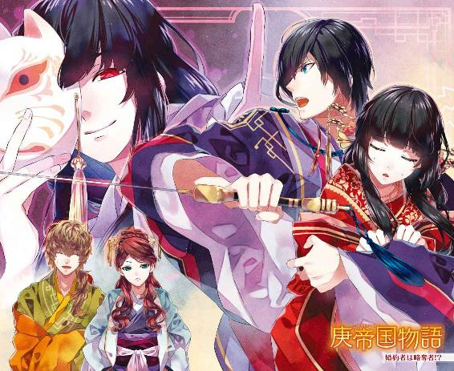
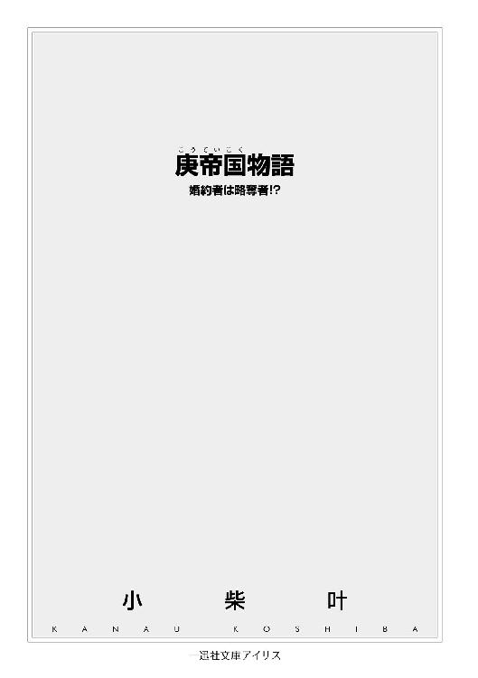
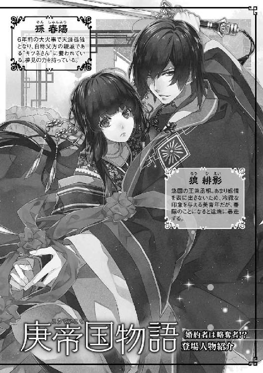
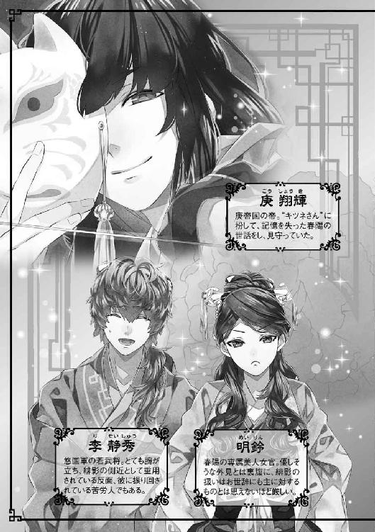
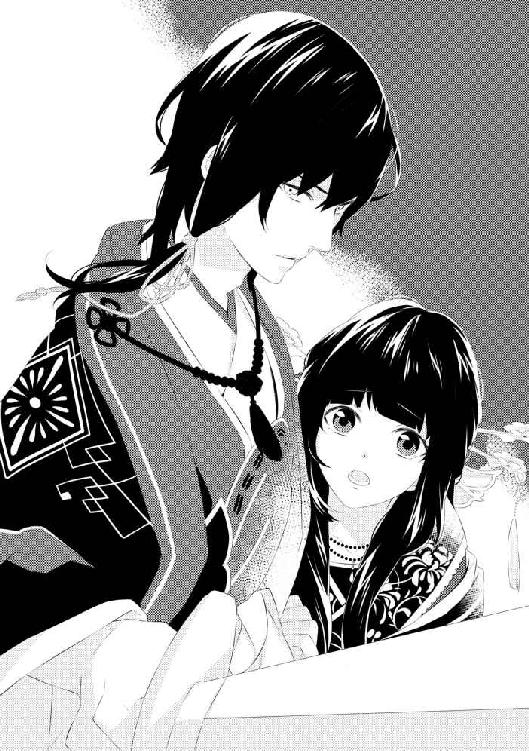
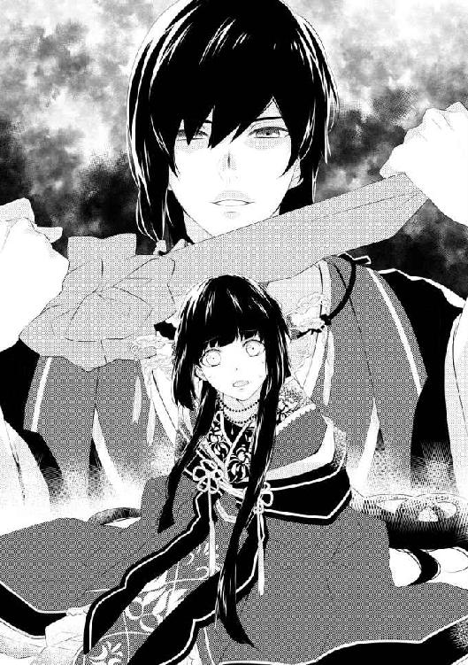
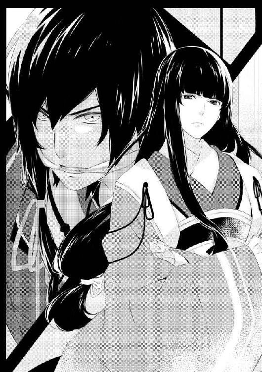
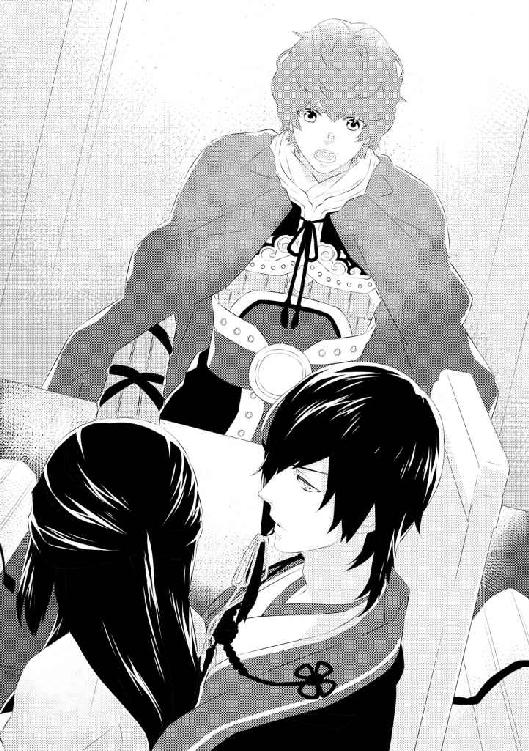
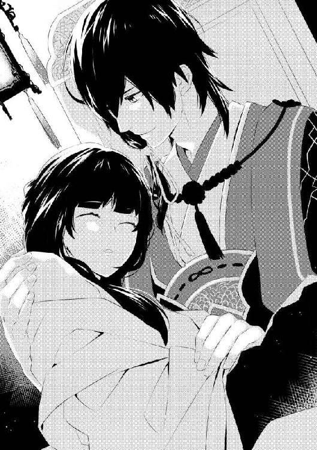
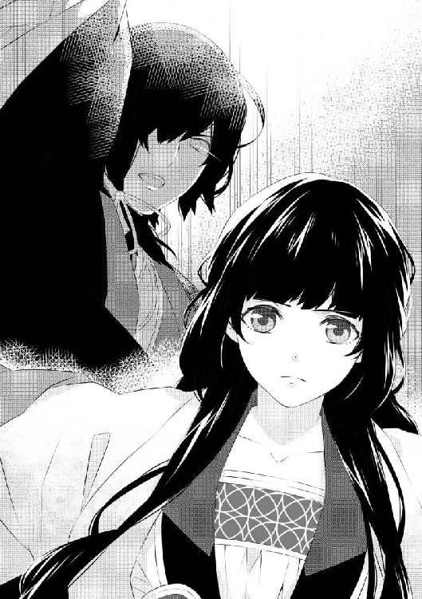

| 庚帝国物語 婚約者は略奪者!? (一迅社文庫アイリス) | |
| 小柴 叶 | |
| (2014) | |




イラストレーション ◆ 悌太
庚帝国物語 婚約者は略奪者!?
（あぁ......私、結婚するのね）
妙に靄がかった思考で、孫春陽は自身の置かれた立場を理解する。
金糸によって至るところに施された、花鳥の見事な刺繍。癖のない長く艶やかな黒髪は、頭の高い位置で結われ、化粧をして額を花鈿で飾っている。帯や簪から下がる玉が、少し動くだけでも涼やかな音を立て、耳を楽しませた。
衣の色は、鮮やかな言祝ぎの赤。
永遠の愛を誓い合う男女が、婚礼の儀を執り行う際に纏う正装だ。
（旦那様は、どんな方なのかしら？）
ちらりと視線を隣へ流せば、自分と同じく真紅の衣に身を包んだ男がいる。
横に広く、縦に小さい。ずんぐりむっくりとした、恰幅の良い体格だ。ゆっくりと、こちらを振り仰いだその顔は――......、
偶に、山から里へ下りてくる狸とそっくりだった。
「狸っ!?」
悲鳴染みた声で叫んだ春陽は、横たえられていた寝椅子から飛び起きた。
同時に、今までの出来事はすべて夢だったのだと察する。
（お、おかしな夢を見てしまったわ）
初秋の良く晴れた小春日和。日向ぼっこに最適だと、朝から院子の片隅にある四阿で、趣味の刺繍をしていた......はずなのだが、そこから先の記憶が曖昧だ。
暖かな陽気に誘われ、知らぬ間に転寝をしてしまったのだろう。
（完徹二日目だったし、睡魔に負けたのは仕方がないかもしれないけど......）
狸（と似た男性）と婚儀を上げるという、あまり嬉しくない夢の内容に肩を落とした。
そう言えばと、春陽はぐるりと辺りを見渡す。屋外で眠ってしまったはずなのに、目が覚めたのは室内――更に言えば、見覚えのない部屋だ。
（まさか、私......かどわかされた？）
血の気が引くのを感じながら、恐る恐る自分の身体を見下ろす。自由に身動きを取ることはできるが、なにか変なことをされていないか、速やかに確認する必要がある。
途端、春陽は脳天に落石でも食らったかのような、それはもう強烈な衝撃に襲われた。
（な、なんなのこの衣装！）
普段は華美過ぎない、控えめな衣服ばかり着ている。今日だって、薄藤色の襦裙に披帛を羽織っていた――はず、なのだが。現在、自分が身に付けているのは、滑らかな真紅の生地に金糸で豪華な刺繍が施された、立派な花嫁衣装ではないか。
驚いたのは、服装が変わっていることだけじゃない。眠っているうちに着替えさせられた花嫁衣装が、夢の中で着ていたものとまったく同じなことが、なによりも恐ろしかった。
「あら～。春陽ちゃん、目が覚めたのね」
突如響いたおっとりとした声に、びくりと身体が大きく震える。
反射的に声のした方向を見遣れば、品の良い初老の女性が部屋に入ってくるところだった。春陽が暮らしている里――仔泊の里正を務めている、張郭益の妻・恵花だ。
「恵花さん、ここは......？」
「張家の邸よ。昨日、夜更かしでもしたのでしょう？ お化粧をする時、うっすらと隈ができてるの見付けちゃったわ。着替え中も起きないから、とても心配したのよ？」
「着替え......って、私にこの衣装を着せたのは、恵花さんなのですか？」
「安心してちょうだい。ばっちり似合ってるわよ」
「そ......」
そういう問題じゃありませんっっ！
春陽が心の中で大絶叫している間も、恵花は長い袖で口元を隠して、淑やかに「うふふ」と笑っている。一体、何がおかしいと言うのか？ 春陽からしてみれば、この現状に笑える要素など皆無だ。
（こんなの、なにかの冗談よね？）
むしろ、冗談であって下さい！ と、春陽はいと高き天空の宮殿に御座す、天帝に全力で祈ってみた。
――が、天の味方は得られなかったようで、相変わらず状況は変わらない。
「あの、恵花さん？」
おずおずと名前を呼べば、間延びした口調で「なあに？」と返される。
ごくりと生唾を呑み込んで。渇きを訴える喉を湿らせた春陽は、決死の思いで尋ねた。
「どうして私......花嫁衣装なんてものを、着せられているのでしょうか？」
花嫁衣装。文字通り、婚儀に臨む花嫁が纏う衣装のことだ。
（私に結婚の予定なんて、なかったはずなのに......）
一体全体、これは如何なることか？
春陽の脳内が、大量の疑問符で埋め尽くされる。
「あらあら～、まぁまぁ～。そんなの、理由は一つしかないじゃない」
小難しい顔で思い悩んでいる春陽に、天然な性格で有名な恵花は――、
「これから、婚儀を挙げるからに決まっているでしょう」
朗らかな笑顔のまま、耳を疑う爆弾発言を繰り出した。
なにを言われたのか理解できず、春陽は言葉を失ってしまう。しかし、それも数拍のこと。すぐさま正気に戻った春陽は、酷くどもりながらも恵花へ質問を投じる。
「こ、婚儀を挙げるって......どなたとでしょう？ 私、なにも聞いていませんし......このことは、〝キツネさん〟も知っているのですか？」
六年前。春陽は大火事で家族を亡くすと同時に、己に関する一切の記憶を失っていた。無情な炎に大事なものを悉く奪われ、天涯孤独となった彼女へ救いの手を差し伸べた人物こそ、「キツネさん」なる人物だ。
本人曰く、春陽の父方の親戚なのだとか。
名前も教えてくれなければ、素顔もキツネのお面で隠している。異様に謎めいた存在であるが、独りぼっちになった春陽に広々とした邸を与え、多くの使用人まで雇ってくれた――命の恩人兼保護者だ。
（私だってこれまで、結婚を考えなかったわけじゃないわ）
春陽が暮らす庚帝国において、女性の婚期は十二～三歳が常識とされている。ちなみに春陽は、今年の春に十六歳の誕生日を迎えた。世間の目から見れば、結婚適齢期を逃した完全な行き遅れだ。
しかし、春陽の場合は結婚ができないわけではない。
敢えて「していない」のだ。
『あの、キツネさん......私、結婚ができる年齢になりました』
十二歳の誕生日を迎えた、その日。お祝いの品を持って邸へ遊びにきたキツネさんに、春陽は己の覚悟を伝えた。
自分は貰ってばかりで、キツネさんになんのお返しもできていない。
大きな邸に、甲斐甲斐しく世話を焼いてくれる使用人達。毎月届く生活費は、飛び出した目玉がどこかへ転がって行くほど高額で、たまに様子を見にきてくれた時に渡されるお土産も、腕の良い職人が作ったと思われる簪や衣ばかりだ。
父方の実家がどんな家柄なのかは不明だが、キツネさん自身は裕福な貴族......もしくは、宮中に仕える高官だろうと、なんとなく予想していた。そうでなければ、春陽を養う莫大な金銭の出所の見当がつかない。あこぎな商売に手を染めていれば話は別だろうが、キツネさんはそんなことをする人ではないと、固く信じていた。
だからこそ、春陽は切実な胸の内を告げたのだ。
『今までお世話になったせめてものご恩返しに、どうか私をお役立て下さい』――と。
言葉は濁したが、要は「政略結婚の道具にしてくれ」という意味だ。
姪から真剣な決意表明をされたキツネさんはと言えば、お馴染みのキツネ面を外すことなく、滂沱の涙を流した。
『お、お願いだから、そんな悲しいこと言わないでおくれ......っ！ 僕はただ、君のことが誰よりも大事なだけなんだ！ こんなに可愛い春陽を、薄汚い政治の駒に利用するだなんて、できるわけないじゃないか......っ！』
お面を涙でふやけさせ、盛大に嗚咽を漏らしながら。どこまでも心優しいキツネさんは、断固として春陽の申し出を受け入れなかった。
働かなくて良い。
無理に結婚をする必要も無い。
『僕が春陽に望んでいるのは、唯一つ。幸せに暮らして欲しいだけだよ。君が幸せな人生を歩むことが、僕の幸せにも繋がるんだ』
――と、超過保護なキツネさんは、過去にそう断言している。
姪至上主義の彼が、春陽本人に断りもなく、婚儀を了承するなんて考えられない。
「キツネさんって、春陽ちゃんがお世話になっている親戚の方よね？」
「はい、そうです」
「勿論、伝えてないわよぉ。お邸の方達にも内緒なんだから。だって、春陽ちゃんに縁談を持って行く度に、『うちのお嬢様には必要ありません』って、素気無く断られちゃうんですもの。それなら、こっそり婚儀を挙げるしかないじゃない」
つまり、キツネさんだけでなく、邸の者達も今回の婚儀について知らないのか。
「えっと、その......い、いきなり婚儀を挙げるなんて言われても......わ、私だって困ってしまいます。一旦邸に戻り、使用人達と相談させてくれませんか？」
一日中、邸から出ない日もある引きこもり気味の春陽だ。人付き合いは苦手で、誰かに意見するなんて、考えただけでも眩暈がする。それでも、勇気を振り絞って己の意思を主張した。
これに恵花は、片頬に手を当て困り顔になってしまう。
「でもねぇ、春陽ちゃん。本当はこんなこと言いたくないんだけど、あなたはもう十六歳なのよ？ 今は親戚の方が親切にしてくれているけれど、そのご厚意がいつまで続くか分からないでしょう？」
「......っ」
柔らかな声音で放たれた一言が、グサリと胸の柔らかい部分に突き刺さる。
キツネさんのことだ。中途半端に春陽を放り出すなんて無慈悲な行為は、なにがあってもしないだろう。けれど、キツネさんに一生面倒を見てもらうのは申し訳なさ過ぎると、常日頃から考えていた。
「結婚をして身を固めることは、春陽ちゃんのためなのよ。今回の御縁を逃したら、次はないかもしれないわ」
（た、確かに......）
多少――いや、大いに強引な手法を使われた気もするが、「この婚姻、冷静に考えると悪い話ではないのでは？」と思えてきた。
キツネさんは、「無理に結婚なんかしなくて良い」と言ってくれた。だが、恵花に諭された春陽は、「やっぱり私は、早く結婚した方が良いかもしれない」と考えを改める。いくら親戚でも、一方的なおんぶに抱っこ状態では居た堪れない。
（これは親離れならぬ、キツネさん離れをする機会かも）
グッと拳を握り締め、春陽は意を決して宣言する。
「わ、私......結婚、します......っ！」
その声は春陽の決心とは裏腹に、情けなく震えていた。
＊ ＊ ＊
結婚します宣言からあっと言う間に、春陽は張家の広間へ連れてこられた。
（ここで、婚儀を挙げるのかしら？）
ぐるりと周囲を見渡すが、参列者もいなければ、飾り付けすらされていない。ただ、交杯酒に必要な酒と杯だけが、ぽつんとお膳の上に置かれている。
質素と言うよりも、明らかな手抜き感が否めない。
「お待たせ。花嫁さん、連れてきたわよぉ～」
「ひゃっ、わっ......！」
ぽんっと恵花に背中を押され、春陽はまろぶように広間の奥へ進む。
最奥の壁際――見事な細工が施された格子窓から、外の様子を眺めている男がいた。彼もまた、真紅の派手な衣装を身に纏っている。
（この御方が、私の旦那様になるのね）
そう言えば、結婚相手についてなにも聞いていなかった。
どんな方なのかしらと、興味を抱いたのも束の間――春陽は、ハッと目を見開く。
（やだ......今のって......）
夢の中で自分が、新郎に対して感じたことではないか。
もの凄く嫌な予感がする。冷や汗が滲み出し、バクバクと心臓が大きく脈打ち出す中、春陽は旦那様（予定）から目が離せずにいた。
この予想が正しければ、彼の顔は――......、
「遅い。俺様を待たせるとは良い度胸だな」
「！」
喉元まで出かかった悲鳴を、寸前のところで飲み込んだ。しかし、受けた衝撃は尋常では無く、危うく腰を抜かしかけた。
それも、そのはずだろう。
振り返った新郎は、狸そっくりの容姿をしていたのだから。
（やっぱり、夢と同じだわ......っ）
嫌な予感が確信へと変わり、絶望から目の前が暗くなりかける。
春陽には、ある〝厄介な能力〟が備わっていた。【悪い未来を夢に見る】というもので、彼女の目の下にうっすらと隈ができているのも、先見の悪夢を見るのが怖くて、自主的な睡眠不足に陥っているせいだったりする。
「なんだ、この貧相な小娘は」
頭の天辺から足の先まで、新郎の舐めるような視線がゆっくりと這う。まるで、値踏みをされているようだ。
高圧的な態度が恐ろしくて春陽が身を竦めていると、新郎が「フンッ」と鼻で笑った。
「色気もへったくれもねぇ、乳臭いガキだ。隈なんか浮かべて熊猫みたいじゃねぇか」
ガーンと、頭の中で低く淀んだ銅鑼の音が鳴る。
確かに自分は、起伏の少ない体型をしている。童顔のせいで化粧をしても似合わない。色気なんてものとは縁遠く、隈ができているのも事実だと自覚していた――が、これから夫婦になろうとしている相手を前にして、堂々と言い放つ言葉だろうか？
「あらあら、郭准ったら。花嫁さんに意地悪なことを言っては駄目よ？」
恵花が穏やかに諭すも、郭准と呼ばれた男は不満顔のままだ。
（郭准って......）
張夫妻の一人息子が、同じ名前だったはず。使用人達が囁き合う噂から、春陽も僅かながらではあるが、彼の情報を得ていた。
四十歳を目前にしても、両親に甘やかされて放蕩三昧。温厚な里正夫婦から、どうしてここまで傲岸不遜な子供が生まれたのか、里の者達も小首を傾げるほどだとか。ふらりと都へ出かけては、賭場や妓楼へ通っているらしい。
（で、でも！ 結婚したら心機一転して、真っ当な方になって下さるかもしれないわ）
むしろ、そうなってくれないと困る。
新婚早々、博打や妓女に現を抜かされては堪らない。
「それはそうと、あの人はどこへ行ったのかしら？」
きょろきょろと視線を動かし、恵花が首を傾げる。
そんな母に対して、敬語こそ使ってはいるが、郭准が不遜な態度で口を開く。
「父上なら今しがた、里の者共に呼ばれて出て行きましたよ。なにやら、外で騒ぎが起きているとか」
「あら、そうだったの。騒ぎの原因は、春陽ちゃんのお邸の使用人さん達かしら？ お昼寝しているところを、内緒で連れてきちゃったものねぇ」
無害そうな顔をして、恵花はさらりと犯罪染みた言葉を吐く。
「仕方ないわ。里の方々が使用人さん達の気を引いているうちに、急いで婚儀を挙げちゃいましょう」
「それもそうですね。見た目は好みではないが、若い娘は嫌いではありませんので」
ニタリと笑った郭准から視線を向けられ、春陽の細い肩がビクリと震えた。
怯えを露わにする少女に、齢四十近い男が下卑た眼差しで告げる。
「お前のような、行き遅れの熊猫娘を嫁にもらってやるんだ。心の広い俺様に感謝しろ。そして、誠心誠意一生を懸けて尽くすことだ」
「な......」
なにを言っているんだ、この人は。
婚期を逃したのも、外見が動物に似ているのだって、お互い様じゃないか。よくもまぁ、ここまで自分のことを棚に上げられるものだ。
（やっぱり、この御方との結婚は無理......っ！）
歳の差や容姿は、別にどうでも良い。春陽が生理的に受け付けないのは、先ほどから見聞きした郭准の言動にあった。
他人のことを平気で見下す。
そんな人物と、これからの生涯を共にするなんて考えたくもなかった。
「あ、あの......」
なんとしてでも、この場から逃げ出さなければ！
目的が「結婚」から「逃亡」に切り替わり、春陽は意を決して喉の奥から声を絞り出す。
「やっぱり、使用人の皆に心配をかけたくないので......一旦、家に帰らせて下さい」
「嫌だわ～、春陽ちゃん。おかしなこと言わないで。今日から春陽ちゃんの居場所は、この張家の邸になるのよ？ 他に帰る場所なんてないわ」
「そんな......っ！」
「春陽ちゃんをお邸から連れ出すの、と～っても大変だったのよ？ だって、いつも使用人の方達が近くにいるんですもの。だから今回は、里の方達にお手伝いを頼んだのよ」
里の住人が、大勢で「火事だ！ 手を貸してくれ！」と嘘を叫び、使用人達を春陽から遠ざける。その間に、こっそりと院子に忍び込んだ郭益が、四阿で寝こけている春陽を連れ出したのだと、恵花は平然と語って聞かせた。
よもや里ぐるみで、自分の婚儀を強行しようとしているとは――開いた口が塞がらない。
（ど、どうしよう。自力じゃ逃げ出せそうにないし、邸の皆も里の人達に邪魔をされて、助けにくることができないわ。こんな時、一体どうしたら......）
あれこれと春陽が考えを巡らせていると、いきなり肩をガシッと掴まれた。
反射的に顔を上げると、そこには薄ら笑いを浮かべる狸顔がある。
「案ずることはありませんよ、母上。婚儀を終えてしまえばこっちのものです。夜を待たずして、床を共にしてしまうのも良いかもしれません」
下劣過ぎる提案に、「ひっ！」と情けない悲鳴を零してしまう。
本気で身の危険を抱く春陽を尻目に、恵花は「あらあら、まぁまぁ！」と喜び出す。
「郭准は大胆な子ねぇ。これなら、孫の顔も早く見ることができそうだわ」
さぁ、早く儀式を――と、母親から急かされた郭准は、夫婦の誓いを立てることもせず、いきなり交杯酒用の杯を手に取った。
彼は手酌で酒を注いだ杯を、強引に春陽の口元へ運ぶ。
「さぁ、飲め。そして、俺様にも酒を飲ませろ」
肩を掴んでいた手は、いつの間にか背中へと回されていた。
無理やり郭准に身体を抱き寄せられ、唇に杯を押し付けられる。この暴挙に、春陽は半ば仰け反るように顔を背けた。
たとえ手荒な手段を行使されたとしても、一度杯を交わしてしまえば、婚礼の誓約が成立してしまう。「一滴たりとも飲むものか」と、春陽がギュッと口を引き結んでいると、郭准が苛立たしげに舌打ちをした。
「生意気な小娘だ。お前は、黙って俺様に従えば良いんだよ！」
「い、嫌......です」
グイグイ押し付けられる杯から逃れるため、駄々を捏ねる子供の如く首を左右に振る。その弾みで、髪に差していた簪が郭准の手の甲に当たってしまった。
予期せぬ痛みに驚いたのだろう。郭准は持っていた杯を取り落し、酒のほとんどが彼の衣に染みを作った。
「なにしやがる、この馬鹿娘！」
「きゃっ！」
思い切り突き飛ばされた春陽は、長い裾に足を取られてその場に倒れ込む。
身体を床に打ち付け、低い呻き声が零れる。生理的な涙を浮かべつつ、どうにか上半身だけ起こすと、鬼の形相をした郭准が目の前に仁王立ちしていた。
「どうやらお前には、躾けが必要なようだ」
そう言った郭准は、目が血走り、額には青筋が浮いている。
まずい、完璧に怒らせてしまった。謝って許しを乞おうとするも、時すでに遅し。春陽を踏みつけようと、郭准の足がすぐそこまで迫っていた。
（もう駄目......っ！）
逃げることも、反撃することもできない。
お手上げ状態の春陽が、なにもかもを諦めて目を閉じようとした刹那――先ほどまで、郭准が外の様子を窺っていた窓が、格子ごと外側から蹴破られた。同時に、春陽を足蹴にしようとしていた郭准までもが、見事な放物線を描いて後方へ吹き飛ぶ。
（な、なにが起きたの......？）
春陽は唖然とした表情で、大きな眼をぱちくりと瞬かせる。
彼女の視線の先には、暗い濃紺の衣に付いた汚れを払う青年がいた。年の頃は二十歳くらいだろうか？ 窓を粉砕して広間へ飛び込んできた上に、郭准を蹴り飛ばした犯人だ。
黒い長めの短髪は、右頬にかかる一房だけが長く、緋色の髪紐で飾られている。長身で眉目秀麗だが、どこか影のある雰囲気を醸し出しており、表情からは思考を読み取ることはできない。腰には剣帯を巻き、一振りの長剣を携えている。
「ちくしょう、痛ぇじゃねぇか！ てめぇ、何者だ!?」
おろおろしている恵花に助け起こされながら、郭准が野太い怒声を張り上げた。
ゆらりと顔を上げた青年は、底冷えする眼差しを郭准へ向け――、
「俺は、春陽様の婚約者だ」
起伏の少ない口調で、予想外の爆弾発言を炸裂させた。
降って湧いた婚儀の次は、見ず知らずの婚約者の登場ときたものだ。これには春陽も、「今日は厄日なのかしら？」と遠い目になった。
春陽が現実逃避している間も、青年の静かな暴走は続く。
「この世が誕生した瞬間から、春陽様に花嫁衣装を着せるのは俺の役目だと、天命によって定められていたはず。それなのに貴様は、俺だけの大事な花嫁を横取りしようとした挙句、あろうことか汚らしい足で虐げようとするとは――......」
切れ長の双眸を、スッと眇めて。全身から凄まじい殺気を放ち出した青年は、地獄から響くような低い声で郭准に問う。
「さぁ、これからどうなりたい？ 都の大路に首を晒すか？ 熱した油に肩まで浸からせ、三日三晩、火を絶やさずに茹で上げるのもありかもしれん。牛馬に四肢を括りつけて、八つ裂きにするのも捨て難いな。――貴様のような下卑た輩は、春陽様に指一本でも触れることすら万死に値する」
「な、なんだと!?」
青年の物言いに激昂した郭准は、床に座り込んだままの春陽をギロリと睨む。
彼は口角から泡を飛ばす勢いで、罵倒の言葉を春陽に浴びせかけた。
「どういうことだ、熊猫娘！ 夫となる俺様を差し置いて、裏でこんな野蛮な男と通じていたのか!?」
「ち、違......っ！」
「言い訳するんじゃねぇ！ この、尻軽女が！」
青年とは初対面だと説明しようにも、口汚く罵られた春陽は押し黙る。
一方的に詰られるばかりで話が通じない。事実無根の暴言が心に突き刺さり、恐怖や悲しみから、じわりと視界が滲み出す。
もう少しで、涙が零れ落ちそうになっていた時だ。
「黙れ」
郭准から庇うように、春陽の前へ青年が立ちはだかった。
青年は無駄の無い動作で、漆黒の鞘から長剣を抜き放つ。手入れの行き届いた白刃が、破壊された窓から差し込む陽光を反射して、飢えた獣の歯牙の如く輝いた。
抜身の刃を目にした途端、さしもの郭准も怯んだ様子で口を噤む。
「貴様の目は節穴か？ あぁ、聞くまでも無いことだな。この可憐で気高き懇篤を極めたお方が、あろうことか熊猫に見えると言うのだから、節穴に違いあるまい」
表情や言葉には、相変わらず感情が込められていないが。青年が発する殺気は、刻々と濃度を増してゆく。
「役に立たない物が顔に付いているのは、さぞかし邪魔であろう？ 俺が直々に不要な目玉を抉り出し、我が花嫁を二度と愚弄できぬよう、その口も永遠に閉ざしてくれるわ」
狂気的な台詞を呟きながら、青年はゆったりと歩を進める。
彼が構えている剣の切っ先は、郭准の絶望に見開かれた眼球を捉えていた。宣言通り、抉るつもりなのだろう。彼の発言が本気ならば、その後に辿る郭准の運命は【死】だ。
「ま、待って下さい！ 乱暴は、良くありません！」
春陽は咄嗟に、青年の腰元へ飛び付いた。
目の前で人が殺されかけている。たとえ、自分に罵詈雑言を浴びせかけてきた相手でも、黙って見ていることはできなかった。
「これは、夢か？」
ぴたりと足を止めた青年は、腰に縋り付く春陽を見下ろす。
闇の深淵を彷彿とさせる、漆黒の瞳だ。
「春陽様が、俺に抱き付いている。春陽様が、俺に......なんたる、僥倖......っ！」
これまで心の内を表に出さなかった青年だが、春陽の姿を視界に収めると目元が僅かに和み、眼の奥に温かな光が宿った。
至極控えめだけれど、確かに彼は微笑んでいる。
初めて青年が見せた表情の変化に、春陽の心臓がトクンと高鳴る。
（この気持ちは、なに？）
青年と会ったのは、今日が初めてのはずなのに。
何故だろう。彼の笑顔だけは、ひどく懐かしいと感じた。
胸中に芽生えた不可解な感情に、春陽が戸惑っていると、複数の慌ただしい足音が聞こえてきた。足音はどんどん近くなり――......、

「失礼します！ こちらに、孫春陽と言う名の娘はおりませんか？」
やがて、ふわふわの猫っ毛を一つに束ねた青年が、広間に駆け込んできた。
温和な顔立ちをしているが、背後には三名の兵を連れており、青年自身も堅固な鎧を身に着けている。腰に剣を佩いているのは勿論、大振りな槍まで担いでおり、一目で武人――ただの兵士ではなく、将軍位に就いている人物だと分かった。
（私のことを、探しているみたいだけど......）
部下まで引き連れた武将が、なんの用だろう？
思わず名乗り出そびれた春陽だったが、若武将の方が彼女に目を留めた――が、すぐに彼の視線は、抜身の剣を握った青年へと移った。
「あの、何をしておいでで？」
微かに頬を引き攣らせた若武将が、おずおずと青年に問う。
春陽に向けていた笑みを消し去り、元の無表情に戻った青年は堂々と答える。
「俺の花嫁を侮辱した愚か者を、この手で裁くところだ。刑罰の審議をせずに済むだろう？」
「な......っ!?」
青年の返答に瞠目した若武将は、素っ頓狂な声で絶叫した。
「何ということをしようとしているんですか！ ほら、剣を収めて下さい！ あなたが問題を起こす方が、刑罰の審議以上に厄介なことになるんですからね!?」
「知ったことか。春陽様を悪し様に言われ、黙っていることはできぬ」
「だからと言って、あなた自ら手を下す必要はありません！ 私が責任を持って捕縛し、然るべき罰を与えるよう命じますので！ どうか落ち着いて下さい、丞相！」
必死の様相で懇願する若武将は、謎の青年を〝丞相〟と呼んだ。
（丞相って、確か......）
帝の次に偉い人じゃないか！
そんな貴い立場にある人物が、どうしてこんな場所に来ているのか？ そして、彼が春陽の婚約者だと自称しているのは、何故なのか？
思考を巡らせようにも、糸口が見つからず――......、
暫し、春陽は考えることを止めた。
＊ ＊ ＊
春陽の暮らしている国――庚帝国には、五つの勢力が存在する。
悠、奏、慶、鋒、祥。この五勢力は国として存在し、帝国の頂点に君臨する帝とは別に、それぞれ仕えるべき君主を得ていた。
この奇妙な国状は、重大な理由があるからこそ成り立っている。
庚帝国の中心部に聳える、霊峰・天昇山。その頂は、天帝が治める天の国へ通じており、天仙が降臨する地としても有名だ。
天仙は地上へ降り立つと、呼び名が変わる。
人の子を教え導く善き者は、地仙。
人心を乱し凶事を招く悪しき者は、妖仙。
妖仙は闇の力を糧とする【妖術】を使い、〝物ノ怪〟という化け物を召喚する。
この世に発現した物ノ怪は、命が尽き果てるまで破壊と殺戮を繰り返す。田畑を荒し、集落を襲っては人間の血肉を喰らう。強力な闇の力を秘めているため、常人では傷一つ負わすことのできない、非常に凶悪な存在だ。
物ノ怪を倒すには、地仙の力が必要不可欠となる。
人界の出来事に直接介入はしないが、地仙は己の仙力を込めた武器【仙具】を作り出すことで、物ノ怪に対抗し得る手段を人々に授けた。仙道の素質がある者を弟子に取り、仙術を学ばせて道士にすることもある。
善良な地仙の助力により、人間は物ノ怪を倒す術を手に入れた。
しかし、庚帝国の国土は広大だ。帝一人の力では、万民を物ノ怪の脅威から庇護し、国の隅々まで善政を敷くことは不可能だった。
故に、五つの国が誕生した。
一国に与えられた領地は、等しく三州。
帝に代わって王が治政を行い、物ノ怪の討伐も国軍が指揮を執る。他国への侵略行為は最大の禁忌とされ、未だかつて国同士の争いが起きた記録は、どの文献にも残されていない。物ノ怪という、最大にして最悪の敵がいるからこそ、同族間で無益な血を流す暇がないのだ。
帝の宮殿がある清都は悠国の領地内にあるため、悠国の君主は、代々帝を守護する役目も担っていた。故に、悠王は臣下の中で最上位とされる〝丞相〟の位を与えられ――五勢力の中でも、特別視される存在であった。
＊ ＊ ＊
「春陽様、如何なされましたか？」
ぽかんと呆けていた春陽は、謎の青年――否、悠王兼丞相から顔を覗き込まれ、ハッと我に返った。
体勢は、相変わらず彼の腰元に縋り付いたままで、サァッと全身から血の気が引く。
「も、申し訳ございません！」
勢い良く飛び退いた春陽は、すぐさま身体を丸めて叩頭する。
「丞相であらせられるとは露知らず、大変なご無礼を......っ！」
仔泊の里は、悠国の陵州珂県にある。
自国の王――ましてや、帝に次ぐ権力を誇る丞相に抱き付くなど言語道断！ 不敬罪に処せられる大失態だ。
（ど、どうしよう！ 私ったらなんてことを......っ！）
悠国の現君主は、「狼緋影」と言う。六年前に清都が物ノ怪の軍勢に襲撃された際、若くして数々の武勲を上げた猛将だと、暇潰しに読んだ書に記されていた。
ひとたび物ノ怪が出現すれば、自ら兵を率いて出陣するような豪傑だ。
彼の手にかかれば、春陽の首を落とすくらい簡単だろう。
（いろんなことがあったけど、思えば短い人生だったわ......）
せめて自分が仕出かしたことのせいで、キツネさんにまで迷惑がかかりませんようにと、春陽は祈りを捧げた。
小刻みに震えながら叩頭する春陽を見て、緋影は手にしていた刃を鞘に収める。そして、春陽の元へ歩み寄った彼は、その場へ跪き彼女の上体をそっと抱き起こした。
「どうか、頭を上げて下さい。あなたの愛らしいお顔が見えなくなってしまいます」
「......っ!?」
よもや、日頃の不摂生がもろに出ているこの顔を、「愛らしい」と称される日が来るとは。
驚き過ぎたせいで、首の代わりに目玉が吹っ飛んだかと思った。
（丞相は、常人と違った感性をお持ちなのかしら？）
大きく瞠った眼をぱちくりと瞬かせ、春陽が呆気に取られていると、今度は緋影に右手を掴まれる。
なにをするのか、目を離せずにいると――......、
手の甲に、口付けが落とされた。
あんぐりと大きく開かれた口から、半ば魂が抜け出す。
唇ではないけれど、接吻された。初対面の異性から一方的に！
「な、なにをするのです！」
放心状態から立ち直った春陽は、反射的に緋影の手を振り払った。
頬が爆発しそうなくらい熱い。心臓もバクバクと大きく脈打ち、押し寄せる羞恥心で胸が苦しくなる。頭や心の中がぐちゃぐちゃになり、自分が相手にしているのが誰なのかすら、気にする余裕もなくなった。
真っ赤な顔で睨め付けてくる春陽に、緋影は切なげに柳眉を寄せる。
「長年お待たせしてしまったので、拗ねていらっしゃるのですね。そうでしょう？ そうなんですよね？ そうでなければ、春陽様が俺の手を振り払うわけがありません」
「......え？」
「しかし、拗ねている春陽様も素敵です」
沈痛な面持ちで、意味不明なことを口早に語り出したかと思いきや、いきなり幸せそうな微笑を向けられる。
ころころ変わる緋影の言動に、春陽はすっかり毒気を抜かれてしまった。
「お傍に添うことが叶わず、申し訳ありません。この狼緋影、六年前に交わした約束に従い、春陽様と婚儀を挙げるべくお迎えに参上致しました」
春陽に深々と頭を垂れた緋影は、玲瓏たる声音で宣言する。
六年前――。
春陽が、家族と記憶を失った時期ではないか。
「約束とか、婚儀とか......なんのことです？」
率直な疑問を口に出せば、弾かれたように緋影が顔を上げた。
「そうか、あなたは記憶を失っていたのでしたね。俺としたことが、すっかり失念しておりました」
ちなみに――と、緋影は酷く真剣な眼差しで続ける。
「俺のこともお忘れですか？」
「は、はい。記憶にございません」
「どれほど些細なことでも構いません。なにか一つでも、思い当たる節は？」
「すみません......覚えて、いません」
「......そうですか......」
春陽が素直に答えた結果、緋影は力無く項垂れてしまう。
哀愁漂う彼の姿を見ていると、途方もない罪悪感が胸中に押し寄せてきた。
一国の君主と、一介の民草。どのような過程を踏んだのかは不明だが、恐らく自分達は、過去に何かしらの交流があったのだろう。緋影の反応から推測すると、それなりに親しかった可能性が高い。
（知り合いに存在を忘れられたら、落ち込んで当然よね......）
記憶喪失後に、初めてキツネさんと会話した時のことを思い出す。
心から無事を喜んでくれた彼に、幼い春陽は「あなたは誰ですか？」と尋ねた。表情こそお面に隠され見えなかったが、その後に発せられたキツネさんの声は、隠しきれない悲しみで微かに震えていた。
忘れてしまうより、忘れられてしまう方が辛いのかもしれない。
キツネさんとの一件以来、そう思うようになったからこそ、春陽は激しい自責の念に駆られてしまう。自分が忘れてしまったせいで、緋影を傷付けてしまった――と。
（こんな時、どんな言葉をかけたら良いのかしら？）
切なげに眉根を寄せ、春陽が悩んでいた時だ。
「......くっ」
緋影の形の良い唇から、低く押し殺された声が零れ落ちた。
存在を丸ごと記憶から消し去られた悔しさを堪えているのだろうか？ それとも、傷心の涙を流すまいと懸命に涙腺を引き締めているのか？ 様々な予想が脳裏を過り、春陽は一層「どうしよう、どうしよう」と慌てふためく。
だが、彼女もすぐに異変を察知した。
「......く、くくく......」
（あれ？ もしかして、丞相......）
――笑ってる？
呻き声かと思ったものは、喉の奥から発せられる笑い声だった。
「あ、あの......丞相？」
どうなさいました？ と、春陽が狼狽しつつ声をかけようとする。
次の瞬間、くつくつと笑い続けていた緋影が、伏せていた顔を勢い良く上げた。そして彼は、己の武骨な手で春陽の小さな両手を優しく包み込むと、どこまでも真摯な表情で告げる。
「春陽様。あなたが俺の存在や、俺と交わした約束を忘れてしまったのは、天帝から与えられた試練なのですよ」
「て、天帝の試練、ですか？」
「そうです。私達二人の絆がどれほどのものか、試そうとしているに違いありません」
緋影は力強く断言し、艶然と微笑む。
武人として名高い緋影だが、異様に整った見目からは凄まじい色香が漂っている。蠱惑的な笑みを向けられた春陽は、あまりの美しさにゾクゾクと背筋を震わせ......、
「というわけですので――結婚しましょう、春陽様」
続けられた言葉に、別の意味でもゾクリとさせられた。
「結婚って......私と、丞相が......ですか？」
「当然です。俺は春陽様以外の妻を娶るつもりはありません。あなたと結婚できなければ、私の人生などなんの価値もない」
「そ、そんな。大げさです」
郭准にも言われたが、自分は貧相で女性的な魅力に欠けている。年齢のわりに子供っぽい顔立ちをしているし、自主的な寝不足のせいで万年血色が悪いのだ。おまけに、六年前の火事で負った火傷の痕が、今も背中に残っている。
こんな自分よりも、緋影の妻に相応しい娘は帝国中にごまんといるだろう。
しかし、緋影は「大げさなものですか」と頭を振る。
「これまでも、これからも。俺が生涯をかけて愛するのは春陽様ただお一人。過去の記憶を失くされたのなら、俺が思い出させてみせますよ――愛の力で」
うっとりと掠れ気味の声で囁かれ、ブワッと毛穴が一気に逆立つ。
腰に響く甘やかな声音や、熱烈的な求婚の言葉にゾクゾクしたわけではない。瞳の奥に不穏な光を宿し、口元だけ弧を描かせた陰のある緋影の微笑に、ゾワゾワしたのだ。
「さぁ、春陽様。結婚しましょう」
「ひぃっ!?」
「怖がることなどありません。俺が必ず、あなたを幸せにしてみせます。だから、結婚して下さい。結婚、結婚、結婚......」
怖がるなと言われたが、そんなの無理な相談である。目だけが笑っていない虚ろな笑顔で、執拗に結婚を迫られているのだ。言動も病的だし、雰囲気も空恐ろしい。
本能がうるさいくらい、「逃げろ！」と訴えかけてくる。けれど、両手をがっちりと掴まれているので、微かな身動ぎくらいしかできなかった。どうにかして、緋影の拘束から逃れられないものか、冷や汗を掻きながら春陽が考えていると――不意に、両手が自由になった。
春陽の手を放した緋影は、ごそごそと懐を探っている。
（い、今のうちに逃げないと......っ！）
意を決して立ち上がろうとするが、腰を浮かせたところで春陽は尻もちをついてしまう。花嫁衣装の裾が「何か」に引っ掛かり、立ち上がることができないのだ。
――無論、「何か」とは緋影である。
彼は床についている片膝で、春陽が着ている花嫁衣装の裾を踏んでいた。緋影は細身だが、やはり戦場で武器を振るう武人だ。鍛え抜かれた身体についた筋肉はずしりと重い。春陽の細腕では、裾をいくら引っ張っても脱出は不可能だった。
「どこへ行くつもりですか、春陽様」
穏やかだが、仄暗い狂気を感じさせる緋影の音吐。
ビクリと肩を震わせた春陽が、裾に向けていた視線を恐々と上げてゆけば、緋影は両手で長い紐を構えていた。懐を探っていたのは、この紐を取り出すためだったのだろう。
紐の色は、婚礼衣装と同じ鮮やかな紅だ。同色の生地から作られた大輪の花飾りが、等間隔に幾つも縫い付けられている。
（これって......っ！）
新郎新婦が婚儀の際に持つ、伝統的な花紐ではないか！
夫婦の絆が永遠に結ばれ、華やかな人生を共に歩めるように――という、願いが込められている代物だ。
「丞相、その花紐は......」
「俺が一針一針、春陽様への想いを込めて作り上げました。この六年、政務や物ノ怪討伐の合間に、裁縫の鍛錬を積みましたからね。我ながら、素晴らしい出来栄えだと自負しております」
「は、はぁ......。ですが、花紐は花嫁が作るものでしたよね？」
「針で指を刺したらどうするのですか。俺は、春陽様が傷付く姿など見たくありません」
（......私、刺繍が趣味なんだけどなぁ......）
張家に連れ去られる直前も、黙々と刺繍に励んでいた。日頃から針を持つ生活をしていたなんて、緋影に知られたらどんな反応をするか、考えただけでも恐ろしい。
――いやいや、今は裁縫の腕なんて関係ない。
手作りの花紐なんぞを取り出して、緋影はなにをするつもりなのだろう？
（まさか......本当に私なんかと、婚儀を挙げるおつもりなの？）
自分と緋影では、身分も容姿もすべてが不釣り合いである。一通りの礼儀作法や、文字の読み書きなどは身に付いているが、一国を統べる君主の妃になるだなんて絶対に無理だ。そんな度胸、どこを探しても見つかりっこない。
それに、この青年が本物の狼緋影なのか怪しいものだ。
部下らしき若武将は、青年のことを「丞相」と呼んでいたが、呼称程度ではなんの証拠にもならない。勝手に悠王・狼緋影の名を騙り、春陽をかどわかそうとしている可能性がある。
（でも、丞相のフリをするなんて重罪よ）
事が公になれば、死罪は免れないだろう。そんな危険を冒してまで、自分を攫う利点はあるのだろうか？ ――と、春陽は深く考え込んだ。
その刹那。ピシッと鋭い音がして、春陽は「きゃっ」と小さく悲鳴を上げてしまう。
見れば緋影が薄笑いを浮かべて、何度も花紐を引き鳴らしているではないか。
「名残惜しいですが、楽しいお喋りはこの辺にしておきましょう。一刻も早く、あなたを清都にある我が邸へ連れ帰り、その衣装を脱がさねばなりませんので」
「ぬ、脱が......え？ え？」
「あなたは俺だけの花嫁です。本来であれば、俺が贈った花嫁衣装しか着ないはずだった。春陽様だって、俺が贈った花嫁衣装しか着たくありませんよね？ そうですよね？ そうに決まっています」
すらすらと淀み無い口調で、緋影は勝手に自己完結してしまう。
最後に、一際強くピシッと花紐を引き鳴らして。自称・悠国君主は、陰鬱さを孕んだ笑みを湛え、春陽との距離をじりじりと詰めてゆく。
「春陽様は俺のものだと、皆に知らしめねばなりませんね」
何をするのかと、尋ねる暇すら与えられなかった。混乱続きで目を白黒させている春陽の身体を、緋影が花紐で縛り上げてしまったのだ。
きつくもなければ緩くもない。
痛まず跡も付かないという、絶妙な力加減だ。
「俺が手ずから作った花紐が、春陽様を包み込んでいる......なんと、神々しい光景なのだろう。城仕えの画師に今すぐ絵姿を描かせたい。観賞用と保存用、予備も含めると最低三枚は必要だ」
包み込む？ 雁字搦めの間違いだろうに。
緋影は春陽への想いを込め、花紐を作ったと明言していた。それが真実であれば、彼の愛は見ての通り〝束縛〟を意味するのかもしれない。
（私、これからどうなるの？）
完全に身動きを封じられた春陽は、俎上の魚と同じ気分を味わっていた。
どんなに必死であがいても、逃げ出すことはできない。今や自分の命運は、緋影の手に握られているのだ。
――否。諦めるのは、まだ早いかもしれない。

（恵花さん達にお願いしたら、助けを呼んでもらえるかもしれないわ）
幸い、口だけは花紐の束縛から外れていたので、発声の自由は保たれていた。必死に救いを求めれば、恵花や郭准とて鬼ではないだろう。きっと、外から里の者を呼んできてくれるはずだ......と、思いたい。
しかし、春陽の計画は既に狂いが生じていた。
（あ、あれ？ 二人共、どこに行ったの？）
忙しなく辺りを見回すが、恵花と郭准は広間から姿を消していた。ついでに、緋影の部下らしき若武将と、彼が従えていた兵の姿もなくなっている。
春陽が緋影に気を取られている内に、恵花と郭准は若武将達に連行されていたのだ。
（もう、おしまいだわ......）
手も足も出なければ、声を出しても救われない。完全に成す術を失くした春陽は、蒼白の顔色で、更に血の気が引いて行く音を聞いた。
次の瞬間、花紐で縛められた身体が突然の浮遊感に襲われる。「ひゃあ！」と情けない声を零し、ギュッと目を瞑って身を竦めていると、耳元で艶めかしい低い声が囁いた。
「我が愛しの花嫁。俺達の愛の巣へ帰りましょう」
「っ!?」
反射的に目を開けると、怖いくらいの美顔が至近距離で視界に飛び込む。
拘束された状態で、横抱きに抱え上げられてしまったようだ。お互いの鼻先が触れ合うどころか、唇が重なり合いそうな近さに緋影の顔があり、ギョッとした春陽はついに絶叫する。
「嫌ぁぁ～～っっっ！ 離して下さい、おろして下さい！ 私の帰るべき場所は、仔泊の里の邸だけです！」
次から次へと巻き起こる突飛な事態に、心も頭も限界を迎えた。思考が停止し、受け止めきれずに溢れ出した感情が赴くまま、春陽は半泣きで訴える。
動けないなりにもがいていると、程良い締め付けだった花紐が、肌にきつく食い込んでしまう。それでも、痛みを堪えてウゴウゴしていれば、
「いけませんよ、春陽様」
不意に、切なげな緋影の声音が鼓膜を震わせた。
その胸が締め付けられる響きに、春陽は抵抗するのも忘れてハッと顔を上げる。
「そのように暴れられては、せっかくの玉の肌が傷付いてしまわれます」
「......っ！」
「お願いですから、ご自分を大切になさって下さい。どんなに些細なことであったとしても、あなたが苦しむ姿だけは見たくないのです」
間近で見返した緋影は、酷く辛そうに眉根を寄せていた。
目に見えない胸の奥を抉られたような、深い悲哀を湛えた表情だ。花紐が締まり、肌が痛んでいたのは春陽なのに――緋影の方が、余程痛みを堪えているように見えた。
「俺は二度と、春陽様を傷付けたりはしない。今度こそ必ず、あなたを守ると決めたのです。だから、俺と結婚をして......俺の隣で、幸せになって下さい」
守るとか、結婚するとか、当人を差し置いて勝手に決めないで欲しい。
正直、そんな感想を春陽は抱いた。けれど、緋影の悲しそうな顔を目の当たりにし、哀切な言葉を聞いていると......脳裏が微かにうずき、喉元に妙な閉塞感が生じる。
（火事のせいで、私はなにも覚えていないはずなのに――......）
記憶が失われたとしても、心に刻まれた想い出の名残りがあるのだろうか？ 緋影が時折見せる表情に胸の内が妙にざわめく。まるで、頭では忘れていることを、心が「覚えている」と叫んでいるようだ。
こんな現象に見舞われたのは、今回が初めてだった。
（私と丞相は、やっぱり過去に繋がりがあったのかもしれないわ）
記憶を手放して尚も、心に焼き付いて完全に忘れられない強い絆があったはずだ。
それだけは意味もなく確信が持てたが、どのような絆だったのかまでは分からない。必死に思い出そうとしても、心の中に湧き出る懐かしさが増すばかりで、記憶は依然として蘇る兆しが見られなかった。
――そんなこんなを、春陽が大人しく考えていると、
「では、参りましょうか」
暴れる危険性が薄くなったと判断を下し、緋影がスタスタと歩き出す。
大きな歩幅で足早に移動しているのに、ほとんど揺れが伝わってこない。腕に抱いた春陽に負担が掛からぬよう、緋影が最大限の配慮を成しているためだろう。
「......って、どこへ行くんですか！」
深い思考の海から浮上した春陽が、改めて叫ぶ。
何食わぬ顔に戻った緋影は、歩みを止めることなく答える。
「先ほども申し上げましたが、清都にある我が邸です。春陽様をお迎えする準備は、六年前から整えておりましたので、どうかご安心下さい」
「で、ですから！ あなたのお邸には行かないと、私も先ほどから言っているではありませんか！」
「ふむ......春陽様は都での生活がお嫌なのですね。ならば、俺がこの里で暮らすことにしましょう。用意した衣装や装身具は、部下に運び込ませれば良いだけのこと」
「なに言ってるんですか、丞相！」
緋影のぶっ飛んだ発言に対し、春陽に代わって突っ込みを入れたのは、猫っ毛の若武将だった。張家の邸から出てきた緋影を、玄関先で待ち構えていたのだろう。
名も知らぬ若武将は、そのまま上司を厳しく追及する。
「詳しい事情は存じませんが、あなたは一国の主であり、帝を守護するお立場なのですよ？ 本日分の仕事も残っておりますし、これ以上城を空けるなんて黙認できません！ 民を見捨てるおつもりですか!?」
「致し方あるまい。俺がこの里で暮らすことを、春陽様がご希望なさっているのだから」
「い、いえ。私、別にそんなこと言ってませんけど......」
咄嗟に春陽が否定すると、緋影の表情が俄かに明るくなった。
「では、俺の邸にお越し下さるのですね」
「え？」
「俺と春陽様が、今後の人生を共にすることは決定事項です。里で暮らさないのであれば、俺の邸で暮らすということですよね？ えぇ、みなまで仰られずとも承知しております」
いや。是非とも、最後まできちんと言葉を聞いて欲しい。そして、自分に都合良く曲解するのではなく、率直な意味を受け取って欲しいものだ。
春陽が再度、反論を口にしようとした時である。
「ところで丞相。そちらのお嬢さんは、なにゆえ花紐で縛られているのですか？」
緋影が抱いている少女の存在に気付き、若武将が怪訝そうに眉を顰めた。
不可解だと言いたげな若武将に、緋影はしれっと答える。
「この御方は俺の花嫁だ」
「は!?」
「静秀、事後処理はお前に一任する。俺は一足先に春陽様を清都へお連れせねばならん」
「お、お待ち下さい！ いきなり城を飛び出したかと思えば、花嫁を迎えるだなんてどういうことですか？ それ以前に、花紐で縛られた花嫁なんて見たことがありません。丞相が他人の花嫁を、無理やり連れ去ろうとしているようにしか見えないのですが......。誘拐は、れっきとした犯罪ですよ？」
「戯けたことを言うな。春陽様は俺だけの花嫁だ。むしろ、あと一歩駆け付けるのが遅れていたら、どこの馬の骨か知れぬ輩に奪われていたのだぞ。故に、俺が作った花紐で御身を飾らせて頂き、この御方が誰のものかを証明しているのだ。どうだ、美しいだろう？」
「余計に意味が分からなくなったのですが、花紐で好いた女性を飾り立てるのは、丞相の性癖ですか？ 非常に申し上げ難いのですが、女性の身体を飾るのは玉や衣で留めた方がよろしいかと思われます――......って、丞相！ まだ話は終わっていませんよ!?」
静秀と呼ばれた若武将が慌てて制止するも、華麗に無視した緋影は、知らん顔で止めていた歩みを再開させる。
彼が向かったのは、張家の玄関先に繋がれた馬の元だった。
艶やかな青毛の巨大な馬だ。力強い四肢に理知的な瞳をしており、緋影が「黒鷹」と呼びかけると、返事をするように小さく嘶いた。
「お前なら二人乗りをしても、清都まで持つはずだ。信じているぞ」
片手で軽々と春陽を抱えたまま、緋影は門柱に括り付けられた手綱を外す。そして彼は、ひらりと黒鷹の背に跨った。
無論、彼に抱かれている春陽も馬上の人となる。
「丞相、お待ち下さい！ 丞相！」
必死に引き留めようとする静秀の努力も虚しく、緋影は黒鷹の腹を軽く蹴った。
甲高く嘶いた黒鷹は、その巨躯からは想像できない軽快な走りで駆け出す。里のど真ん中を突っ切り、街道へ出るまでが本当にあっと言う間だった。
全身に向かい風を浴びながら、暮らし慣れた里が遠ざかって行くのを実感し――、
（......もう、どうにでもなぁれ......）
半ば自暴自棄になった春陽は、静かに意識を飛ばした。
深く沈み込んでいた意識が、緩やかに浮上して行く。
「ん......」
頬に淡い影を落とす春陽の睫毛が、ピクリと微かに震える。
やがて、固く閉ざされていた瞼の下から、蕩けた寝惚け眼が現れた。
（......私、また眠っていたのね......）
先見の悪夢どころか普通の夢すら見ないほど、ぐっすり眠り込んでいたようだ。
慣れない熟睡をしたせいで、未だに意識がはっきりしない。珍しく、二度寝したい気分になり、緩々と瞼を閉じようとした――が、
「お目覚めになったのですね」
「――っ!?」
鈴を転がすような声音がしたかと思えば、何者かに真上からニュッと顔を覗き込まれた。
年の頃は、春陽よりも二～三歳上の女性だ。艶やかな長い髪を、頭の高い位置に結い上げ、大小様々な簪で優美に飾っている。纏っている衣装は女官のお仕着せと思われるが、最初から彼女のためだけにあつらわれたかの如く、見事に着こなしていた。
少し吊り目気味ではあるが、明るい笑顔を湛えた絶世の美女だ。
「あ、あなたは......どちら様ですか......？」
驚きと寝起き。両方の影響を受けた掠れ声で、春陽がおずおずと尋ねる。
「これは失礼致しました」と、女性は流麗な動作で拱手した。
「わたくしは明鈴と申します。本日より、春陽様にお仕えさせて頂くことになりました。何卒、よろしくお願い致します」
丁寧な自己紹介と明鈴の美貌に流される形で、春陽は「は、はぁ......」と、気の抜けた相槌を打ってしまう。
だが、内心は困惑で一杯だった。
（私に仕える、って......この、美人なお姉さんが？ なんで？）
久方ぶりの微睡みに浸っていた脳が、急速に回転をし始める。
記憶の糸を大急ぎで手繰り寄せた結果、眠りに就く前――もとい。馬上で気絶する直前の件を、鮮明に思い出すことができた。
（そうよ！ 私、里から連れ出されたんだったわ）
犯人は自称・悠国の君主、狼緋影だ。
記憶が蘇ると同時に、頭の中に揺蕩っていた眠気が瞬時に吹き飛ぶ。がばりと上体を起こした春陽は、己の身体を見回して愕然とした。
（な、なんてことなの......っ！）
絶妙な力加減で締められていた花紐が解かれ、自由に身動きが取れるようになってはいたが、取り去られたのはなにも花紐だけではない。真紅の花嫁衣装までもが、今や上等な絹の寝間着へと変わっていたのだ！
一体誰がこんなことを？ と、考えるまでもなかった。
（......丞相だわ......っ）
緋影は頻りに、「他の男から贈られた花嫁衣装など、一刻も早く脱がせてしまいたい」と口にしていた。真っ先に疑って掛かるのは当然だろう。
異性に初めて、生まれたままの姿を見られてしまった。
今でも時折、微かな痛みを訴える背中に焼き付いた火傷の痕も......すべて。
足が竦むような断崖絶壁から、真冬の海に突き落とされでもした気分だ。大きく戦慄した身体が一気に体温を失ってゆく。絶望のあまり目の前が暗くなりかけ、再び意識を手放しかけた時だ。
「春陽様、お気を確かに」
小刻みに震えていた背を、明鈴が優しくさすってくれた。
春陽の挙動から、彼女の心中を察したのだろう。麗容な女官は努めて穏やかな口調で語る。
「お召替えはわたくしが行わせて頂きました。ですから、ご安心下さいませ」
「......本当、ですか......？」
「嘘など申し上げませんわ。丞相は終始、『俺の花嫁となるお方だ。俺が手ずから着替えさせて何が悪い』と、極めて無粋なことを仰っておりましたが、嫁入り前の女人の素肌を強引に暴くなど言語道断！ 乙女心を慮る繊細な感覚をお持ちでない殿方は、簀巻きにして廊へ放り出しておきましたわ」
「そう、だったんですね......」
婚期を逸したとは言え、春陽にだって女性らしい羞恥心はある。無理やりかどわかされた挙句、緋影に裸まで見られていたら、本気で自害を考えていたところだ。
同性の明鈴が着替えさせてくれたと知り、ホッと安堵の息を吐いたのも束の間。
（......ちょっと待って）
今、明鈴はなんと言った？
「あの、一つ確認してもよろしいでしょうか？」
さっきまでとは違う意味で、身体がカタカタと震え出す。全身からじんわりと冷や汗が滲むのを感じ、自然と表情も硬くなった。
神妙な面持ちになった春陽に反して、明鈴は華やかな笑みを崩さない。
「如何なされましたか？ わたくしに答えられる事柄であれば、一つと言わず、幾らでもお聞きになって下さいませ」
「あ、ありがとうございます」
「不肖ながらこの明鈴、春陽様の御役に立てるよう精励致しますわ」
髪を飾る簪を揺らしながら、明鈴は婉美に微笑む。
丁寧な言葉遣いに、美しい所作。おまけに気配り上手ときたものだ。「こんな綺麗な人が、まさか......」と思いつつも、質問の許可を得た春陽は口を開く。
「先ほど、殿方を簀巻きにして廊に転がしたと仰られましたよね？」
「はい。こう見えてわたくし、紐の扱いに長けておりますの。殿方の一人や二人、簀巻きにするくらいでしたら朝めし前ですわ」
（なんで紐の扱いをそこまで究めたのかしら？）
帯を締めた腰は見事にくびれ、襟元から覗く首も細い。腕や足は衣に隠されて直視することはできないが、余程着痩せをしていない限り明鈴の体格は華奢だ。どこからどう見ても、異性を簀巻きにできる力があるとは思えない。
ちなみに、明鈴の胸だけは〝華奢〟の定義から外れていた。
春陽には見当たらない、それはもう豊満な二つの膨らみがあるのだ。
（性別は同じなのに、どうしてこうも違いが出るのかしら？ 食べ物？ それとも、生活習慣の違い？ 半分......いや、四分の一でも良いから、私に分けてくれないかしら？）
羨望の眼差しを明鈴の胸元に注ぎながら、わりと切実にそんなことを考える。
――いやいや！ 今、気にすべき点はそこではないだろう。
我に返った春陽は、明鈴の立派な膨らみから慌てて視線を引っぺがす。軽く咳払いをして気を取り直した彼女は、本来の疑問に思考を戻した。
「えっと......明鈴さんが廊に転がした殿方は、一体どなた様なのでしょうか？」
「丞相ですわ」
「......え？」
想像を絶する答えに、耳を疑った。
まさか、そんな。今のは聞き間違えに決まっている。丞相の位に就いている人物を、肌寒い秋風が吹き抜ける廊に放り出すなんて、常識的に考えて有り得ない所業だ――と、春陽が脳内で否定するも、すかさず明鈴が「ですから」と続ける。
「わたくしが簀巻きにして廊に転がしたのは丞相です。そうでもしなければ、野暮で聞き分けのないあのお方は、春陽様のお召替えをしている最中も、平然と室内に居座っていたでしょうし。やむを得ず、『キュッ』とやってしまいました」
お茶目に笑った明鈴は、両手で紐を締める仕草をした。
悪戯に成功した童子を彷彿とさせる年上の佳人に、春陽は悲鳴染みた声で叫ぶ。
「丞相にそのような無体を働いては、明鈴さんが不敬罪で処罰されてしまいます！ 一介の平民でしかない私よりも、ご自分の命を大事になさって下さい！」
「まぁ。しがない女官でしかないわたくしを、春陽様は案じて下さるのですね。心優しい主様に恵まれて感激ですわ。ですが、ご心配には及びません。この程度の〝戯れ〟で丞相はお怒りにはなりませんよ」
「こ、この程度......って」
一国の君主を簀巻きにしている時点で、普通に大問題だ。弁解の余地も与えられず、斬首刑に処せられる程度には重罪である。
女官に虐げられた緋影だって、激怒しないわけがない。
「それで、その......丞相は、今どちらに？」
恐々と問えば、「こちらに御出でです」と明鈴が片手で部屋の右奥を指し示す。
春陽が寝かされていたのは、幾重もの紗が垂れる豪奢な天蓋付きの寝台だった。
大海原の如き、広々とした布団の上をもぞもぞと這い、天女が纏う羽衣のような、薄く透けた幾重もの紗幕を掻き分け、やっとの思いで天蓋の外に顔を出せば――、
部屋の片隅に、猿轡を噛まされて正座させられている緋影がいた。
荒縄できつく縛められた両の手足。よくよく見れば膝の上には、長方形の分厚い石が二枚も乗せられているではないか！
誰が見ても完全な拷問状態だ。それでも緋影は苦悶の呻きを上げるでもなく、実に涼しげな顔をしている。脂汗も掻いていないし、顔色も至って良好なので、痩せ我慢をしているわけではなさそうだ。
何がどうしてこうなったのか？
（......簀巻きより、酷いことになってるわ......）
これも明鈴の仕業だろうかと、春陽が蒼白の顔色で思い耽っていると、くぐもった声が耳に届いた。見れば、寝台から顔を覗かせている春陽に気付いた緋影が、必死に「むぐむぐ」と口を動かしている。
どうやら、春陽の名前を呼んでいるらしい。
拷問中であるにもかかわらず、緋影から向けられるのは極上の笑みだ。
――って、呑気に観察している場合ではなかった！
「明鈴さん、早く丞相を解放しないと！」
「申し訳ございません、そればかりは承服致しかねます」
「な、何故ですか!?」
「春陽様にとって今の丞相は、餓えた狼よりも凶悪な存在ですから。下手に解き放ちでもすれば、頭からペロリと綺麗に平らげられてしまいますわ。祝言を挙げる前に、順番を間違えられては事ですもの」
「......丞相は、人肉がお好きなのですか？」
自分が知らないだけで、庚帝国には「結婚後、夫は妻を食して良し」という、実に悍ましい法律があるのだろうか？ 明鈴の口振りでは、「祝言さえ挙げていれば、緋影が春陽を食べても問題が無い」と聞こえる。
心の底から怖気立っている春陽に、明鈴は口元を袖で隠しころころと笑う。
「春陽様は、初心でいらっしゃるのですね。〝食べる〟という言葉には、食事をする以外の意味も御座いますのよ。たとえば、殿方と女人が――......」
「こら。うちの娘におかしなことを吹き込むのは止めてもらえるかな？」
食べるという行為について、心底楽しげに語り出した明鈴の言葉を、突如響いた第三者の声がピシャリと遮る。
（あれ？ この声、どこかで......）
反射的に声のした方へ視線を向けると、温厚そうな微笑みを湛える男性が、石抱きを強いられている緋影のすぐ傍らに佇んでいた。
地味な色合いの衣に、ゆったりと羽織を纏った青年だ。腰まで伸びた長い髪を、毛先で緩く束ねている。年の頃は明鈴と同じくらいだろうか？ 大きな垂れ目が中性的な印象を放ち、男性ではあるが、愛らしい雰囲気を醸し出している。
顔に見覚えは無いので、初めて会った人だと思う――のだが、
「久しぶりだね、春陽。元気だったかい？」
ひらひらと気さくに手を振られ、春陽は目を瞬かせた。
（この人も丞相と同じで、私が記憶を失う前の知り合いなのかしら？）
初対面の人間に「久しぶり」とは言わない。春陽自身も青年の声に聞き覚えがあったので、過去に接点があった人物なのだろうと判断を下した。
「すみません。私、六年前に記憶を失っていて......失礼ですが、どちら様でしょうか？」
青年を傷付けぬよう、慎重に言葉を選んで尋ねる。
おっかなびっくり問い掛けてきた春陽に、青年は微かに苦笑を零した。
「おかしいな。僕はどこかの誰かさんと違って、わりと頻繁に顔を合わせてたはずなんだけど。少なくとも、六年振りの再会ではないよ」
「え」
「あぁ、ごめん。語弊があった。キミが顔を合わせていたのは、〝僕〟であって〝僕〟じゃない。気付かないのも当然だ」
意味深な発言をした青年は、手にしていた物を顔に当てる。
――それは、キツネを模したお面だった。
「どうだい？ この〝顔〟なら、見覚えがあるだろう？」
赤い隈取が描かれたキツネのお面に、その向こうから聞こえる微かにくぐもった声。
それらは春陽にとって、最も親しみ深い人物の特徴だ。
「キツネさん！」
呼び慣れた名を口にすれば、青年はお面を外し「正解」と微笑む。
出会ってから今日に至るまで、キツネさんが春陽の前で素顔を晒したのは初めてだ。「こんな顔をしていたのね......」と、無遠慮にキツネさんの顔を見つめていたが、不意に春陽はハッと我に返る。
「お願いです、キツネさん。丞相を解放して下さい！」
うっかり忘れかけていたが、現在進行形で緋影は石抱きの真っ最中だ。
なぜ、キツネさんがこの場にいるのか？ 即座に問い質したい気持ちは大きかったが、緋影の待遇を改善する方が先決である。「可愛い姪の願いは即快諾！」が信条のキツネさんなので、明鈴が躊躇っている行為も、彼に頼めばすぐ実行してくれるはずだ。
しかし、キツネさんは困った様子で眉を垂らし、
「ごめんね、それは無理」
出会ってから初めて春陽の願いを退けた。
思わぬ返答に呆け掛けながらも、春陽は「なにゆえに......」と疑問を口にする。するとキツネさんは、酷く深刻な面持ちになった。
「明鈴も言っていたよね、今の緋影は危険だって。こうでもしなければ、六年間貯めに貯め込んだ激情に任せて、キミに何をするか分かりゃしない。現にこいつは、仔泊の里から無理やりキミを連れ出したじゃないか」
「そ、それはそうですけど......そのお方は、丞相......なのですよね？」
「うん。犯罪染みた――と言うか。実際、キミを誘拐してきた犯罪者だけど、こいつが悠国現君主兼丞相だよ」
全幅の信頼を寄せているキツネさんが、緋影の身分を認めた。
その事実を聞いた春陽は、滅多に出さない大声と強い語気で再度訴える。
「でしたら、尚のこと縄を解かなければ！ 私の身を案じて下さるのは嬉しいのですが、このようなことをなさっては、キツネさんと明鈴さんが罰せられてしまいます！ 心から反省して謝れば、今なら許してもらえる――......確率はとても低いと思いますが、それでも諦めずに誠意を見せましょう！」
無論、こうなる原因となった自分も謝罪に加わるつもりだ。
むしろ、率先して土下座しなければ――と、春陽は意気込んでいたが、
「その必要は無いよ」
キツネさんは泰然たる態度を崩さず、にっこりと笑う。
自国の最高権力者が拷問され続けているのだ。笑っている場合ではないし、笑えない状況である。明鈴とキツネさんの説得に連敗した春陽に至っては、既に半泣きだ。
しかし、その涙も早々に引っ込むこととなる。
「緋影が僕を罰することはできない。だって、僕の方が偉いもん」
「そんな！ 丞相より貴い身分の御方なんて、皇帝陛下しかいませんよ？」
「その皇帝陛下が僕なんだよ」
「......へ？」
手にしていたお面を近くの卓に置き、キツネさんが寝台の傍までやってくる。彼は静かにその場へ跪き、「手を出して」と告げる。一拍遅れで、春陽がもたもたと両手を出すと、ズシリと重い物体が乗せられた。
それは、純度の高い玉で作られた角印だった。
持ち手の部分は雄々しき龍。赤・青・黄・白・黒――五色の飾り紐の先端には、同色の石が輝いている。龍は皇帝の象徴。五色の紐と石は、国内に有する五勢力を示す。間違いない。これぞ、皇帝の証である御璽だ。
「春陽、今まで騙していてごめんね。僕はキミの父方の親戚なんかじゃない」
愕然と掌上の御璽を見つめている春陽に、キツネさんは落ち着いた声音で告げる。
「僕は庚帝国十七代目皇帝、庚翔輝。そして、僕の腹違いの妹――玲嶺の号を与えられた公主こそ――春陽、キミのことだよ」
親戚のお兄さんだと思っていたキツネさんが、実は皇帝陛下だった。そして、自分は彼の妹で、本来は公主と呼ばれる立場にあったなんて......。
突如明かされた驚愕の事実に、春陽はぽかんと口を開くことしかできなかった。
＊ ＊ ＊
――玲嶺公主。
先帝の娘であり、今上帝の異母妹である。母親は蓮花を大層好んでおり、いつしか「蓮貴妃」と呼び称されていた。
先帝に寵愛されていた蓮貴妃は、特別に誂えられた金の鳥籠に入れられ、後宮に与えられた部屋から出ることを許されていなかった。蓮貴妃の娘である玲嶺公主も、身体の自由こそ奪われなかったが、母の傍から離れぬよう父帝から命じられていたらしい。
先帝が後宮の奥深くに隠し続けた、至高の双玉。
二人の姿を知る者は極限られた人物のみで、宮中では「蓮貴妃と玲嶺公主は、陛下が作り出した夢幻の存在やも知れぬ」と、密かに囁かれていたとか。そのような噂が立つほど、先帝は蓮貴妃と娘を人目から遠ざけていた。
その宝も六年前――清都が物ノ怪の軍勢に襲撃された際に、後宮ごと業火に呑まれ焼死したとされている。先帝も王宮に攻め込んできた物ノ怪に命を奪われ、その後、正妃である燕皇貴妃の息子・翔輝が新たな皇帝として即位した......と、歴史書に記されているのはここまでだ。
実際は後宮の宝が〝一人〟、火の手を逃れていた。
専属護衛の兵に救われ、燃え盛る後宮を脱出した宝こそ玲嶺公主だった。
物ノ怪が清都に大挙来襲したことにより、先帝だけでなく多くの犠牲者が出た――が、後宮の火事だけは、物ノ怪の仕業ではないと判明した。玲嶺公主を助け出した護衛兵が、炎術を操る妖仙の姿を目撃していたのだ。
後宮が炎に包まれた一件には、妖仙が関わっている。
当時、翔輝の生母・燕皇貴妃は病没しており、後宮には蓮貴妃と玲嶺公主の他に、妃や公主はいなかった。すなわち、妖仙は蓮貴妃か玲嶺公主――もしくは二人共を、亡き者にせんと企んでいたのだ。
その事実を知った翔輝は、大火から生き残った妹を秘密裏に市井へ逃がした。
謎の妖仙から命を狙われた公主は、書面上でのみ両親と共に逝去し、其の実は平民として悠国内の里で暮らしていた。それが、春陽であり......、
彼女を焼け落ちる後宮から救い出した護衛兵が、現在の悠国王兼丞相の緋影だった。
＊ ＊ ＊
「私が、公主......」
清都が物ノ怪の軍勢に襲われ、玲嶺公主が火事で亡くなったのは六年前。春陽が火事で家族を亡くし、記憶を失ったとされる時期と合致する。
だからと言って、すんなり受け入れられる事柄ではない。
「キツネさ......いえ、陛下とお呼びすべきですね。非常に申し上げ難いのですが、私のような者が公主だなんて、何かの間違いでは御座いませんか？ 物ノ怪の襲撃直後、清都は長く混乱状態が続いたそうですし......」
「間違いなどではありません」
人違い説を唱える春陽だったが、凛然とした声音に発言を遮られた。
驚いたことに、声を発した主は緋影だった。猿轡として噛まされていた布を食い千切り、膝上の重石も物ともせず、彼は真顔で断言する。
「六年前、俺が燃え盛る後宮から連れ出した玲嶺公主は、紛うことなくあなたでした。誰よりもお傍近くにお仕えしていた俺が、春陽様と別人を取り違えるはずがありません」
「ですが......」
「春陽様は、俺の言葉を信用して下さらないのですね。かくなる上は腹を掻っ捌き、命を賭して誠意をお見せ致しましょう」
「お、お止め下さい！ 私如きのために割腹などなされては、残された悠国の民はどうなるのですか？ 頼るべき君主を失い、国が傾きかねません！」
「俺にとって重要なのは、春陽様の信頼を得ること。あなたに疑われるくらいなら、俺は庇護すべき民をも裏切りましょう。そもそも、俺が悠国の君主や丞相の地位に就いたのは、あなたの夫として相応しい身分を手に入れるためです。春陽様と結婚さえできれば、国や民がどうなろうと俺の知ったことでは――......」
「そんな薄情なことを言う悪い子には、お仕置きの追加だよ」
緋影と春陽の会話に割って入ったキツネさん――今上帝の翔輝は、傍らに控える明鈴へ目配せをする。控えめに会釈をした明鈴は、春陽から死角となっている寝台の裏へ消え、すぐに石抱き用の重石を持って戻ってきた。
彼女は一切躊躇いもせず、緋影の膝に三枚目の石を乗せる。
九十斤以上はある重石が三枚に増えて尚も、緋影に堪えた様子は見られない。傍から拷問風景を見ているだけでも、春陽の足はしくしくと痛みを訴えるのに。既に足の神経が麻痺していたとしても、こうも無反応では空恐ろしさを感じる。
更に恐ろしいのは、緋影が翔輝に向けて放った一言だ。
「貴様、何をする。先ほどから重石が邪魔で、春陽様に近付けぬではないか」
（ひいぃぃぃっ！ 皇帝陛下を〝貴様〟呼ばわりするなんて......っ！）
臣下の最上位である丞相でも、決して許されぬ暴挙である。
横柄な物言いをする緋影に、翔輝は「やれやれ」と呆れたように頭を振る。
「当然だろう。己に課せられた重責を放り出して、うら若き乙女に無理やり婚姻を迫るような大馬鹿者を、野放しになんかできないよ。春陽と同じ空間にいられるだけ、ありがたいと思うことだね」
「ふざけたことを抜かすな。俺と春陽様は六年前に結婚の約束をしている。空間だけでなく、今後の人生をも共有する運命だ」
「キミねぇ......寝言は寝てから言うものだよ？」
フッと仄暗く笑った翔輝は、「ちょっと待っててね」と春陽の頭を撫でる。
膝を付いていた床から立ち上がると、翔輝は一直線に緋影の元へ向かう。そして彼は、最高に腹黒い微笑を以って、緋影の膝上に乗せられた重石をグリグリと踏み付けた。
「僕が誰なのか忘れたわけじゃないよね？ 庚帝国を統べる皇帝であり、春陽の親代わりなんだよ？ 国や民を思い遣れない冷血国主なんかに、可愛い妹は渡せないなぁ」
「話が違うぞ。俺が悠国の国主となり丞相の位に就けば、春陽様との婚姻を認めると言っていたではないか」
「おかしいねぇ。僕は〝婚姻を認める〟なんて、一言も口に出してないはずだけど？ キミが悠王兼丞相になった上で、その地位に立つに相応しい功績を収め続けたら、春陽との婚姻について〝考えてあげる〟と言ったんだよ」
口の悪さに次いで物覚えまで悪くなったのかい？ と、翔輝はサラッと皮肉る。
「キミが犯人の姿を見ていたように、犯人も後宮から逃げるキミ達を見ていた可能性がある。だから、春陽を清都に迎えるのは後宮に火を放った妖仙を捕らえてからだって、僕は何度も繰り返しキミに言い聞かせたよね？ キミだって渋々だったけど同意したじゃないか」
「春陽様を危険な目に遭わせるわけにはいかぬからな」
「だったら、なんで春陽がこの場にいるのかな？ キミが仔泊の里から連れ出したんだよね？ 自分の婚約者だと、大立ち回りまで仕出かしてさぁ」
翔輝からゲシゲシと重石を蹴られ、初めて緋影が顔色を変えた。
拷問の責め苦からではない。翔輝の口調だけ穏やかな譴責に険しく眉根を寄せ、緋影は立腹した面持ちで反論する。
「ならば貴様は、春陽様が意に添わぬ男と夫婦になっても良かったのか？ 俺はとても耐えられん。他の男の物になるくらいであれば、春陽様を殺して俺も自ら死を選ぶ」
「馬鹿も休み休み言いなよ。どうしても自害したいのなら、人の妹を巻き込まず一人で勝手にしてよね」
春陽との心中をほのめかした緋影を、厳しく叱責した翔輝だが――誰が見ても不服そうな顔で、「まぁ......」と続けた。
「春陽がいなくなったと報せを受け、キミが逸早く仔泊の里に駆け付けたから、強行されていた婚儀をぶち壊せた。その点だけは評価しなくもないさ。よりにもよって、里正夫妻のどら息子が相手だったようだし」
「当然だろう。春陽様の夫となる存在は、この世で唯一人――俺だ」
「調子に乗るな、このお馬鹿！」
ピシャリと一喝した翔輝は、再び明鈴に視線を飛ばす。
察しの良い麗しの女官は「御意」と答え、袖口から白い手巾を取り出した。彼女は楚々とした足取りで緋影の背後へ回り――自由になって間もない彼の口に手巾を噛ませ、手早く頭の後ろで結び上げた。
猿轡を再装着させられた緋影を見下ろし、翔輝はこれ見よがしに鼻で笑う。
「あーあ、実に惜しかったね。この六年間、僕はキミの仕事振りをそれなりに評価していたんだよ？ 春陽の婚儀も阻止してくれたし、二人の気持ちが同じなら、結婚を許してあげても良いかなって思ってたんだ。あぁ、春陽を清都に連れて来ていなかったらの話だから、今のキミに関係ない情報だったね」
「――――っ！ ――――っっっ！」
もがもがと緋影が何事か呻くも、「あ～、聞こえない～」と翔輝が耳を塞ぐ。そのまま、ふわりと羽織の裾を翻した翔輝は、寝台の上で気抜けしている妹の元へ戻った。
「お待たせ。うるさい外野は黙らせたから、これで落ち着いてお喋りができるね」
「え？ あ......そ、そうですね」
翔輝から声を掛けられた春陽はハッと我に返り、その場しのぎの相槌を打つ。
今上皇帝に虐げられる自国の王という図は、それはもう壮絶な光景だった。優しい「キツネさん」しか知らなかったので、彼の捻くれた一面を目の当たりにしたことも、春陽にとって衝撃的な出来事だった。
ただでさえ予期せぬ事態の連続で、頭の中がこんがらがっているのに――、
（こんなの、厄なんかじゃ済まないわ。大厄よ......）
考え事をしようとするだけで、くらりと目が回る。
現実の受け入れを、脳味噌が明確に拒否している証拠だ。
「少し顔色が悪いみたいだね。具合が悪かったら医者を呼ぶよ？」
男性にしては長い睫毛に縁取られた、翔輝の大きな垂れ目に間近から見つめられる。
緋影に対しては容赦ない対応を取っていたが、春陽と接する翔輝の態度は、彼が「キツネさん」だった時と変わらない。どこまでも優しく、深い慈愛に満ち溢れている。
しかし、彼の正体が皇帝だと判明した今、春陽はその眼差しに身を固くした。
「お、お心遣いはありがたいのですが、私の顔色が多少悪いのは寝不足のせいですので、日常茶飯事と言いますか......だから、その......陛下のお手を煩わせるようなものでは......」

しどろもどろで説明した内容は、別に嘘ではない。常日頃、自主的な睡眠不足に陥っているせいで、春陽の肌は透けるように白いのだ。行動範囲は邸の敷地内で、院子に出ても四阿などの日陰にいるため、日焼け知らずだったりする。
緊張から身を縮こめている妹の姿を、翔輝はしばらく無言で眺めていた――が、彼は唐突にその場へ崩れ落ちた。
「妹が物凄く他人行儀だよぉぉぉ」
「あ、あの......陛下？」
「違う。陛下じゃないもん」
「？ ですが、御璽をお持ちでしたし......」
「確かに身分は皇帝だけど、そうじゃないんだよぉぉぉ」
膝を抱えて本格的に落ち込む翔輝は、さながら駄々っ子のようだ。
（そう言えばキツネさんも、私が遠慮したりすると同じ反応をしていたっけ）
何とはなしにそんなことを思い出していると、不意に両手が温かなものに包まれた。
しなやかで長い指に、固くても滑らかな手のひら。記憶を失い天涯孤独の春陽に、これまで安心をもたらし続けてきた――キツネさんの、手だ。
皇帝陛下に手を握られている。だが、その感触は昔からよく知る人のもので、どうしたら良いか春陽は困惑した。
戸惑いを隠せぬ妹を潤んだ眼差しで見据え、翔輝は切々と訴える。
「僕にとってキミは、この世でただ一人の家族なんだ。それは春陽、キミにとっても同じことじゃないのかな？」
「......っ」
家族という響きに、心が激しく揺さぶられる。
記憶を失った六年前から、春陽は深い孤独を身の内に抱えていた。父方の親戚を自称するキツネさんのお陰で、何の苦労もせずに生きてこられたが――両親の顔や名前どころか、自分が何者かすらも思い出せず、堪らなく不安で寂しかった。
どんなに望んでも、自分の家族は帰ってこない。
六年前の大火に呑まれ、己の記憶ごと失われてしまったのだから......。
けれど、実際は違っていた。母である蓮貴妃も、父である先帝も既に死去していたけれど、血の繋がった異母兄が実在したのだ。
純粋にその事実だけ考えると、泣きたくなるほどの喜びで胸が一杯になる。
「お願いだから、陛下と呼ばないでおくれ。キミは臣下じゃない、僕の家族だ。他人の目を気にして、キツネを演じる必要も無くなったし――六年も待たせちゃったけど、普通の兄妹に戻ろう」
「......きょう、だい......」
噛み締めるように口内で呟く。
「私......ちゃんと、戻れるでしょうか？」
憂心を抱きながらか細い声で問えば、小刻みに震え出した手を強く包み込まれた。
驚いて顔を上げると、視界一杯に翔輝の柔和な微笑が飛び込んでくる。
「大丈夫、戻れるよ。生きてさえいれば何度でもやり直せる。今日からまた、一から兄妹としてやり直そう」
どうしてだろう。
ちゃんと返事がしたいのに、言葉が喉の奥に引っ掛かって出てこない。どうにかして声を絞り出そうとしたら、代わりに情けない嗚咽が漏れ、ぽろぽろと大粒の涙が頬を伝った。
最低限の意思表示として何度も頷けば、翔輝から慈しむように頭を撫でられた。
「お帰りなさい、春陽」
酷く閊えながらも、やっとの思いで「ただいま」と返す。
皇帝と公主が感動の再会を果たしている間も、悠王兼丞相は「もがもが」と呻きながら拷問を受け続けており――......、
やたらと打たれ強い緋影が解放されたのは、約半刻後のことだった。
＊ ＊ ＊
「なぜ俺が、貴様の見送りをせねばならんのだ」
人払いをした回廊を歩きながら、緋影が不機嫌を隠そうともせずに愚痴る。
膝上に幾つもの重石を乗せ、長時間放置されていたはずなのに、彼の足取りはしっかりとしている。体型は自分と大して変わらないのに、随分と頑丈な奴だ――と、緋影の少し前を進む翔輝は、呆れを通り越して感心すらしていた。
「僕だって、キミに見送りなんか頼みたくなかったよ。でも、今後について話しておく必要があるだろう？」
「婚儀のことならば、俺が手配を――......」
頓珍漢な受け答えに腹が立ち、振り返りざまに脳天目掛けて手刀を繰り出す。
それも白刃取りの要領で受け止められ、余計に翔輝は苛立った。
「まったく。皇帝なんて厄介な立場じゃなきゃ、僕が春陽を引き取れたのに......この邸に住まわせるのが、今から不安で堪らないよ」
「夫婦になれば、いずれ同じ屋根の下で暮らすのだ。早いか遅いかの違いだろう」
「喧しいよ。キミの頭には、春陽との結婚しかないのかい？」
口に出してから愚問だと気付く。
予想通り、緋影は「当然だ」と頷いた。手刀を掴んだままの彼の手を振り払い、翔輝は長々と嘆息し眉間を揉み解す。
「分かった、今回ばかりは特別に僕が折れよう。春陽とキミの婚約を特別に許可する」
「では、明日にでも婚儀を――......」
「キミの耳は飾りなのかな？ 僕は婚姻の許可まで出した覚えはないよ」
朱塗りの欄干に片腕を乗せ、「考えてもごらんよ」と翔輝は続ける。
「春陽にとって僕は、ついさっきまで謎多き親戚のお兄さんだった。キミに至っては、見ず知らずの他人だったんだよ？ 本当なら婚約も許したくないけど、あの子がここでそれなりの生活を送るためには、ある程度の立場が必要だからね」
仔泊の里でも、緋影は春陽を婚約者だと公言してしまったのだ。こうなってしまっては、他の里に引っ越しをさせても危険である。春陽が亡き玲嶺公主だと知れる恐れは低いだろうが、悠王の婚約者として危険な目に遭う可能性が高い。
狼緋影と言う男は、一代にして国の体制を変えたある種の異端児だ。
使える人材であれば、出自を問わずに登用する。逆に、役に立たねば名門貴族であろうと、容赦なく役目を解く。そのような方針を取っているが故に、平民からの支持は厚いが、貴族には目の敵にされていた。
「僕が断腸の思いで婚約を許可したんだ。無駄に暗殺慣れしてるキミが、春陽を守ってあげてよね。六年前に後宮を焼いた妖仙が、もう一度あの子を狙うかもしれないし、将来の王妃候補を排除しようとする輩もいるだろう」
「相変わらず貴様は、下らんことばかり言う」
冷静に忠告する翔輝の言葉を受け、緋影が纏う空気が俄かに変わった。
優美に整えられた院子を望む静謐な回廊を、息が詰まるほどの濃密な殺気が満たす。こちらを見据える眼光は、彼の姓に相応しい獰猛な狼のようだ。
文武両道を心掛け、日頃から武術の鍛錬を欠かさない翔輝ですら、背筋に冷たいものが走り肌を粟立てた。武芸に疎い者であれば、この空間にいるだけで腰を抜かすだろう。
その時、初秋の涼やかな風が吹いた。
赤く色付き始めていた楓の葉が一枚、翔輝の髪をかすめて回廊まで飛んで来る。腰の剣に手を掛けた緋影は、目にも留まらぬ速さで抜刀した。
「春陽様に仇を成す存在は、人でも妖仙でも斬って捨てる」
静かにそう宣言して緋影が剣を鞘に収めた刹那、踊り子のように宙を舞っていた楓の葉がパッと二つに裂けた。
見事な居合い斬りだと、翔輝は内心で舌を巻く。
同時に、妹を任せられるのは彼しかいないと再認識した。
「キミの心意気、しかと受け取った」
寄り掛かっていた欄干から身を起こし、懐からキツネのお面を取り出す。
別にこのお面は、春陽の前でだけ装着していたわけじゃない。お忍びで王宮を抜け出す際も、顔を隠すために使用していたりする。
「キミにとって『春陽を守る』という行為は、至極当然のことかもしれない。でも、あの子の護衛役にキミを選んだのは僕だ」
依頼をするからには、相応の報酬を払うべきだよね――と、若き皇帝はお面を被りながら、くぐもった声で言葉を続けた。
「僕が提示する〝ある条件〟を達成できたら、キミと春陽の結婚を許してあげる」
「報酬ならば、無条件で結婚を許すのが道理だろう」
「仔泊の里で騒ぎを起こした分を、罰として差っ引いた結果だよ。僕からしてみれば破格の大盤振る舞いなんだけど、不満があるならただ働きしてもらおうかな」
お面で狭まった視界に、苦虫を数十匹同時に噛み潰したような緋影の顔が映る。悔しさから力一杯噛み締められた奥歯が、今にも砕けそうだ。
般若の形相で押し黙っていた緋影だが、
「条件は何だ？」
地を這うような不機嫌な声で、単刀直入に問うてきた。
（そうだ、キミは僕の条件を呑むしかない）
春陽の護衛兵時代から、悠王兼丞相の位に就いた現在に掛けて、翔輝と緋影の腐れ縁は続いている。皇帝に仕える立場の緋影が、翔輝に対してぞんざいな口を利けるのも、長い付き合いだからこその特権だ。
しかし、身分の隔たりが完全に失われているわけではない。
翔輝が皇帝として、悠王と平民の結婚に反対をすれば――さしもの緋影も、従わざるをえなくなる。従わない場合は、勅令を出して力尽くでも従わせるまでだ。
「素直な子は好きだよ。いつもそれくらい物分かりが良いと助かるんだけどな」
「貴様に好かれたところで嬉しくもない。四の五の言わず、さっさと条件とやらを吐け。俺は一刻も早く春陽様の元へ戻りたいのだ」
「はいはい。僕も迎えが来てるから、勿体ぶるのもこの辺にしておくよ」
院子の片隅。邸の裏口へと続く建物の陰に、いつの間にか一人の男が佇んでいた。
男は翔輝専属の護衛兵だ。彼が気配を消さず、こうして主の前に姿を現したということは、王宮へ帰る時間が差し迫っている証拠である。
「条件と言っても至って単純だ」
お面越しに緋影の双眸を見据え、ついに翔輝は〝条件〟の内容を明かす。
「キミと結婚の約束をしたのは、あくまでも玲嶺だ。さっきも言ったと思うけど、今の春陽にとって狼緋影という存在は、今日出会ったばかりの他人でしかない。だから――もう一度、春陽を惚れさせてごらん」
「......それが、条件か？」
「あの子の親代わりとしては、好いた男と添い遂げてもらいたいからね。自信が無いなら、別の条件にしてあげようか？」
わざと意地の悪い声で挑発するも、緋影は微塵も動じない。
それどころか、「望むところだ」と不敵な笑みを口端に刻んだ。
「玲嶺公主と春陽様が別人だと言うのであれば、それは俺とて同じことだ。玲嶺公主がお慕いして下さったのは、〝狼緋影〟などと言う男ではないのだから」
「そっか。キミは、確か――......」
当時の緋影を思い出し、翔輝はそっと口を噤む。
六年前に起きた物ノ怪の襲撃は、多くのものに変化をもたらした。先帝と蓮貴妃の死。翔輝は新たな皇帝となり、春陽は公主としての記憶と身分を失い......緋影もまた、大きな転変の渦に巻き込まれていた。
「身分や立場がどれだけ変わろうと、この想いだけは永久に変わりはせぬ。今は忘れておられるかもしれないが、春陽様の御心も俺と同じだと信じている」
あまりにも一途な答えに、翔輝はお面の下でこっそりと苦笑する。
「それじゃあ、交渉成立だ」
少しでも妹に無体な真似を働いたら、今日以上の拷問が待ってるからね――と言い残し、翔輝は羽織を翻して院子に下りる。
一時はどうなることかと案じたが、緋影の心構えは存外しっかりしていた。
春陽とて今は混乱しているだろうが、次第に落ち着くだろう。認めるのは癪だが、緋影が彼女の支えとなるはずだ。
（僕にできるのは、後宮を炎上させた妖仙の行方を探らせるだけ......か）
この世に残された、たった一人の家族。
大事な妹を守るためならば、どんな手段も使おう。煩わしいとさえ感じる皇帝の権力さえ、こんな時だけは何よりも役に立つ。
（春陽がいたから、今の僕が在る）
遠い昔、幼い妹に身も心も救ってもらった。
（今度は僕が、春陽を守る盾になるんだ）
翔輝にそう決意させるだけのものを、過去に春陽は与えていた。
果たしてそれが、どのようなものだったのか？ 今となっては翔輝しか覚えていない、彼だけの大切な想い出となっていた。
悠城内にある緋影の邸にて、一夜を明かした翌日。
「む、無理です......っ！」
早朝の澄んだ空気を、春陽の情けない叫び声が震わせた。
壁際まで逃げた彼女の眼前に迫っているのは、目が眩まんばかりの美貌を誇る、専属女官の明鈴だ。
「春陽様、何一つ恐ろしいことなど御座いません。どうかわたくしを信じて、身を委ねて下さいませ。決して、悪いようには致しませんわ」
「申し訳ありません。実は私、このような行為は苦手でして......やり方も、良く分からないですし......」
「最初は確かに、違和感があるかもしれません。ですが、すぐに慣れますわ。わたくしにお任せ頂ければ、必ずや女人としての悦びを呼び覚ましてみせます」
壁にへばり付いた春陽が、「勘弁して～～っ！」と、心の中で絶叫した時だった。
「明鈴、俺の春陽様を手籠めにするつもりか」
バンッ！ と勢い良く部屋の扉が開き、仏頂面の緋影が現れた。
いきなり登場した主を、明鈴は冷たい眼差しで一瞥する。
「この駄丞相、何をしにいらしたのですか？ 下らない寝言でしたら、どうぞ、ご自身の寝室で存分にほざいて下さいませ」
「お前こそ気でも違えたか。朝っぱらから春陽様を誘惑するとは不届きな輩だ」
「頭がおかしいのはわたくしではなく、丞相の方でしょうに。この状況をご覧になっても、未だ妙な誤解をしていらっしゃるのですから」
刺々しい口調でそう言った明鈴は、薄紅色の衣を手にしていた。淡い桃色の牡丹と、金色の蝶が目を引く、見るからに高価そうな一品だ。寝台の傍にある化粧台にも、多種類の化粧道具が用意され、煌びやかな装飾品までずらりと並んでいる。
室内を順繰りと見渡した緋影は、やがてぽつりと呟く。
「なんだ、着替え中か」
その通り。明鈴の言葉だけ聞いていれば、多少（？）如何わしい勘違いをしても仕方がなく思えるが、実際は着替えをしているだけだった。ちなみに、春陽が苦手だと述べた「このような行為」とは、煌びやかな衣装を纏うこと。「やり方が分からない」と自己申告していたのは、化粧についてだったりする。
持っていた衣を手近な卓に置いた明鈴は、滑るような足取りで緋影の元へ向かい、
「理解したのでしたら、さっさと出て行って下さいませ」
有無を言わさず邸の主を部屋の外へ押し出し、開けっ放しの扉を即座に閉めた。
一瞬にして閂まで掛けた彼女は、両手を軽く払いつつ秀麗な笑みで春陽を振り返る。
「さぁ、これで邪魔者はいなくなりました。安心してお召替え致しましょうね」
佳麗な女官の微笑は、酷く魅力的だが空恐ろしい迫力もあり――......、
春陽のささやかな抵抗も虚しく、着替えはあっという間に完了してしまった。
＊ ＊ ＊
華奢な肢体を包む、牡丹柄の淑やかな襦裙。
純白の披帛は帯雲のようで、動く度にひらひらと揺らめく。
薄く塗られた白粉が、肌の白さをより一層際立たせながらも、目元に浮かぶ隈を上手く隠している。頬紅を軽くさして紅も引いたせいか、普段と比べて何倍も健康的な見た目になった。
丁寧に梳かれた髪は頭の上半分だけを結い、輝石を贅沢に散りばめた金の簪や、衣の柄と同じ牡丹の花簪で飾っている。紅玉の耳飾りに、珊瑚の首飾り等々――身に付けた衣服や装身具の総額を考え、春陽は座した椅子の上でプルプルと震えていた。
（......汚したり、壊したりしたりはできないわ......）
耳飾り一つだけでも、春陽が身を粉にして働いたところで、弁償するには到底難しい金額だろう。明鈴は「すべて春陽様の物ですので、そのようなことはお気になさらず」と言ってくれたが、気になるに決まっている！
自分で購入した品物であればいざ知らず、全部、他者が用意した品々なのだ。
誰かから与えられた物を我が物顔で使用できるほど、春陽は厚かましくはなかった。
（そ、そうよ。これは夢なんだわ）
自主的な徹夜が続いたせいで、現実の自分は気絶するように寝こけたのだろう。
目を覚ませば、住み慣れた仔泊の里にある邸に戻れる。こんな命が縮む思いをしてまで、贅沢に彩られる必要が無くなるはずだ――と。藁にも縋る気持ちで考えた末に、春陽はムニッと自分の頬を抓ってみた。
（......い、痛い......）
指先にどれだけ力を込めても、夢が終わる兆しは見られない。
頬に感じる痛みが、暗に「これは現実なのだ」と知らしめているようだ。
「何をなさっておいでか」
向かいの席から響いた低音に、春陽の細い肩がビクリと跳ねた。
無意識に俯けていた顔をおずおずと上げる。そこには、端整な顔に憂慮を浮かべた緋影がいた。――全力で現実逃避に励んでいたが、今は彼と朝食を取っていたのだ。
軽く椅子を引いて立ち上がった緋影は、春陽の元へ向かうとその場に跪く。
「じょ、丞相!? お召し物が汚れてしまいます、どうか立って下さい！」
「あなたの願いであれば、何でも叶えて差し上げたいところですが、それだけは無理な相談です。後程、兵達の鍛錬に顔を出す予定ですので、いずれにしても衣は汚れるでしょうし」
「い、いえ......そういうわけでは、無くて......」
一国の王に敬われている。
高級品で身を飾り立てられているよりも、この状況が最も心臓に悪い。
「丞相は、皇帝陛下の次に貴い身分の御方です。私のような者に対して安易に跪いたりしては、臣下の方々に示しがつかないのでは......？」
「未来の妻となる女性の身を案じ、丁重に接するのは至極当然のことかと思われます。あなたは私の、正式な婚約者となったのですから」
「う......っ」
そう言えば、そんなとんでもない事態にもなっていたんだっけ。
昨夜、キツネさん――もとい、兄の翔輝から書簡が届いた。中身を読んだ春陽は、あと一歩のところで卒倒しかけた。何せ、自分と緋影の婚約に許可を出したと、流麗な文字で記されていたのだから。
『清都へ来てしまった以上、キミが安全に暮らせるのは緋影の傍だけだ。彼と共に生活をするためには、婚約者という立場が最適なんだよ』
事前に了承を得ず、勝手に判断を下してごめん――と。兄からの書簡には、謝罪の一文も添えられていた。
（身の安全を確保するためとは言え、私が丞相の婚約者になるだなんて......）
記憶を失う前の自分は先帝の実子だった。
けれど、玲嶺公主は既に死亡したことになっている。
「わ、私は......もう、公主ではありません」
現在の自分は、かつて玲嶺と呼び称されていた公主の抜け殻だ。
生まれ持った地位など既に失われている。今の自分は、【孫春陽】というただの平民でしかないのだ。
こんな中途半端な存在が、一国の王の婚約者になって良いわけがない。
「高い教養があり、非の打ち所がない礼儀作法を身に付けた良家の御息女こそ、丞相の婚約者に相応しい御方です。容姿も端麗で、私より華美な衣装や装飾品がお似合いになるでしょう。で、ですから――......」
極度の緊張から上ずった声で、懸命に己の本心を伝えている途中。
頬を摘まみっぱなしにしていた手に、大きくて武骨な緋影の手が静かに添えられた。
「残念ですが、俺に身分を恋い慕う趣味は御座いません」
硝子細工でも扱うかの如く、慎重に頬の肉を挟む指を外される。戦場で刃を振るい、幾多の物ノ怪を斬っているとは思えない、優しく繊細な手付きだった。
抓って微かに赤くなった頬を、緋影の指先が慰撫する。
「俺が心よりお慕い申し上げているのは、〝あなた〟という一人の人間です」
「......っ！」
切なさが滲む真摯な眼差しと、至近距離で目が合った。
胸が痞えたような哀憐な表情で、緋影は切々と訴えかけてくる。
「公主でなくとも良いのです。他の娘を妻として娶るつもりも、毛頭御座いません。俺が人生を共にしたいと願うのは、この世でただ一人。春陽様のみなのです」
それに――と続け、緋影は切れ長の瞳をふわりと和ませた。
「そのお召し物も、良くお似合いです」
「えっ!? そ、そんな......馬子にも衣装と言うか、服に着られていると言うか......っ」
「春陽様の謙虚さには感服致しますが、あまり御自分を卑下なさらないで下さい。俺は決して嘘など申しません。とても、御綺麗ですよ」
真顔かつド直球な賛辞に、ボンッと春陽の顔が赤くなる。
何年も邸に引きこもり、使用人や兄以外との接触を絶ってきたのだ。異性に容姿を褒められた経験も皆無で、お世辞か本音かも見極められず、どう返答して良いものか悩んでしまう。
赤面して口籠った春陽に対して、
「――というわけですので、結婚致しましょう」
緋影は恥じらう様子も見せず、さらっと求愛をしてきた。
どういうわけだと、春陽は心の中で率直に突っ込んでしまう。実際は、更に茹蛸のような顔色となり、ぱくぱくと口を開閉させるばかりだったが。
それでも、どうにかこうにか喉の奥から言葉を絞り出す。
「婚約したばかりで結婚だなんて......そんな、恐れ多い......っ！」
「俺と添い遂げてはくれないのですか？」
「も、申し訳ありません」
居た堪れない思いになった春陽は、肩をすぼめて深く頭を下げる。
（どうしよう。丞相の告白、断っちゃった......）
とてつもなく、不味いことを仕出かしてしまったかもしれない。そんな強烈な不安感に襲われるが、だからと言って、一国の王と結婚するなんてもっての他だ。
婚約者という肩書きですら持て余しているのに、妃になんてなれるわけがない。
（でも、自棄を起こされたら私のせいよね？）
失意のどん底に叩き落とされた緋影が、国主としての役目を放棄したら一大事だ。「お前を殺して俺も死ぬ！」的な心中事件に発展しても、丞相を兼任する王を失った時点で、悠国内のみならず、庚帝国全土に多大な影響が出るだろう。
こんな時、緋影と対等に渡り合う明鈴がいてくれたら、この場を丸く収めてくれたかもしれない。が、残念ながら彼女は、春陽の身支度を整え終ると同時に退室していた。
ちなみに、明鈴と入れ違いで食事を運んできたのは緋影である。
国王に配膳を任せるとはどんなお国柄だと、自国の行き先を案じたのは内緒だ。
「春陽様、どうか顔を上げて下さい」
両頬を緋影の手で包まれ、そっと顔を上向かされる。
春陽の双眸に飛び込んできた彼は、意外にも平静を保っていた。
「御心を煩わせてしまい、お詫び申し上げます。つい忘れがちになってしまうのですが、あなたにとっての俺は、昨日出会ったばかりの〝他人〟でしかないのですよね」
「そ、そんなことは......」
咄嗟に否定しようとした春陽を、「お気遣いは無用です」と緋影が制す。
「俺が存じ上げているのも、【過去】のあなたに過ぎません。【現在】のあなたについては、知らない事柄の方が多い。言わば俺達は、限りなく初対面に近い関係なのです」
「確かに、そうですね」
「そう考えを改めると、春陽様が俺との結婚を躊躇うのにも合点がいきました。初対面の他人から求婚されても、戸惑うだけですよね」
「！」
初めて、まともに心情を汲み取ってもらえた。
緋影の一方通行な言動に振り回され、生きた心地がしなかった春陽は、「奇跡だわ！」と胸中で歓声を上げる。が、即座に緋影が投じた二の句で、その感動もすぐに吹き飛んだ。
「ですから、結婚を前提に俺を知って下さい」
「へ？」
「俺も、今のあなたについて深く知りたい。お互いの【今】を観取することにより、他人よりも近しい関係になれるでしょうし、結婚に対する戸惑いも薄れるはずです」
「私のような田舎者が丞相と親しくさせて頂くなんて滅相も無い！ お戯れが過ぎます！」
緋影の滅茶苦茶な提案に慌てふためいた春陽は、真っ青な顔色で一息に拒絶する。
これに、破天荒な国主は形の良い眉を顰めた。
「お言葉ですが、俺は丞相ではありません」
その唐突過ぎる告白に、春陽まで眉間に小難しい皺を刻む。
兄や明鈴は、悠王兼丞相として緋影と接していた。けれど、当の緋影本人は違うと自己申告している。これは一体、如何なることか？
悩んだ末に、春陽はおどおどと口を開く。
「まさか、あなたは......丞相の影武者......とか、ですか？」
「失礼、言葉足らずでしたね。丞相とは地位を示す名称であり、俺個人の名前とはまったくの別物です。是非ともこれからは『緋影』と呼んで下さい。無論、敬称も不要です」
「そ、それこそ無理です！」
またしても目玉が飛び出そうな申し出を受け、春陽はぶんぶんと勢い良く頭を振る。
「私は悠国の民なのですよ？ 仕えるべき君主を呼び捨てになどできません！」
引っ込み思案な自分にしては、明確に己の意見を述べられたと思う。
だが、「それは違います」と間髪を容れずに緋影が否定した。
「あなたは俺の婚約者です。王と国民のような、義務で縛り付けられた奉仕の関係にはありません」
それに――と続けた緋影が、不意に遠い眼差しになる。
「誰にも呼ばれないなんて、俺の名前が可哀想だと思いませんか？」
「！」
春陽はハッとして、大きく息を呑み込んだ。
（そっか。丞相も、六年前にご家族を......）
先代の悠王は、先帝と同じく六年前に崩御したと聞く。それも、国軍を率いて街に溢れた物ノ怪の討伐中、逃げ遅れた子供を庇った名誉の戦死である。
前悠王は正妃のみに留まらず、大勢の妃賓を平等に愛でていた。
緋影とは腹違いの姉四人は、他国との繋がりを強化するため、各国の有力者の元へ嫁がされたらしい。二人いた兄は王位を巡って対立し、相討ちという形で亡くなったのだとか。
弟妹も数人いたが政を取り仕切るには未だ幼く、妃賓だった母親と共に清都から離れ、隠居に近い形で暮らしているそうだ。兄達と同じ末路を辿らぬよう、新たな悠王に即位した緋影が彼等を追い出したのだと、過去に読んだ文献で語られていた。
緋影の親族は、この邸――いや、清都のどこにもいない。
（王様を名前で呼ぶなんて、どんなに懇意な家臣の方でも無礼に当たるわよね）
自由奔放でやりたい放題の明鈴ですら、緋影を役職名で呼んでいる。彼の名を気軽に呼べるとすれば、皇帝である兄の翔輝くらいだろう。
そこで春陽は、「もしも......」と考えを巡らせた。
「あの......っ」
暫しの逡巡を経て、春陽が思い切ったように口を開く。
「さすがに、呼び捨ては私の性格的にも無理ですし......このような呼び方をするのも、本来なら不敬に値すると承知なのですが......」
妙に上ずった声で、ダラダラと言い訳を並べ立てる。そんな逃げ口上すら、緋影は黙って真剣に聞いてくれた。
春陽は長い袖の内でグッと拳を握り、ついに覚悟を決めて叫んだ。
「丞相がお許し下さるのであれば、緋影さんとお呼びしてもよろしいでしょうか？」
叩き付けるような語気で放たれた言葉を受け、緋影は大きく瞠目し――やがて、右腕をゆっくりと上げた。
好意に甘えた挙句、調子に乗ったせいで怒りに触れたのだろう。「殴られる！」と思い、反射的に目を瞑るが、いつまで経っても予想する衝撃は訪れなかった。代わりに、玉が触れ合う涼やかな音色が耳に届き、春陽はそろそろと瞼を上げる。
「許すもなにも、俺からお願いしたことです」
穏やかな口調でそう語る緋影は、簪の位置を直してくれていた。
先ほど首を振った際にズレてしまったのだろう。他者から与えられた親切を、悪い方向に勘違いをしてしまい、春陽は途方もない罪悪感に襲われた。
――が、それもすぐに吹き飛んだ。
「春陽様の御声でこの名前を呼んで頂ける日が来るとは、感無量です」
噛み締めるように呟き、緋影は切れ長の目元を和ませる。
極めて控えめではあるが、確かな幸せが胸に響く微笑みだ。そんな笑顔を見ていたら、自然と唇が動き出していた。
「誰にも呼ばれない名前が可哀想だと仰りましたよね。私、その言葉を聞いて考えたんです。もしも、自分の名前を誰にも呼んでもらえなかったらどんな気持ちだろう......と」
不思議ですねと、春陽もはにかむように笑む。
「何故か、他人事に思えなかったんです。名前を呼んでもらえない経験なんて、私には無いはずなんですけど、想像してみたらとても辛くて......胸が苦しくて痛くなるほど、悲しくなったんです」
「経験ならあるはずですよ」
「えっ？」
緋影の率直な指摘に、春陽はきょとんと目を丸めた。
再度、小さく笑みを零した緋影は、ひどく穏やかな口調で語る。
「俺もかつて、主だった御方から『名前で呼んで欲しい』と乞われました。父君から与えられた号が周知され、真名を知ろうとする者もいない。本当の名前を呼ぶ者がいなければ、自分の存在まで消えてなくなりそうな気がすると、その御方は怯えておられました」
かつての主。
その人物は、もしかして――......、
「私のこと、ですか？」
おずおずと問えば、鷹揚に頷かれた。
「玲嶺という号のみが知名されたからこそ、今のあなたを本当の名前で呼ぶことができる。真名まで知れ渡っていれば、公主としての存在を消すと同時に、改名をする必要もあったでしょうから」
「......他の名前で呼ばれる自分が、想像できません」
「俺も同じ想いです。他の名前であなたを呼ぶ自分など、想像できません。昔と変わらず、今もあなたの名を呼べて俺は幸せです」
明言した言葉の通り、緋影は幸福そうに笑っている。
逆に、春陽は眉を八の字に歪め、沈痛な面持ちで項垂れた。
「緋影さんの方が、私よりも〝私〟を知って下さっているのですね。自分自身のことなのに、何も覚えていないなんて......」
好きで忘れたわけではない。記憶喪失なのだから仕方がないと頭では理解している。しかし、どうにも心が付いてこないのだ。
本人すら覚えていない「自分」を、他者が知っている。
恥ずかしいやら、情けないやら。恐ろしくもあり、悲しくもある。改めて、自分の存在が陽炎の如く不鮮明に思え、様々な負の感情が胸の内に湧き起こって行く。
「春陽様、どうか前を向いて下さい」
両頬に手を添えられ、顔を上向かされる。暗く沈んだ春陽の瞳には、表情を引き締めた緋影の顔が映った。
彼は決して目を逸らさず、一言一句に魂を込めるように言の葉を紡ぐ。
「失われた過去を憂うよりも、今この瞬間を生きる喜びを大事にしませんか？ 人生と言う道を歩み続ける限り、振り返れば自ずと足跡は残りましょう。過去は新しく作れますが、未来は命ある者にしか拓けません」
「緋影さん......」
「どうしても不安ならば、私に何なりとお聞き下さい。忘れてしまったのであれば、もう一度知って行きましょう。あなた御自身のことも――できれば、俺のことも」
深い慈愛を湛えながらも、緋影の双眸は力強い輝きを秘めていた。
曇りなき眼で切々と語り掛けられる内に、胸中に渦巻く仄暗い感情が薄らぎ、代わりに温かな想いが芽吹く。
「私は、知っても良いのでしょうか？」
昨日の婚姻騒動がなければ、自分は何も知らないまま生き続けたかもしれない。六年前の記憶を取り戻したいとは思っても、「聞いたところで誰も教えてくれない」と、諦める術しか持たなかったのだから。
期待と不安が入り混じった顔の春陽に、緋影は確かに頷いて見せる。
「本来であれば存じ上げているはずの情報を、身の安全を確保するためとはいえ、秘匿していた方がおかしいのです。ご安心ください。あなたには十分、知る権利があります」
「――っ！」
真実とは遠ざけられるもので、他者に教授を受けるものではない。無意識の内にそう決め付けてしまっていた。
だが、緋影は認めてくれた。
成り行きで情報を得るのではなく、正々堂々と過去を知る権利を――......。
「緋影さん......私、知りたいです」
忘れてしまった過去の自分について、少しずつでも理解を深めたい。完全に忘れてしまった過去が明かされるのは、正直なところ怖くて堪らないけれど......自分だけ何も知らず、ただ守られている方が、もっと怖いことのように思えるから。
跪いていた床から立ち上がると、緋影は卓上の箸を春陽に持たせる。
「では、食事に戻りましょうか。肉体を動かすのみならず、思考にも活力は必要不可欠ですから。しっかりと食べて、知るための準備を整えましょう」
「は、はいっ！」
元気良く返事をして、目の前の蒸し魚に箸を伸ばしかけ、
「春陽様のお好きな料理を、厳選した食材を使って作りました。腕によりをかけたのですが、お口に合わなければすぐに替えをご用意致します」
「......はいっ？」
続いた緋影の言葉に、春陽は怪訝な顔で動きを止める。
自分の耳が正常であれば、彼はきっぱり「作りました」と言っていた。「作らせた」の間違いではないか？ とも疑ったが、手製の花紐を作り上げた前科（？）がある。
「この御料理、緋影さんが作ったんですか？」
とろみのあるタレで煮込まれた豚肉に、水餃子や包子。彩の良い野菜炒めや、ちまき、蒸し栗やら切り分けられた柿――等々。とても二人では食べきれない量のご馳走が、卓上に所狭しと並んでいる。
問われた緋影は、然も当然のように頷いた。
「春陽様の御口に入る物です、俺が作らずして誰が作りましょう。そもそも、この邸に料理人は居りません」
「では、普段もご自分で調理を？」
「毒を盛られては事ですので。毒見をさせる時間や手間も省けますし、行軍中の夜営でも役立ちます。何より、俺以外の者が用意した食事を春陽様が召し上がるのは許せません。悋気に耐え切れず斬首を命じていては、慢性的な料理人不足となりましょう」
甘さと怖さを含んだ台詞を平然と吐き、緋影は満足げに微笑んでいる。
記憶を失った後も、これほど緋影から愛され続けるなんて――過去の自分は、一体どんな人物だったのだろう？ ここまで溺愛されるからには、朗らかで可愛げがあり、人を惹き付ける魅力があったのかもしれない。
現在の、根暗で臆病な熊猫娘とは真逆の人間だ。
（それにしても、毒を盛られるなんて......）
自炊をして自衛を図らねばならぬほど、緋影は危険な生活をしているのか。
悠王は正しく国を治め、自ら物ノ怪の討伐に出向く賢君だと、多くの民から慕われている。恐らく、彼を疎んで亡き者にせんと企んでいるのは、政治体制の変化に伴い立場を奪われた貴族達だろう。
私欲のために善き王を屠るなど、身勝手にも程があると憤りの念が生じる。
同時に、別のひんやりとした想いも湧き出す。
（死んだはずの公主が生きていたと知られたら、私も同じように命を狙われるのよね？）
武器は何も扱えない。体術もからっきしで、暗殺についての知識も皆無だ。刺客を放たれでもしたら、呆気なく殺されるだろう。
想像するだけで背筋に寒気が走り、言い知れぬ恐怖心が首をもたげる。
「しかし、面妖なものですね」
静かに暗殺の脅威を実感していた時だ。
対面の席に戻った緋影が、しみじみと噛み締めるように呟く。
「食事なんてものは、腹を満たすだけのものだと思っていました。ですが、今は年甲斐も無く心が浮き立っているのです。誰かと食卓を囲むのは、これほど幸福なことなのですね」
その相手が春陽様なのだから、幸せ倍増です――と。
にこにこと相好を崩している緋影を見て、春陽はぱちくりと目を瞬かせる。
（そう言えば私も、誰かと一緒にご飯を食べるのは初めてだわ）
仔泊の里にある邸に仕えてくれていた使用人達は、気立てが良い者達ばかりだった。引きこもり気味な春陽のために、わざわざ外部の情報を仕入れてきては、面白おかしく聞かせてくれたものだ。
けれど、いくら親しくなっても使用人との食事は別々だった。
一緒に食べようと誘っても、身分の差があるからと諭され諦めさせられる。たまに顔を出すキツネさんも、食卓だけは共にしなかった。事情を知った今なら、皇帝という立場のキツネさんは、暗殺を警戒して不用意に食物を口にしないだけだと分かるが、当時は酷く侘しい思いをしたと記憶している。
暗殺の恐怖を上塗りするように、胸の奥に希望の光が灯った。
「私も、緋影さんと食事を御一緒できて......とても、嬉しいです」
社交辞令ではない本音を吐露すれば、より緋影の笑みが深くなる。「さぁ、食べましょう」と促され、今は目の前の幸せを堪能しようと決めた。暗殺は恐ろしいが、不確かな未来に怯えても意味がない。
そう結論を出した春陽は、改めて箸を持ち直す。軽くどもりながら「いただきます」と言えば、緋影も同じ言葉を口にする。
最初は萎縮していた春陽も、それからは自然と箸を進めることができた。
緋影の料理は、純粋に美味しかった。
そして、初めて誰かと食卓を囲む時間は――とても、温かかった。
院子に面した回廊を、明鈴は静々と歩いていた。
（食事時は誰も部屋に近付かせない丞相が、率先して他者と同席したがるなんて珍しい。それだけ、春陽様を信頼なさっているのね）
一国の最高権力者であるにもかかわらず、権力を振りかざさない妙な男だ。自分のようなわけありの人間であれば、この上なく仕えやすい存在だが、身分に重きを置く貴族連中からは毛嫌いされている。彼の首を斬り落として、別の首と挿げ替えようと企まれるくらいには。
緋影が心を許しているのは、春陽だけだ。餓えた狼と二人きりにするのは心配だったが、孤独な食卓しか知らない主に、少しくらいは良い想いをさせたくなった。珍しい気紛れを起こしたものだと、自分でも驚いている。
だからこそ、食事が終わるまで時間を潰していたのだが――、
「あら？」
春陽の自室として与えられた部屋の前に辿り着き、明鈴は小首を傾げる。
おかしい。好いた女人と共にいて、あの主が黙っていられるはずがない。隙あらば「結婚、結婚」と騒ぎ立て、春陽を困らせているだろうと予測していたが、室内は不気味なほど静まり返っている。
（まさか......っ！）
嫌な予感が脳裏を過り、声掛けもせずにバンッと扉を開く。
「......やってくれましたわね......」
呆れと苛立ちの入り混じった声で呟き、麗しの女官は舌打ちをする。
やや吊り目気味な彼女の双眸には、もぬけの殻となった部屋が映し出されていた。
＊ ＊ ＊
悠国の政治の中枢、悠城。
その日、朝議の場に現れた王は一人の少女を連れていた。
王はいつになく上機嫌な表情で玉座に就いている。彼の膝上に乗せられている少女は、酷く緊張しており――「あの娘は何者だ？」と騒ぎが起きたのは当然の流れだろう。
臣下一同の疑問に、王は堂々と答えた。
「この御方は俺の婚約者だ」
何気なく放たれた一言の威力は、それはもう壮絶なもので――......、
論議すべき山積みの案件は、手つかずのまま放置された。
＊ ＊ ＊
「あなたは一体、何を考えているんですかっ！」
ズバン！ と執務机に両手を叩き付け、若武将が怒声を張り上げる。
ここは王の執務室。激昂する部下から詰め寄られた緋影は、膝に乗せた春陽を胸に抱き寄せ、射殺すような眼光を放つ。
「粗暴な振る舞いは止せ。春陽様が怯えるだろう」
「ならば、今すぐ邸へ連れ帰って下さい！ 政の場に女性を連れ込むなど言語道断！ 私はともかく、年嵩の者達が黙っていませんよ!?」
「では、俺も邸から離れぬ」
「お戯れも大概にして下さい！ 昨日、途中放棄した書簡の山も残っていますし、本日の分も各省から追加されるのですから。早急に処理して頂く必要があります」
「取るに足らぬ雑務より、俺は春陽様と共に過ごす時間を優先する」
「丞相、あなたという人は......っ！」
きつく拳を握り締め、再び若武将が机を叩く。
卓上に積み上げられていた書簡の山が崩れ、床に転がり落ちるのも構わずに、若武将は腹の底から主を怒鳴り付けた。

「国の命運を左右する政務を、雑務呼ばわりするとは何事ですかッ！」
「っ!?」
あまりの大音声に耳がキーンとなり、春陽は首を竦めて縮こまる。そんな彼女に「大丈夫ですよ」と甘い声で囁き、緋影は改めて部下を睨み付けた。
「今一度警告する、春陽様が怯えるような言動は重々慎め。現在、俺と春陽様は行動を共にしなければならんのだ。小煩い爺共は黙らせろ」
「......事情はお聞かせ下さらないのですね」
しばらく緋影と見つめ合い、若武将はげんなりとため息を吐く。すると、それまで彼が纏っていた怒気が、フッと瞬時に掻き消えた。
平静を取り戻した若武将は、緋影の腕に抱かれている春陽に頭を下げる。
「怖がらせてしまい、申し訳ありませんでした」
「い、いえ......お気になさらず......」
若武将の怒りはもっともだと、春陽も共感していた。
婚約者連れで朝議に参加する王がどこにいる。奇異の眼差しに晒され、とても生きた心地がしなかった。執務室にまで連れ込まれ、常に緋影から張り付かれているこの状況も――現在進行形で、心臓がおかしくなりそうだ。
カタカタと小刻みに震えている春陽に、温和な声音で若武将が自己紹介をする。
「私の名前は李静秀。五翼大将軍の中黄大将軍として、丞相にお仕えしております」
「えっ!?」
悠国の軍は、五つの部隊によって構成されている。
北玄、西白、東青、南朱、中黄。各部隊を指揮する五人の武将には、国王からそれらの称号が授けられる。その称号を与えられし者達こそが、【五翼大将軍】と呼ばれ、軍事において王に次ぐ権限を握っているのだとか。
（中黄大将軍と言えば、五翼大将軍の筆頭......軍部で一番偉い御方じゃない！）
だが、静秀の年齢は二十歳そこそこにしか見えない。
この若さで一国の軍事を統括できるのだろうか？ そんな疑問が思わず顔に出てしまい、それを見た静秀が苦笑する。
「こんな若造が国軍を束ねているのですから、驚かれるのも当然ですよね。私自身、仕官するまでは片田舎で農業をしておりましたので、何故このように栄誉ある地位を与えられたのか、未だに釈然としておりません」
「そ、それは......李将軍の功績が認められてのことでは？」
「だと良いのですが」
困ったように眉尻を垂らした部下に、緋影が「ふん」と鼻を鳴らす。
「過ぎた謙遜は嫌味になるぞ。お前の悪い癖だ」
「では、丞相は私の功績をお認めになっておいでで？」
「無能な人間を傍に置くほど、俺は酔狂ではない。農民上がりだろうが使える人材は使う」
「――だそうですよ」
ぶっきらぼうな緋影の賛辞を受け、静秀が春陽に微笑み掛ける。
先ほどの激怒していた姿が嘘のようだ。現在の静秀はどこまでも穏やかで、甲冑さえ身に付けていなければ、文官と間違えられてもおかしくは無い容貌だ。
（確か、緋影さんが仔泊の里へ来た時も、李将軍が一緒だったわよね）
平民から登用され、今では国軍の全権を握る存在になっている。緋影から信頼もされているようだし、一見無害そうに見えても静秀は勇猛な武将なのだろう。
「何やら訳ありのようですし、これ以上の詮索は致しません。私は丞相の補佐官役も兼任しておりますので、これからよろしくお願い致します」
「えっ！ あ......こ、こちらこそ！」
折り目正しく拱手した静秀に、春陽も慌てて礼をする。
しかし、彼女の心中はそれどころではなかった。
（ど、どうしよう......なんか、深刻な事情があるみたいに勘違いされちゃったわ）
それもこれも、緋影が多くを語らないせいだ。
春陽が悠城に連行されたのも、彼の説明不足が招いた結果である。
朝食後、「俺の知るすべてをお教えするので、共に来て頂けますか？」と緋影から誘われたのだが――彼に連れて行かれた先は、悠城の朝議が行われる正殿だった。てっきり、彼の部屋で想い出話でもするのかと思っていた春陽は、予想外な展開に度肝を抜かれた。
緋影曰く、「政務をする自分を間近で見て知って欲しい」そうだ。
（私が知りたいのは、そうじゃないんです～～っっ！）
別に、緋影に関する情報を拒絶しているわけではない。婚約者となったからには、彼がどのような人物か興味が湧いた。
だからと言って、職場に同行してまで観察はしたくなかった。
本音をぶっちゃければ、過去の自分について優先して知りたかったのに――......。
（いつでも質問して良いとは言われたけど......）
腰元に回された逞しい腕や、背中に当たる鍛え抜かれた胸板の感触。こんなに異性と密着した状態で、平然と会話なんかできるわけがない！
でも......と、茹だりかけた頭で考える。
邸で留守番をしていたんじゃ、これまでの生活と何ら変わらない。「こうなったら、頑張って行動を起こすべきかもしれない」と、珍しく春陽は前向きになった。
こうして春陽は、緋影の執務室に入り浸るようになり――、
彼女を無断で城内に連れ出した緋影は、邸に帰宅後、待ち受けていた明鈴に吊し上げられたのだった。
＊ ＊ ＊
春陽が悠城に姿を見せ始めてから、早一週間が経とうとしている。
緋影と共に外回廊を歩く彼女の姿を、複数の視線が物陰から捉えていた。
「なんて厚かましい女だ。我が物顔で城内に入り浸るとは、既に王妃気分なのだろうか？」
「聞けば丞相が、どこぞの里から攫ってきたのだとか。あのような田舎娘の何が良いのやら。城内が泥臭くなっては敵わぬ」
あからさまな嫌味に、誰ともなく忍び笑いが起こる。
この六年間、押し寄せる縁談を片っ端から断り続けた王が、ある日突然婚約者を連れて朝議に現れた。その一件は、悠城で働く官吏達に凄まじい衝撃を与えると同時に、こうして善からぬ芽を息吹かせていた。
緋影の執務室に小さな円卓が増えた。
金糸で花模様が刺繍された白い布掛け。中央には花が活けられ、青白磁の茶器まで用意されている。春陽が少しでも居心地良く過ごせるよう、全て緋影が用意させたものだ。
（こうして、椅子を用意してもらえたのは助かったけど......）
ちんまりと円卓に腰掛け、春陽は奥の政務机へちらりと視線を動かす。
書簡の山に目を通している緋影は、真剣そのものだ。本来であれば、尚書令が王の補佐役に徹するものだが、軍部の総大将である静秀が代わりを務めている。
なんでも、現在の尚書令は非常に優秀な人物ではあるが、対人能力が皆無なのだとか。別室でこつこつと政務をこなし、各省への指示出しは勿論のこと、王へ陳情する場合でも直接言葉を交わすのではなく、いちいち書簡を使ってやり取りを行うそうだ。
（......今日も、お忙しそうね）
紙は貴重品なので、重要な書類以外には竹簡が使用されている。
カラコロと音を立てて竹簡を開き、修正箇所は短刀で削り、改めて筆で文字を書き込む。紙面の巻物には判を押したり、内容に不備がある書簡は容赦なく「突き返せ」と命じる。二人きりでいる時と政務中の緋影は、丸っきり別人に見えた。
（過去のこと、いつでも質問して良いって言われたけど......できっこないわ）
仕事中に話し掛けるなんて、政務の邪魔にしかならない。休憩中や邸に戻ってからも、「きっと疲れてるはずだから......」と遠慮してしまい、結局は何も聞き出せずにいる。
（私、ここに居る意味あるのかしら？）
両手で包み込んだ茶杯をゆらゆらと揺らす。
透き通った黄金色の桂花茶はすっかり冷めていたが、いつまでも芳しい香りを漂わせ続けている。明鈴には「自分を知るためだから」と告げ、半ば無理やり城へ同行し続けてきたが、お茶を飲むだけなら邸でもできるだろう。
明日から城へ来るのは止めようか――と考えながら、シパシパと目を瞬かせる。
「昨夜も眠らなかったのですね」
「っ！」
頭上から降ってきた低く甘い声に、ビクリと肩が跳ねた。
茶杯に向けていた視線を上げると、政務机に向かっていたはずの緋影が眼前に立っている。彼は沈痛な面持ちで、化粧が落ちぬよう春陽の目元を撫でた。
「完徹三日目です。そろそろ睡眠を取らなければ、身体を壊してしまわれますよ」
「それは、そうなのですが......」
眠らなければ疲れは蓄積される一方だ。溜め込んだ疲労が爆発すれば、一気に体調が崩れるのは目に見えている。
けれど、眠れば夢を見てしまうかもしれない。
近い未来に起こるかもしれない、恐ろしい先見の悪夢を――......。
「丞相の仰る通りですよ。三日も徹夜なんて、万年人手不足な道士団でも有り得ません。今日のところは邸にお戻りになられては如何ですか？」
処理済みの書簡を整理しつつ、静秀まで気遣ってくれた。
身支度を手伝ってくれた明鈴にも、「睡眠不足は美容の大敵ですわよ？」と心配されたが、そんなに顔色が悪いだろうか？ 自分的には、血色が良い日の方が珍しいと思う。
（でも、心配掛けちゃったし......私がいたら気が散ってお仕事に集中できないわよね）
大人しく床に就くつもりはないが、こうなっては邸に戻るべきだろう。
「それでは、お言葉に甘えて邸に戻らせて頂き――......」
「その必要はありません」
「えっ？」
緋影に言葉を遮られ、春陽はきょとんと目を丸めた。
次の瞬間、身体がふわりと浮かび上がる。茶杯を持ったまま何事かと動揺していれば、凛然とした美顔が視界に飛び込んできた。
「ひゃあっ！ ひ、緋影さん!?」
「こちらへ御出で下さい」
片手で春陽を抱きかかえた緋影は、彼女が手にしている茶杯を卓上へ置く。そして、両手でしっかりと春陽を抱え直すと、自身の執務机へ向かった。
「さぁ、どうぞ」
「ど、どど、どうぞ......って？」
春陽を横抱きにした状態で、緋影は椅子に腰を下ろした。
何をすれば良いのか？ 何を求められているのか？ 緋影の意図が読めず、春陽の混乱は加速する。
彼女の身体をさり気なく胸に凭れさせ、緋影は柔らかな声で告げた。
「俺の腕の中でお眠りになって下さい」
「ええっ!? む、無理ですよ！ これじゃあ、お仕事に支障が出ますし......っ」
「片手は自由なので問題ありません。春陽様の安眠を妨げぬよう、細心の注意を払います。物音や振動、全てを最小限に抑えてみせましょう」
（そんな努力をするくらいなら、邸に戻して下さいよぉ......っ！）
異性に身を預けて眠るなんて芸当、自分には到底不可能だ――と、春陽が訴えかけた時だ。
（あれ？ なんで？ 身体が、勝手に......）
脳内の混迷は継続中なのに、瞼がゆっくりと落ちてゆく。
緋影からは心地良い香りがした。彼の香りに包まれていると、否応なしに心が落ち着き、眠気に歯止めが利かなくなる。

――何故、緋影の香りをこんなにも懐かしく感じるのだろう？
脳裏に浮かんだ疑念は、深い微睡に呑み込まれて消えた。
＊ ＊ ＊
世界は薄靄に包まれていた。
見渡す限り白一色。存在するのは、そこに揺蕩う自分の意識だけだ。
そんな世界に急激な変化が生じた。
薄靄が晴れ、色鮮やかな光景が姿を現す。
贅の限りを尽くした山海の幸に、数えきれないほどの酒瓶。貫禄のある官吏や、煌びやかに着飾った美姫達が、大きな広間を埋め尽くしている。
最上座で彼らに取り囲まれているのは、仏頂面の緋影だ。
一際目を引いたのは、緋影に何事か語り掛けている人物だった。
長い白髭が印象的な初老の男性だ。何を言っているのかまでは分からないが、彼が口を動かす度に、緋影の表情が険しく歪む。
抜刀して立ち上がった彼は、初老の男性目掛けて刃を振り下ろし――......。
「――っ！」
バクンと大きく心臓が脈打つと同時に、春陽は飛び起きた。
身体の震えが止まらない。背筋を冷や汗が伝い、浅く早い呼吸を繰り返す。
（今のは......）
記憶に異物がこびり付いたような強烈な不快感。決して拭いきれないこの後味の悪さは、間違いない。
――先見の悪夢だ――。
自ら不眠を選び、懸命に避けようと努力をしているのに......いずれ起こるかもしれない恐ろしい未来は、どうやっても自分を逃がしてくれないらしい。
「お目覚めになられましたか？」
柔和な声が掛けられて顔を上げると、室内に静秀が入ってくるところだった。
彼は春陽の顔色を見るなり、痛ましげに眉根を寄せる。
「眠る前よりも具合が悪そうですね。早急に侍医を呼びます」
「ま、待って下さい！」
踵を返そうとした静秀を、咄嗟に引き留める。
「私でしたら大丈夫です。少々、夢見が悪くて......」
「そうなのですか？ 丞相に身を預けて眠られていた時は、とても穏やかなお顔をされておりましたよ」
「――っ！」
丞相という単語を耳にした途端、意識が完全に覚醒した。
そうだ。自分は緋影の温もりに包まれ、抗いがたい睡魔に落ちた。それなのに、どうしてこの場に彼がいないのだろう？
「李将軍、ここはどこですか？」
「執務室内にある丞相用の仮眠室です。丞相が席を外す前に、春陽様を寝台まで運ばれたんですよ」
「席を外した......って、緋影さんは今どちらに？」
矢継ぎ早に質問をする春陽に、律儀な若武将は嫌な顔一つせず的確な答えをくれる。
「今後の政治方針について、文官の方々が会合を開かれるらしく、先ほど吏部の卓長元殿が参られまして。しばらくごねておりましたが、大広間へ向かわれましたよ」
大広間――まさしく、悪夢の舞台となった場所ではないか。
夢の中で刃を振りかぶった緋影は、見た者の心を凍り付かせるような、冷たく鋭い眼光を放っていた。これから現実でも、彼は同じ眼差しで白髭の男性に斬り掛かるかもしれない。
（どうにかして、止めないと）
二人の間でどのような会話が交わされ、緋影が抜刀に至ったのかは分からないが、夢の通りになれば白髭の男性は命を落とすことになる。振り下ろされた白刃が、彼の首元を狙っていたからだ。
あの勢いでは簡単に首が落ちるだろう。
誰かが死ぬ可能性があるなら、助けたい。緋影が無益な殺生をすることも嫌だ。悪夢通りにならないよう、自分が阻止しなければ――と、春陽が寝台から降りようとした時だった。
『お前が呪い殺したんだ、この疫病神！』
自分を糾弾する幼い声が脳裏で蘇った。
（そうよ......未来を変えるなんて、私には無理だったんだわ）
過去に一度、悪夢の結末を変えようとした経験がある。けれど、当然のように悪夢は現実となった。
先見をしてしまえば最後、自分の夢は本物になる。
（私が夢を見たせいで、不幸になる人がまた増えてしまう......）
改めてそう実感すると、一気に恐怖心が増幅した。
堪らず布団を頭から被り、か細い声で「もう少し休みます」と静秀に告げる。しばらく、丸くなった布団の塊を怪訝そうに見つめていた静秀だが、「何かあったら声を掛けて下さい」と言い残して執務室へと戻って行った。
静秀が、心の機微に敏い人物で良かった。
どうしたのかと聞かれても、何でもないと誤魔化すことしかできない。悪い未来を夢で見たと説明したところで、信じる人間などいるものか。
（どうせ、未来は変わらない）
それなら黙って、自分はただの傍観者でいよう。
変えようのない未来に関わって、これ以上傷付くのが怖かったから。
＊ ＊ ＊
（吏部尚書の目は節穴か）
大広間の最上座に就いている緋影は、静かに苛立っていた。
文官達の会合に同席を求められ、吏部の卓長元に付いて来てみたが、大広間に集っていたのは官吏だけではない。ごてごてと着飾った若い娘に、料理や酒の用意をする女官がいた。
人事を司る吏部の尚書と侍郎は、緋影自らが選出した人材だ。彼等であれば適切な任免を行うと思っていたが、これだけの膿が城内に溜まっていたとは――この場を収めた後、大規模な人事異動を行わせねばなるまい。
「卓長元。いつから俺の城は妓楼になった？」
隙あらば擦り寄ってこようとする女を押し退けつつ、ありったけの殺意を込めて傍らに座している男を睨む。
豊かな白髭を撫でつけながら、長元は好々爺然とした笑顔で答える。
「どうか、お気を悪くなさらないで頂きたい。これも政務の一環で御座います」
「ほう。貴様は普段から、このような酒と白粉臭い場所で職務を行っているのか。されば、相応の処遇を考えねばならんな」
「何を仰いますか。わたくし共は、丞相に縁談の場をご用意したまで。身分も教養も申し分ない娘ばかりを集めました。嫁娶も立派な王の務めですぞ」
そう言って長元が周囲に目配せをすると、一斉に縁談相手の娘達が頭を垂れた。おそらく、全員がこの酒宴を企てた官吏の血縁者だろう。短絡的に出世を望む無能共が、娘や孫を駒として利用しているのだ。
豪勢な酒肴に、麗しい姫君に囲まれたこの状況。普通の男であれば桃源郷かと錯覚するだろう。しかし、緋影にしてみれば不愉快極まりない、下卑た茶番でしかなかった。
「貴様らは余程、俺に先王と同じ過ちを犯させたいようだな」
前悠王、狼紅焔――父と認めるのも癪な男だ。
「側室や妾の間に子を生せば、王位争いの火種になりかねん。よもや、我が愚兄が辿った末路を知らぬわけではあるまい」
王位を巡って争った長兄と次兄は、相討ちと言う形で命を落とした。城から追い出した弟達も成長し、王位を我が物にせんと刺客を送り込んでくる。妃賓同士でも小競り合いが絶えず、先王はどれだけの女を不幸にしただろう。
政治的手腕に長けていたのは認めるが、女の扱いだけは下手な男だった。
母も先王の気紛れに巻き込まれ、不幸になった女の一人だ。
「この際だ、はっきりと宣言しておこう」
隙のない動作で立ち上がり、酒宴の場と化した広間内を見渡す。
ただならぬ殺気を放つ君主の姿に、誰もがピタリと口を閉ざした。頻りに酒を勧めてきた娘達も、表情を強張らせて距離を取る。
しんと静まり返った大広間の空気を、重く低い緋影の声が震わす。
「俺の妻となるべき存在は、この世でただ一人。春陽様以外の女を娶るつもりは毛頭ない」
言うべきことはそれだけだった。
一刻も早く執務室に戻り、春陽の寝顔を堪能したいのは山々だが、まずは吏部へ乗り込むべきだろう。官吏の顔触れは完璧に覚えたので、一人残らず降格にしてくれよう......などと考え、緋影が出口を目指して歩き出し掛けた時、
「春陽とは、丞相を誑かした田舎娘のことですかな？」
聞き捨てならない台詞が耳に届き、動きを止めた。
声の主は、相変わらず微笑交じりに髭を撫でている卓長元だ。
「お言葉ですが、あの娘は丞相の妻に相応しくありません。平民という身分も然ることながら、熊猫のような目をして不健康極まりない。あのように貧相な身体では、満足に御世継ぎも産めますまい」
皆の者もそう思わぬか――と、長元が周囲の者へ同意を求める。すると、あちらこちらから「然り、然り！」と声が上がった。
官吏達が口々に春陽を貶める度に、頭の芯が冷えてゆく。
「......貴様らに、あの御方の何が分かる......」
公主時代の春陽も、目の下に隈を浮かべていた時があった。
彼女が頑なに眠りを拒む理由を知らない癖に。あの隈が刻まれている時は、独りで苦しんでいる証拠だ。「自分は無力だ」と嘆き、ぽろぽろと涙を零した幼い公主の姿は忘れられない。
気付けば、腰元の剣へ手が伸びていた。
刃傷沙汰は避けるべきだと理性が叫ぶが、怒りに突き動かされた身体は、剣を勢い良く鞘から抜き放つ。刃を振りかぶった自分の姿を見て、娘達が甲高い悲鳴を上げる。低俗な官吏共は泡を食って制止してくるが、もう止まれない。最愛の女性を真っ先に冒涜した男の口を、永久に塞ぐまでは――......。
上段で構えられた刃先は、長元の首元に狙いを定めていた。
冷え切った眼差しで見下ろした長元は、ようやく自身の失態を認めたのだろう。人を食ったような笑顔の仮面が剥がれ落ち、死人のような面が現れていた。
「申し訳ありません、口が過ぎました！ どうか命だけはお助けを......っ！」
怯えきった声で命乞いをされても、凍り付いた心には響かない。
愛する人を悪し様に罵った口から出る言葉を、これ以上聞いていたくはなかった。早く黙らせてしまおうと、長元の首を刎ねようとして、
「止めて――っっっ！」
この場にいるはずのない人物の悲鳴に、剣を振り下ろしかけた手が止まる。次の瞬間、鋭利な白刃と腰を抜かして震える長元の間に、躊躇無く割り込んだ者がいた。
両手を大きく広げて長元を庇っているのは、執務室に残してきたはずの春陽だった。

布団の中にもぐってからも、先見の悪夢は春陽の胸をざわつかせていた。
もし、本当に緋影が他者を手に掛けたら......と想像するだけで、今までにない恐怖が湧き起こる。自分が不気味に思われるよりも、彼の手が血に染まる方がどうしようもなく怖い。緋影を助けたいと、煩いくらいに何かが警鐘を鳴らすのだ。
多分、それはもう一人の自分――。
深層心理に残された、玲嶺公主の想いなのかもしれない。
（やっぱり、夢は現実になったのね）
居ても立ってもいられない衝動に駆られ、仮眠室の窓からこっそりと外に出た。
当てもなく城内を走り回っていると、女官の出入りが激しい一角を見つけた。大広間があるのはあちらかと見当をつけ、形振り構わず駆けて行くと――白髭の男が自分のことを、「熊猫みたいで不健康そう」だの「貧相で子供も産めない」と、散々悪口を垂れているところだった。
酷い言われようだと春陽が絶句していると、緋影が腰元の剣に手を掛けた。
彼が抜刀すると同時に、春陽は騒然となった広間内に飛び込んだ。無我夢中で、緋影と白髭の男との間に割り込み、ようやっと我に返り蒼褪めた。
（こ、これからどうしましょう？）
眼前には、剣を振りかぶったままの緋影が立っている。真冬の冷気よりも尚冷たい殺気を放ち、夢の中で見たのと同じく、酷く凍てついた眼をしていた。
考え無しに行動を起こしたので、頭の中が真っ白だ。
とりあえず、慣れない全力疾走をしたせいで呼吸が上がり、喉がカラカラに渇き切ってしまった。これではまともに喋れないと、春陽は近くの膳に置かれた酒瓶を手に取る。
（お酒を飲むのは初めてだけど、他に飲み物はないみたいだし仕方がないわ）
行儀を気にしている余裕はない。直接酒瓶に口を付け、喉を鳴らして中身を飲み込む。ほのかに甘く、口当たりが良いので、一瓶すべてあっという間に飲み干してしまった。
ぷはっと息を吐いて酒瓶から口を離すと、一瞬だが視界がぶれる。喉の渇きは潤ったが、代わりに身体が異様に火照り、頭の奥がぼんやりとしていた。けれど、恐怖に竦みかけていた気分は、嘘のように吹き飛んだ。
（なんだか、今なら何でもできそうな気がする）
自分が酔っているとも知らずに、酒の力で気が大きくなった春陽はキッと緋影を睨む。
「緋影さん、剣を収めて下さい」
思考はふわふわしているが、幸いにも口調だけはしっかりしていた。
溺愛する春陽の願いに、冷え切っていた緋影の眼差しが微かに揺れる。しかし、彼の意思は固いようで、頭上で構えた剣を下ろそうとしない。
「その者は、春陽様を侮辱したのです。俺を貶したのであればまだしも、あなたを見下して嘲笑った者を許すことはできません。その命を以って罪を贖わせねば」
「それは、緋影さんの判断ですよね？ 私は侮辱されたと思っていません」
力強く言い切った春陽は、「だって」と若干据った目付きで続ける。
「熊猫みたいな隈があるのも、全身つるぺたなのも事実ですから。心にもないお世辞を言われる方が私は嫌です」
「ですが......っ」
「その人は、あなたを侮辱したわけじゃない。私に対する正当な評価を口にしただけです。当事者である私が『構わない』と言っているのに、緋影さんはこの方に罰を与えるのですか？」
そして酒が回った春陽は、赤ら顔で堂々と宣言した。
「体型が貧相？ 上等じゃないですか！ 特定層に需要がありますし、熊猫だってもふもふで可愛らしいですし、私にとっては最高の褒め言葉です。熊猫は意外と凶暴ですから、私もきっと強い子を産みますよ！」
大声で言い切り、「ヒック」としゃっくりをする。
ぐるぐると目が回り、世界が二重に見えてきた。少し前までは良い気分だったのに、急激な頭痛や吐き気に襲われ、春陽はいきなりその場に崩れ落ちた。
「春陽様！」
瞬時に剣を鞘へ収めた緋影が、床に倒れ伏した婚約者の元へ駆け寄る。
抱き起こした春陽は完全に目を回し、苦しそうに唸っていた。うわ言のように「殺しちゃ駄目です」と繰り返す彼女を、緋影はすぐさま横抱きに抱え上げる。
「すみません。俺が未熟なせいで、あなたに無茶をさせてしまいましたね」
幼子をあやすかの如く、緋影が優しい声色で「大丈夫、誰も殺しませんよ」と囁けば、安堵した春陽は小さな寝息を立て始めた。
その刹那、大広間の入り口から聞き慣れた叫び声が上がった。
「丞相、これは何事ですか!?」
仮眠室から春陽が消えたことに気付いて、捜索中に偶然辿り着いたのだろう。宴席会場に変貌した広間内の光景に、静秀が度肝を抜いている。
大勢の高官や美姫達が一様に黙して震えているのも、彼からしてみれば異常事態だろう。
愕然としている側近を尻目に、緋影は足元で腰を抜かしている長元へ端的に告げる。
「此度の一件は不問に処す。春陽様の御心の広さに感謝せよ」
命拾いした長元は魂が抜けたように脱力したが、やがてもたもたと叩頭した。
長元に倣い、他の官吏や娘達が続々と叩頭する中、彼等から興味を失した緋影は無言で大広間の出口を目指す。
「戻るぞ、静秀」
外回廊に出た緋影は、側近にだけ声を掛け足早に歩く。
事態が呑み込めずにいる静秀は、主の後を追いながら疑問をぶつける。
「一体、あの場で何が行われていたのですか？ 軍議にも使用する大広間を、化粧と酒の匂いで穢すとは、文官の会合が聞いて呆れます。春陽様は酷く酔っておられますし、私には何が何やらさっぱりですよ」
「既に片は付いた。気に掛けるだけ時間の無駄だ」
「......最近の丞相は秘密主義でいらっしゃる」
静秀は大仰に嘆息すると、すぐに思考を切り替えた。
「では、各尚書への報告も不要ですね。本日の政務は私がどうにか致しますので、丞相は春陽様と共に邸へお戻り下さい」
「元よりそのつもりだ」
そっけない返事しかできなかったが、部下の心遣いに緋影は感謝していた。生真面目な性格をしているが、状況に応じて柔軟な判断が下せるからこそ、静秀を国軍の長に任じ側近の座も与えたのだ。
「ひ、えい......さ......」
名前を呼ばれて視線を落とせば、春陽が胸元にしがみ付き苦しげに喘いでいる。
完全に悪酔いしてしまったらしい。
「御辛いでしょうが、邸へ戻るまで暫し辛抱なさって下さい」
両手が塞がっていては、背を擦ることもできない。少しでも気分がすぐれるように願いを込め、春陽の額に軽く口付けを落とした緋影は、脇目も振らずに邸を目指す。
そんな主の後姿を見送る静秀がぽつりと呟く。
「秘密主義になられたが、それ以上に随分と人間らしくなられたものだ」
すべて、春陽様の影響なのでしょうね――と。
柔らかな笑みを零した静秀は、一人王の執務室へ戻って行った。
＊ ＊ ＊
ひんやりと冷たい物が額に乗せられる。
火照った身体には心地良く、春陽はうっすらと目を開けた。
「春陽様、お目覚めになられたのですね」
重怠い身体に鞭を打って、声がした方へ首だけ傾ける。
いつの間にか、世界は夜の帳に包まれていた。室内に灯りはともされておらず、窓から差し込む淡い月光が、寝台脇の椅子に座る緋影の姿を照らし出している。
「こ、こは......？」
口を開けば自分でも驚くほど掠れた声が出た。
ズキズキと頭が痛むし、胃の辺りもムカムカしている。風邪でも引いたのだろうかと、茫洋とした意識で考えていると、緋影が椅子から立ち上がった。
寝台に腰を下ろした緋影は、額に乗せたばかりの手巾を外し、ゆっくりと春陽の上体を起こして自身の胸に凭れさせる。近くの卓に置かれた白磁の吸い飲みを手に取った彼は、吸い口を春陽の唇にあてがう。
「水です。飲めますか？」
春陽は小さく頷くと、素直に吸い口を咥える。熱に浮かされているような感覚のせいで、思考が正常に機能しておらず、今は本能に促されるまま行動していた。
ゆっくりと水を飲む春陽を見守りながら、緋影は今し方彼女から受けた問いに答える。
「ここは春陽様のお部屋です。大広間で倒れたあなたを、俺がお運び致しました」
（あ......）
大広間と聞いて、脳内に立ち込めていた靄が晴れた。
緋影が白髭の男を殺してしまうと先見した自分は、現場となる大広間へ大急ぎで向かい、夢と同じ光景と直面した。緋影と白髭の男の間へ割って入ったは良いが、喉が渇いてまともに喋れなかったので、酒を飲んでしまったのだ。
（......私、酔い潰れたんだ......）
その後の記憶が失われているので、間違いないだろう。
嫁入り前の娘が、人前で正体を失くすほど酔っぱらうとは――貞淑さに欠ける行いだ。今すぐ、消えてなくなりたい衝動に駆られるが、それよりも春陽には気になることがあった。
「私が倒れてから、どうなったのですか？」
極度の不安に襲われ、腰元に掛かる布団を握り締める。
もし、夢が現実になっていたらどうしよう。「疫病神」と呼ばれたあの時のように、誰も救えていなかったら......と考え、身体が勝手に震え出した。
吸い飲みを卓上に戻した緋影は、簪や髪紐から解放された春陽の髪を優しく撫でる。
「大丈夫です。俺は、誰も殺していません」
「本当に......？」
緋影の顔を見上げて再確認すれば、彼は微かな笑みを零して頷く。
「あなたが『許す』と言った者を、どうして俺が裁けましょう。春陽様が許した者は、俺も許します。――愚かな俺を止めて下さり、ありがとうございました」
お礼を告げられた途端、長年張り詰めていた緊張の糸がぷつりと切れた。
ぽろぽろと零れ落ちた涙が白い頬を濡らす。同時に、胸中に溢れた想いまでもが、勝手に言葉として口から飛び出して行く。
「こ、怖かった！ また、私のせいで誰かが命を落としてしまうかと思った！」
「春陽様は、他者の命を脅かすような御方ではありません。現に、あなたが庇ったからこそ、俺に斬られるはずだった命が救われました」
「違う！ 私は、人殺しの疫病神なんです......っ！」
両手で顔を覆った春陽は、悲鳴染みた声で叫ぶ。
思い出したい記憶は数あれど、思い出したくないと願う記憶は唯一つ。仔泊の里で暮らし始めて、一年経つか経たないかの出来事だ。
激しくしゃくり上げる春陽の背を、緋影は武骨な手で何度も擦る。
「あなたが抱えている心の闇を、俺は知りません。俺と離れて暮らしている間に何があったのか、お聞かせ下さいませんか？」
自分のせいだと一人で抱え込み、誰にも――キツネさんにだって、打ち明けられずにいた辛い過去。何年も堰き止められていた想いの奔流は、出口を求めて暴れ狂っている。
酒酔いが残っているのか？
それとも、本当は過去を打ち明ける機会を求めていたのか？
嗚咽交じりのくぐもった声で、春陽はぽつりぽつりと昔語りを始めた。
「......記憶を失ってから、初めて友達ができたんです。邸に仕えてくれていた使用人の息子さんで......火傷の治りが遅く、床に就いていることが多い私のために、邸の外で起きた色んな話を毎日聞かせてくれました......」
家族と記憶を一度に亡くした上に、火傷まで負っていたせいで、心身共に最も病んでいた時期だ。自分が何者かも分からず、いつまでも背中の火傷はじくじく痛むし――口にこそ出さなかったが、「いっそ家族と共に死にたかった」と、罰当たりなことまで考えたりしていた。
そんな春陽の支えとなったのが、春陽と同い年の少年だった。
「何故かは分からないんですけど、私には不思議な力が宿っているんです」
「夢で先の世を見通す、先見の力のことでしょうか？」
「......ご存知だったのですね」
「玲嶺公主も同じ力をお持ちでしたので。あなたが大広間へ駆け付けたのも、俺が短絡的な暴挙に及ぶ未来を、夢で見てしまったからなのでしょう」
何も明かしていなかったのに、そこまで見抜かれていたのか。
けれど、事情を理解しているのならば話は早い。先見の力の説明を省き、春陽は話の本筋に戻る。
「私が先見の力に気付いたのは、友人との会話がきっかけでした。友人の聞かせてくれる話の一部が、私の夢と一致するようになったんです。最初は偶然だと思い、気にも掛けていませんでしたが......二度、三度と偶然が重なるにつれて......自分は夢で未来を予見しているのだと、確信しました」
先見の悪夢は、いつだって強烈な胸騒ぎを残して行く。普通の夢と区別するのは簡単で、「最近、こんなことはなかった？」と、先見した内容を友人に尋ねたりもした。
既に起きていた出来事であれば、「どうして知っているんですか!?」と驚かれ。未だ起きていない出来事の場合は、「話で聞いた通りのことが起きました！」と、数日後に報告を受けるのが常だった。
いつだったか、友人から興味津々に問われたことがある。
どのような手段を用いて、未来を言い当てているのか――と。
夢で先見をしているなんて馬鹿正直に答えても、信じてもらえないかもしれない。せっかく親しくなったのに、変な奴だと距離を置かれるのも嫌だったので、「秘密」としか答えず真実を隠し続けた。
その選択が間違いだったと知った時には、もう手遅れで――......。
「ある夜、見てしまったんです......友人のお父さんが、野盗に襲われて殺される夢を......。目が覚めたら、もう朝で......急いで友人の元へ向かったけれど、『父は夜明け前に、街で開かれる市へ買い出しに出掛けました』と言われて......っ」
「春陽様、落ち着いて下さい」
辛ければもう話さなくていいと、緋影が止めに入る。しかし、濁流となって溢れ出した後悔の念は、春陽本人にも止められない勢いとなっていた。
彼女は身を斬られるかの如く、悲痛な声で吐露する。
「私が馬鹿だったんです！ もっと、別の言い方があったのに！ 先見の力について説明してからでも、遅くは無かったのに......なんで私、『あなたのお父さんは野盗に襲われて殺される』なんて、軽々しく言ってしまったの......っ！」
父親の死を予言された友人は、絶望の表情で硬直した。
次の瞬間、彼は春陽に掴みかかって叫んだ。「嘘を吐くな！ 父さんは......父さんだけは、僕を残して死んだりしない！」――と。
母親を早くに亡くしていた友人は、苦労をしながら自分を育ててくれた父親を、誰よりも尊敬していた。いきなり「父親が死ぬ」と言われても、信じられなくて当然だ。彼の境遇を考慮して行動していたら、違う結末を迎えられたかもしれない。
「私の話は信じてもらえず、友人からは絶交を言い渡されました。弁解しようとしても、彼は耳を貸してくれなくなって......その日の夜、友人のお父さんは亡くなりました。夢で見た通り、野盗に襲われて......っ」
遣り切れない想いに駆られ、春陽は握り締めた拳を太腿に叩き付ける。
「父子家庭だった友人は、遠方の親戚に引き取られることになったのですが、邸から出て行く際に彼から言われたんです。『父さんはお前が呪い殺したんだ、この疫病神！』......って」
「春陽様は、その童子の父親が亡くなったのは御自分のせいだとお思いで？」
「だって、私が殺したようなものです！ 知っていたのに止められなかった！ 私が、変な夢を見てしまったから、あの子のお父さんは......っ！」
何度も、何度も、渾身の力で太腿を殴った。無力な自分が情けなくて、許せなくて。無性に痛めつけたくて堪らなくなった。
けれど、分かっている。
こんな痛み、友人が負った心の傷に比べたら可愛いものだ。
もっと自分を罰しなければ。妙な使命感に支配され、更なる力を拳に込める。その一撃を振り下ろそうとした刹那、緋影に手首を掴まれた。
「あなたに害成す存在を、俺は決して許しません。たとえ春陽様御自身であろうとも、私の愛する人をぞんざいに扱わないで頂きたい」
毅然とした口調でそう言い放った緋影は、春陽の身体をそっと胸に抱き込む。
「童子の父親を殺したのは野盗です。あなたは先の世を見る術を持ち、計らずもその光景を見てしまったに過ぎません」
「で、でも......助けられたかもしれないのに、私は......っ！」
「そうですね。予め未来を知る手段があるのであれば、凶事を未然に防ぐことは可能でしょう。しかし、それは天の定めに反する行為です。本来の摂理に背き、新たな摂理を生み出す。もはや神の御業です」
子供を寝かしつけるように、緋影は春陽の背中をぽんぽん叩く。
日頃の寝不足に加えて、泣き疲れたせいだろうか？ 緋影の胸元に顔を埋めて彼の香りに包まれていると、遠ざかっていた睡魔が緩やかにやって来る。
「今はまだ受け入れられずとも、これだけは忘れないで下さい。先見は忌むべき力では御座いません。現にあなたは、私に殺されるはずだった者の命を救いました。先見の力で救えなかった命もあるでしょうが、その力に救われた命もあるのです」
乾いた大地へ雨水が浸透するように。
緋影の言葉は心地良い熱を帯びて、じんわりと胸の奥へ広がって行く。
「凶事の予見を恐れて眠れないのであれば、そのような未来など、この俺がぶち壊してみせましょう。俺は決して耳を閉ざしません。あなたの言葉を信じ、力となります」
「どう、して......？」
今にも途切れようとする意識を必死で繋ぎ止めながら、春陽は問う。
「緋影さんは......私の力が、不気味ではないのですか......？」
宿主である春陽が厭う力を、緋影はまるで恐れない。それどころか、この上なく尊い物のように語るのだ。
片手で春陽の瞼を塞いだ緋影はぽつりと呟く。
「あなたが先見をしていなければ、俺は今頃ここにいなかった。冷たい墓の下......いや。人里から離れた山野に打ち捨てられ、無残な最期を遂げていたでしょう。――俺も、あなたに救われた者の一人なのですよ」
どのような過程を経て自分が彼の助けとなったのか？
詳しく聞いてみたかったが、それよりも先に眠気が限界を突破する。
（私にも、救えた命がある......）
その事実は、未だ友人との軋轢に苦しむ春陽の心を軽くし――彼女は、安らかな眠りに身を委ねた。
＊ ＊ ＊
春陽が次に目を覚ますと、すっかり夜が明けていた。
（うー......目が腫れぼったい......）
寝台の上でのそりと身を起こし、クシクシと目元を擦る。
昨日は緋影にとんだ迷惑をかけてしまった。泥酔して介抱させるだけでなく、友人と仲違いした過去を愚痴り、最終的には泣き疲れて寝こけたなんて――子供かと、自ら突っ込む。
（謝ってお礼を言わなきゃいけないけど......合わせる顔がないわ）
正直、このまま遁走してしまいたい気分だ。
そこで春陽はふと気付く。
「緋影さん？」
名前を呼んでみるが返事はない。寝台から降りて室内を見回しても、緋影の姿はどこにもなかった。
自分の記憶が正しければ、昨夜は彼に抱かれて眠りに就いたはずだ。
（私が眠っている間に、御自分の部屋に戻られたのかしら？）
部屋の真ん中に突っ立って、そんなことを考えていると――、
「この駄丞相～～～～っっっ！」
けたたましい怒声が早朝の静寂を破った。
今のは明鈴の声だ。怒りの矛先は緋影に向けられているようだが、今度は何を仕出かしたのだろう。「権力？ なにそれ美味しいの？」を貫く麗しの女官は、臆せず緋影に意見する稀な人物である。
本日の明鈴は相当おかんむりなようで、尚も強い語気で叫ぶ。
「そんなもの、どこから拾ってきたのですか！ 今すぐ元の場所にお戻し下さいませ！」
「お前には関係ないだろう」
「同じ邸内にいるにもかかわらず、関係ないとは聞き捨てなりませんわ！ 第一、誰がお世話をするのですか？ 邸中、獣臭くなるでしょうし、掃除の手間も増えますのよ？ そこのところを、丞相はご理解していらっしゃるのですか？」
激しい応酬を続けながら、明鈴と緋影の声がどんどん近付いてくる。
（野良犬でも拾ってきたのかしら？）
二人の会話内容に、春陽が小首を傾げていた時だ。
「春陽様、おはようございます」
バンッと扉が開かれ、怒り顔の明鈴を連れた緋影が現れた。
反射的に「おはようございます」と返しかけるも、緋影が背負う〝生き物〟を認め、春陽は思わず絶句する。
巨躯を覆う柔らかそうな白と黒の体毛。ひっきりなしに口を動かし、手にした笹をバキボキ貪っているこの生き物は――......、
「......熊猫......」
無意識に呟くと、緋影に背負われていた熊猫と目が合った。
こちらを一心に見つめてくる眼差しは、実に愛らしい。万年寝不足で隈を作っているため、熊猫に似ていると言われ続けたせいか、妙な親近感まで湧き出した。
「緋影さん、その熊猫はどうなさったのですか？」
「大広間での一件にて、春陽様が熊猫を大層褒めておられたので、天昇山の麓で生け捕りにして参りました」
「えっ!?」
駄目だ、熊猫を褒めちぎった記憶が綺麗に抜け落ちている。
それもこれも酒酔いのせいだ。二度と酒なんて飲むものかと、春陽が固く決意をしている間も、熊猫はジッと彼女を見つめていた。
やがて熊猫は、緋影の背中でもぞもぞ動き出す。
「なんだ、下りたいのか？」
熊猫の心情を汲み取った緋影は、その巨体を床に下ろした。
その行動に明鈴が悲鳴を上げる。
「ついに気でも違えたのですか、駄丞相！ ただの熊猫でも危険ですのに、それは更に凶暴な大熊猫ですわよ!? 熊と何ら変わりない獣を野放しにするだなんて、正気の沙汰では御座いませんわ！」
「これまで暴れる素振りすら見せなかった。こいつは賢く大人しい」
緋影から「な？」と同意を求められた熊猫は、のっそりと四本足で歩き出す。
熊猫が真っ直ぐ目指したのは、呆然と立ち尽くしている春陽のもとだ。
「ひゃっ!? わっ、わ......！」
巨大な熊猫から足元に擦り寄られ、頓狂な声を上げてしまう。
近くで見れば見るほど大きな身体だ。「私より大きいかも」と呆気に取られつつも、おずおずと手を伸ばして頭を撫でてみる。すると、熊猫は心地良さそうに目を細めた。
「あの......なんか、懐かれてしまいました」
もっと撫でろと熊猫から目顔で訴えられ、春陽は耳裏や喉元など撫で繰り回す。見た目通りのもふもふ加減に、先ほどまで落ち込んでいた気持ちが浮上する。
その様子を見て進言を諦めた明鈴は、代わりに図太い釘を主へ刺す。
「熊猫の飼育はわたくしの専門外ですわ。どうしても飼われるのであれば、丞相がお世話して、一切の責任を負って下さいませ」
素っ気なく「無論だ」と言って退けた緋影は、熊猫と戯れる春陽の傍に歩み寄る。
「どうです。御気に召して頂けましたか？」
「は、はい......。ですが、本当にこの子を飼うつもりですか？」
「春陽様は将来、熊猫のように強い子供を産むと仰いましたから。我が子を授かる前に、本物の熊猫で子育ての予行練習を行うべきかと思い至りまして」
「............」
緋影の発想も突飛なら、自身の発言も見事にぶっ飛んでいた。なんてことを言ってくれたのだと、酔っぱらった自分を恨む。
「名前はどう致しましょう？ この熊猫を我が子と仮定するのであれば、国一番の占術師を召喚せねばなりますまい」
「い、いけません！」
目を輝かせて提案する緋影だったが、春陽は必死の態で首を左右に振る。
熊猫の名付けに、どれだけの労力をかけるつもりだ。わざわざ呼び出される占術師も気の毒である。
「えっと、その......この子の名前、私に付けさせてくれませんか？」
「さすが春陽様、既に子供の名前を御考えになられていたのですね。是非とも、どのような名前かお聞かせ下さい」
「えっ!?」
この場は一旦保留して、後でじっくり名前を考えようとしていたのに。緋影から期待の眼差しを送られ、引くに引けなくなった。
――こうなったら、今すぐ命名するしかない！
（名前、名前......）
邸で飼うなら長い付き合いになるだろう。
親しみやすく、呼びやすい名前は――......、
「......玉葉......」
その名が唇から紡がれた刹那、緋影が大きく目を見開いた。
無言で硬直している主を尻目に、明鈴がやんわりと口を挟む。
「非常に申し上げにくいのですが、その熊猫は雄で御座いますわ。玉葉は女人向けの名前ですので、如何なものでしょう？」
「へっ？ あ......この子、男の子だったのですね」
性別を確認してから、名前を考えるべきだったと反省する。
けれど、何故だろう？ 玉葉という名前が頭から離れない。知人に同名の人物などいないし、真っ先に頭に浮かんだものを口に出しただけなのだが――それでも、この名前を呼びたいと執着する自分がいた。
（でも、雄の熊猫に女の子の名前を付けるのは変よね）
謎のこだわりは捨て、男児向けの名前を考えるべきだろう。
無理やり自分を納得させて、春陽が再度思考を巡らせようとした時だ。
「命名に理由があるのですか？」
不意に尋ねてきた緋影は、酷く真剣な眼差しをしていた。
あまりの気迫に言葉を失いかけたが、春陽は戸惑いながらも正直に答える。
「自分でも、良く分からないのですが......私にとって玉葉は、特別な名前だと思うんです。明確な理由は無いはずなのに、どうしてもこの名前以外は考えられなくて......」
「......そうですか」
緋影がふっと息を吐く。呆れられたと覚悟したが、春陽の予想に反して、彼はどこまでも幸せそうに微笑んでいた。
「とても良い名前だと思います。お前もそう思うだろう？」
話を振られた熊猫は、返事の代わりに春陽の足へ頭を擦り付ける。まるで、「是」と告げられているようなその行動に、緋影の笑みが深くなった。
（何なのかしら、この感じ......）
早速、熊猫を「玉葉」と呼んでいる緋影の表情は、喜びに満ち溢れていた。
他の名前では、ここまで彼は喜ばなかったはずだ。緋影にとっても、「玉葉」という名前が特別だったからこそ、こんなにも嬉しそうにしているのだろう。
（玉葉......か）
自分と緋影が、共通して執着する名前。
それが何を意味するのかは、どんなに考えてもやはり分からなかった。
「春陽様、大事なお話があります」
朝食の席で緋影からそう切り出されたのは、縁談事件から五日後のことだった。
咀嚼していた肉入りの餅を飲み込み、春陽は「何でしょう？」と小首を傾げる。緋影と食卓を囲むのにも慣れ、今では会話も普通に交わせるようになった。部屋の隅では、新たに仲間入りした玉葉が笹を食んでおり、彼は立派な癒し要員の地位を築き上げている。
（まさか、求婚されるのかしら？）
嫌な予感がして身構えるが、どうやら今日は違う用件のようだ。
珍しく、逡巡するように間を空けた緋影は――やがて、重い口を開いた。
「先見の力について、一度、道士団の長官に相談してみませんか？」
「え」
「我が国の道士長は、悠久に等しい時を生きる仙人です。あの者であれば、先見の力を封じる術を存じているやもしれません」
「ほ、本当ですか!?」
椅子を蹴倒す勢いで立ち上がりハッと我に返る。食事中なのに、大声を出して席を立つなんてはしたない。
赤面した春陽が椅子に座り直すのを待ち、緋影は言葉を続ける。
「明鈴から聞きましたが、昨夜も眠らなかったそうですね。こうも徹夜続きではいずれ身体を壊してしまいます。先見の力に救われた俺としては、あまり気が進まないのですが......春陽様が快眠を得るためには、力自体を封じるしかありません」
「そんなことが、できるのですか？」
未来を予知する奇怪な力は、他人を不幸にするばかりではない。この力のお陰で救えた命があると、先日の一件で理解はしたが――それでも、友人と決別した過去が忘れられず、未だに自主的な睡眠不足を続けていたりする。
緋影の言う通り、先見の力は忌むべきものではないかもしれない。しかし、真実に成り得る悪夢を率先して見たいと思えるほど、自分は心の強い人間ではないのだ。
前回は上手く立ち回れたが、次も運命を変えられるとは限らない。
「春陽様にとっての最善策を検討したのみで、封印の可不可は俺も把握しておりません。ですが、もし可能であるとすれば......春陽様は、先見の力を封じることを望みますか？」
緋影の切れ長の瞳が、冴えた光を宿す。
いつだって彼は、温かな眼差しで自分を見つめてくれた。こんなにも鋭い視線を向けられたのは、今日が初めてだ。
「わ、私は――......」
先の世を知ることで救える命もある。しかし、僅かでも失敗の過程を踏めば、その命すら無情に失われて行く。
選択を委ねられた春陽は迷った末に答えを出す。
「......先見の力を、封じたいです......」
その返答を受けた緋影は、何も言わずに首肯した。
＊ ＊ ＊
道士団の隊舎は、城内の片隅にひっそりと建っていた。
仙術の訓練や研究には多大な危険が伴う。術の暴発で他の部署に被害が出てはことなので、このように辺鄙な場所で仕事をしているのだとか。
道土が訓練に使用する前庭に、術具の材料となる植物を育てる畑。分野を問わず、膨大な書物が収められた書庫や、術具の保管庫など。日光が必要な物以外は、年中陽当たりは悪くてカビが生えそうな環境だが、与えられている設備はかなり充実していた。
（道士長様って、どんな感じの方なのかしら？）
緋影に手を引かれて回廊を歩きながら、春陽はモクモクと想像を膨らませる。
先々代の御世より、悠国の道士団の長として君臨し続けている人物だ。天界にいた期間も含めれば、古木並みの年月を生きているかもしれない。亀の甲より年の功ということわざもあることだ。知性に優れた貫禄のある老人だろう。
（謁見中、粗相をしないように気をつけないと！）
ゴクリと生唾を飲み込み、気を引き締める。
「春陽様、着きました」
先導する緋影が立ち止まり、春陽も歩みを止めた。
（きょ、巨人用の扉？）
目の前にそびえる扉の大きさに圧倒される。
ぽかんと口を開けて巨大な扉を凝視していると、すかさず緋影が解説してくれた。道士が使用する術具は大小様々で、出し入れがし易いようにと考慮した結果、扉がこんなにも大きくなってしまったらしい。
（この扉じゃないと運び込めない術具って、どんな物なのかしら？）
仙術に関する書物は読んだことがないので、まったく見当も付かない。
春陽が知っているのは、仙人や道士は必ず白い羽扇を持っている。これくらいの、初歩的なものくらいだ。
（い、いけない！ こんな事を考えている場合じゃなかったわ）
この扉の奥が道士長の執務室であり、長い時を生きる仙人の住処なのである。
そう考えると、途端にとんでもない場所に来てしまった気がした。
（うぅ......駄目、緊張してきた）
バクバクと脈打ち出した心臓を、衣の上から押さえる。
とりあえず、深呼吸をして落ち着こうと思い立つ――が、実行に移すより先に、緋影が無断で扉を開けてしまった。
「蒼龍はおるか」
ギギギッと重たい音を立て、巨大な扉が押し開かれる。
視界に飛び込んできた室内は、昼間にもかかわらず薄暗かった。
棚には竹簡や木簡、巻物や紙束などがぎっしりと詰め込まれ、入り切らない分は床にうず高く積み上げられている。青銅の鏡や硝子玉。色褪せた香炉に、草の束や書きかけの図面などなど。術具の類までもが散乱しており、まともに足の踏み場すら確保できない惨状だ。
書庫や保管庫が別にあるはずだがこの状況は如何に？ と謎に思う。
「おい、蒼龍。おらぬのか？」
緋影はするすると障害物を避け、部屋の奥へと進む。
彼に手を引かれる春陽も、もたもたとした足取りで入室したが――、
「あ」
足元で、バキッと嫌な音が響いた。
恐る恐る床に付けていた足を上げると、木簡だった物の残骸が散らばっている。
「てめぇ、何やってんだ！」
突如上がったドスの利いた声に、春陽の細い肩がビクッと跳ねる。
書簡や術具を掻き分け、続きの間から一人の男が現れた。
髪を邪魔にならないよう巾で包み、右目を眼帯で覆っている。年の頃は二十代後半くらいだろうか？ 道士服を纏っていることから、道士団に所属する者だとすぐに分かった。三白眼気味の左目から放たれる眼光が、やたらと鋭くて身震いする。
「よりにもよって複写前の木簡じゃねぇか！ どうすんだよ、これ！」
「も、申し訳ありません！」
すかさず謝罪をするが、男の怒りは上昇の一途を辿る。
「謝るだけなら誰だってできんだよ、この愚図！ 貴重な術式が記されていたら、二度とその術は使えなくなるんだぞ!? だいたい、なんだって女がこんな場所にいんだよ！」
「貴様、口を慎め。この御方は俺の――......」
「うるせぇよ、莫迦殿！」
男の怒りは仲裁に入った緋影にまで飛び火した。
「女を連れ込むならてめぇの邸にしろ！ ついでに、戸部のケチ臭ぇ連中から追加予算もぎ取ってこい！ あそこの連中、複写用の紙代だけでいくらかかると思ってんだ！ こちとら、他の部署が捨てた紙の裏まで使ってるんだからな!?」
ガミガミと怒鳴り散らす内容は、いつの間にか愚痴にすり替わっていた。
見るからに部外者な自分はともかくとして。国主たる緋影に暴言三昧とは、いろんな意味でとんでもない人物だ。
――まぁ、邸に戻れば主を縛り上げて拷問する女官がいるので、春陽は男の言動について深く考えるのを止めた。
「これ、芳淳。喧しいのはお主の方じゃぞ」
その時、古風な言い回しをする声が聞こえてきた。
ほてほてと続きの間から出てきたのは、十歳になるかならないかの幼い少年だ。体型よりも一回り大きな衣を纏い、頭にもったりとした帽子をかぶっている。銀の髪に青い瞳は、庚帝国の人間では有り得ない色だ。
手にした羽扇で口元を隠した少年は、春陽の姿に目を細めた。
「待っておったぞ、孫春陽」
「！ どうして私の名前を......？」
「お主が真に求めておるのは、そのように些末な事柄ではあるまい。茶の準備ができておる。奥で詳しく話を聞こうではないか」
そう言い残して、謎の少年は部屋の奥に引っ込んでしまう。
質問をしたのにはぐらかされ、頭の中がもやもやしてしょうがない。
「今の子は、一体......」
呆然と佇む春陽に、破損した木簡を拾い集める眼帯の男が素っ気なく告げる。
「年寄り染みたあのチビは、俺の上司だ」
「へっ？」
「道士長・蒼龍。あぁ見えて、軽く三百年は生きてる仙人だ」
扉を開けてすぐの空間は散らかっていたが、続きの間は綺麗に片付いていた。
部屋の主である道士長――蒼龍は、自ら入れた熱い茶を啜っている。
「久方ぶりじゃの、緋影坊。滅多に顔を見せに来ぬから爺は寂しかったぞ。ほれ、饅頭でもお食べ」
「ふざけるな。俺達の要件を承知済みであれば、さっさと本題に移れ。どうしても茶飲み話がしたければ、後でお前の部下を付き合わせろ」
「やれやれ。芳淳といい緋影坊といい、今時の若人はせっかちじゃな」
卓上に茶杯を置き、蒼龍は大げさに嘆息する。緋影と共に同じ卓についている春陽は、その様をしげしげと観察していた。
......やはり、どこからどう見ても、その辺にいる童子にしか見えない。
（私よりも小さな男の子が、何百年も生きている仙人だなんて......信じられないわ）
「たとえ信じられずとも、これが真実じゃよ」
（――っ!?）
蒼龍の指摘を受けて咄嗟に口を押さえたが、元より声を発してはいない。
（まさか、心の声が読めるの？）
名乗る前から名前を知られていたし、自分達がこの場所を訪れた理由まで把握されているのだ。彼は本当に、人ならざる神秘の存在なのだろう。
「さて、困ったものじゃ」
羽扇の先で顎を撫でながら、蒼龍が唸る。
「春陽嬢は先見の力を封じる術を求めておるようじゃが、そのような術は存在せぬ。否、似たような術は存在するが、お主には効果が期待できぬのじゃよ」
「何故ですか？ せめて、試してみるだけでも......」
勇気を出して食い下がってみるも、「無駄じゃ、無駄」と軽くあしらわれた。
「お主の体質は道士に限りなく近い。違いがあるとすれば、道士は神通力を有し、お主はまったく別の力を宿しておるところじゃな」
「その力とはなんだ？」
半ば卓上に身を乗り出して、緋影が脅すように詰問する。
その迫力に気圧された様子も見せず、蒼龍はニパっと愛らしい笑顔で答えた。
「企業秘密――と言うのは冗談じゃが、説明したところで理解できまい。語り聞かせるだけ時間の無駄じゃし、いずれ嫌でも知る時が来よう。それまでのお楽しみじゃな」
「耄碌爺が。これだけは答えろ、害のある力ではないのだろうな？」
「それは、力の特性や人によりけりじゃよ。春陽嬢の場合は――......」
蒼龍の青い瞳が、ちらりとこちらに向けられた。
頭の先から、足の先まで心の中どころか、自分のすべてを見透かされているような錯覚に陥る。その感覚も、蒼龍が視線を外すと同時にぴたりと治まったが、妙な気恥ずかしさというか......それに近い違和感が残された。
「夢を介する先見を厭い、自ら眠り絶ちをしておるようじゃな」
茶請けの饅頭にかぶりつきながら、くぐもった声で蒼龍は淡々と述べる。
「力自体に害はなくとも、宿主が害と成している手合いじゃ。気の流れが弱まっておるから、いつ病に倒れてもおかしくはないのぉ」
「呑気に饅頭を食っている場合か！」
ダンッ！ と緋影が卓に拳を叩き付ける。
茶杯が揺れて中身が零れても構わずに、緋影は小さな道士長に詰め寄った。
「春陽様をお助けする手段は無いのか？ 無いのであれば、お前の弟子達を総動員して今すぐ見つけ出せ。これは勅令だ」
「ひ、緋影さん!? 私如きのために勅令を下すなんていけません！」
春陽が焦って緋影を宥めると、蒼龍が笑いを噴き出した。
「勅令は取り下げよ。わざわざお主に命ぜられずとも、今の状態で春陽嬢を放置するほど儂も鬼ではない。そうじゃのぉ......」
徐に考え込んだ蒼龍は、荒れ放題な部屋に続く戸を見遣る。
得心したようにポンッと手を打った彼は、予想外な取引を持ちかけてきた。
「夜間のみであれば、儂の仙力で春陽嬢の先見の力を抑え込んでやっても良いぞ。封印とは異なるただの力技じゃが、正しく睡眠を取りさえすれば気の流れも元に戻るじゃろう」
ただし――と、蒼龍が春陽に羽扇を突き付ける。
「儂は鬼でこそないが、仏でもないのでな。春陽嬢はこれから毎日ここへ出仕し、儂が力を貸すに相応しい働きをしてもらおうではないか」
「え......えっ......？」
それは、つまり――......、
（道士団で働け、と？）
春陽が胸中で呟いた問いに、蒼龍はしたり顔で頷いた。
＊ ＊ ＊
あなたが働く必要はない。
やはり俺が勅令を出し、無理やりにでも蒼龍に儀式を行わせます......と。
緋影から散々猛反対を受けたが、それらすべてを宥めすかしてどうにかこうにか押し切り、、翌日から春陽は道士団に顔を出すようになった。
与えられる仕事は古い書簡の複写や術具磨きなどの簡単なものだが、細々とした作業が好きな春陽にとって、非常に遣り甲斐のある仕事だった。働きやすいように着飾ることも止められたので、その分も気が楽になっていたりする。
（簪は綺麗だけど、一日中差しっぱなしにしていると頭が痛くなるし、綺麗な着物は着ているだけで気疲れするものね。私には贅沢なんて似合わないし、普通が一番よ）
身支度の手伝いをしてくれる明鈴は、「勿体ない！」と頻りに嘆いていたが、職務上の都合だからと説得した。
（それにしても、本当に人が少ないわね）
元来、道士の素質を生まれ持つ人間は少ない。国軍に所属する道士団ですら、現在は長官補佐の眼帯男――鄭芳淳を含め、たったの十名しかいないそうだ。その大半も、未だ修行途中で鍛錬が欠かせないのだとか。
故に、道士団は万年多忙な赤貧部署と呼ばれていたりする。
（私としては、暇を潰せる上に誰かの役に立つことができるから、お仕事をさせてもらえてありがたいわ。これぞ、一石二鳥ね）
本日も春陽は、蒼龍の執務室で紙面に筆を走らせている。
鼻歌交じりに仕事をする姿を芳淳に目撃され、怪訝そうに「頭、大丈夫か？」と突っ込まれたが、彼の口の悪さにもすっかり慣れた。
失敗をするとこっぴどく叱られるが、完璧に仕事をこなした時は、ぶっきら棒な口調ではあるがきちんと褒めてくれる。女だからと差別されず、正当な評価がもらえることも、嬉しさ要素の一つだった。
「老師、複写が終わりました」
完成した紙束を、上司となった蒼龍に提出する。
道士団への出入りが決定した際、「老師」と呼ぶよう蒼龍から事前に言い付けられていた。本人曰く、以前から女の弟子が欲しかったらしい。なんでも、ここ数十年は男性ばかり弟子に取っていたそうで、春陽の存在は目の保養にも役だっているとか。
「春陽嬢は、仕事の飲み込みが早くて助かるのぉ」
提出した書簡の写しを確認して、蒼龍が相好を崩す。
実年齢はとっくに三百を超えているが、いかんせん見た目が童子なので、彼に褒められるのだけは未だ奇妙に感じてしまう。
「莫迦殿の婚約者だって言っても、少し前まで平民だったんだろ？ 俺より字が上手いとかありえねぇ......」
大量の術具を次々と磨き上げながら、芳醇がぼそりと愚痴った。
そんな弟子の発言に、蒼龍が軽く反論する。
「女子の身で読み書きができるだけでも財産じゃ。世間は女子に学は無用と平気でのたまいおるからのぉ。知識は荷物にならん。男女問わず身に付けるべきじゃと儂は思うがの。そして芳淳、お前はただの悪筆じゃ。書き取りでもして精進せんか」
「戸部が予算上げてくれたら、いくらでも書き取りすんだけどな。今の予算じゃ、書き取りに使う墨も勿体ねぇよ」
「水を付けた筆で、石に文字を書けばよかろう。今の時期は空気が乾燥しておるからのぉ。すぐに文字が乾いて、何度も練習に使えるから便利じゃぞ？」
的確な助言を述べた蒼龍は、ひょいっと椅子から飛び降りた。
春陽の前に立った彼は、笑顔で羽扇を軽く上下する――「お座り」の合図だ。
求められるがままに跪くと、蒼龍の小さな手が額に掲げられる。淡く手のひらが輝き、何事か呪文が呟かれ、儀式はすぐに完了した。
「さぁ、今日の報酬じゃ。邸に戻りしっかりと休むのじゃぞ」
仙人の力を借りれば、たったこれだけで先見の悪夢を見なくなる。
――人は見かけによらないものだ。
どんなに幼い外見をしていても、蒼龍は強大な力を秘めし地仙なのだと、儀式を受ける度に春陽は己の認識を改めた。
「なんだって俺が、お前の守役をしなきゃなんねぇんだよ......」
暮れなずむ回廊を歩きながら、少し前を行く芳淳が愚痴る。
春陽の送迎は緋影が率先して行っているが、政務の都合上、どうしても来られない日もあった。一人でも大丈夫だと申し出たが、心配性の婚約者は半ば職権を乱用して、芳淳を春陽の臨時護衛に任命してしまったのだ。
「ご迷惑をお掛けして申し訳ありません」
「ホントにな。でも、それはお前が謝ることじゃねぇ。俺に雑用を押し付けた莫迦殿がすることだ。あの野郎、年下は可愛がるものだって知らねぇのかよ」
「？ 芳淳さんは、緋影さんより年上じゃないのですか？」
何気なく問うたつもりが、思い切り地雷を踏み抜いたらしい。
三白眼気味の左目でギラリと睨まれ、春陽の全身に戦慄が走った。
「お前なぁ、俺は二十三で莫迦殿は二十五だ！ 見た目に騙されてんじゃねぇよ！」
（え、えぇ――っ!?）
これ以上兄弟子の怒りに油を注ぎたくはないので、心の中で盛大に叫ぶ。
春陽の中では、芳淳は三十路手前。緋影は二十歳を少し過ぎたくらいだろうと仮定していたので、明かされた実年齢に愕然とさせられた。
「俺だってなぁ、磨けば光るってよく言われるんだぜ？ 時間さえあれば、身形に気を遣って年相応の男らしく――......」
げんなりとした顔で愚痴り出した芳淳に、春陽は「苦労してるのね」と遠い目になる。
――そんな時だった。
「最近、街で悪質な物盗りが続いているそうだな」
「金品だけでなく人命まで奪うとは到底許されぬ。しかし、五翼大将軍からの通達で、見回りの強化が徹底されたのだ。捕縛も時間の問題だろう」
「それなら良いのだが。部下の家が、被害に遭ったものでな......不憫でならぬ」
「私の部下は、昨日の見回りで酔っ払いの乱闘を仲裁した際に、数名から暴行を受け療養しておる。命を落とさずに済んだが、二度と戦場に立つことはかなうまい」
木陰で休憩する二人の武官の話し声に、春陽は聞き耳を立てていた。
強盗に、暴漢。もし、自分が先見をしていたら、被害に遭った者達を救えただろうか？ 答えの無い自答をして、自己嫌悪に陥る。
（私ったら、何がしたいのかしら？）
先見をしたくなくて、道士団で働き始めたというのに。どうして「先見をしていたら......」なんて、本末転倒なことを考えてしまうのだろう？
「おい、チビ助！ ぼさっとすんな、きびきび歩け。俺は忙しいんだ」
「......っ！」
芳淳に呼ばれて、自分が立ち止まっていたことに初めて気付いた。
小走りで芳淳の背を追い駆けながらも、頭の片隅では武官達の会話が、延々と繰り返し流れ続けている。不安定に波打つ心は、邸に到着しても収まることを知らなかった。
＊ ＊ ＊
先見の悪夢に怯える必要がなくなった春陽は、快眠を得た。
血色が良くなり、目元から隈が消えた。髪の艶も増して、数年ぶりの健康体を手に入れたのだが――彼女の胸中は日増しに曇り、物思いに耽ることが多くなった。
（今日は悪いことが起きていないかしら？）
腐食した柱に押し潰されたり、天候が悪化して雷に打たれる者がいないか？ 街を騒がせる強盗も気掛かりだし、そわそわと気持ちが落ち着かない。
――そんなことばかり気にして、上の空になっていたせいだろう。
磨き終えた鏡を棚に戻す際、バキッと足元で鈍い音が生じた。
「悪い子には、お仕置きが必要じゃな」
春陽が二本目の木簡を踏み壊したその日、蒼龍は彼女に罰を下した。
破損した木簡の分を報酬から差し引いて、普段よりも効力が薄い儀式を行ったのだ。
辺りは、濃い霧に包まれていた。
どこからか人が争う声が聞こえるも、会話の内容までは判然としない。やがて、刃同士がぶつかる硬質な音が数度して、女性の悲痛な叫び声が上がった。
一体、何が起きているのだろう？
霧の向こうからは、苦しげに呻く男の声がしている。
――これは、誰の声？
あなたは何故、苦しんでいるの――？
春陽が、霧を掻き分けて走り出そうとした刹那......、
プニッという感覚に目を覚ました。
「......ぎょく、よう......？」
部屋の隅に作られた寝床で丸くなっていたはずの玉葉が、寝台の上に乗っかっている。そして、彼は手のひらの柔らかな肉球で、プニプニと春陽の頬に触れていた。
黒い毛に覆われたつぶらな瞳が、どこか物憂げに見える。
寝台の上で身体を起こすと、冷や汗が背筋を伝った。悪夢に魘されている自分を心配して、この賢い熊猫は起こしてくれたのだろう。
「ありがとう、玉葉。私なら大丈夫よ」
ムギュッと柔らかな巨体に抱き付き、優しく耳の裏を撫でる。
心地良さそうに目を細めた玉葉は、抱き付いていた春陽が離れると同時に寝台を下りた。安堵した様子で自身の寝床に戻ると、彼は再び丸くなって眠ってしまう。
玉葉の静かな寝息を聞きながら、春陽は夜着の胸元を掻き抱く。
「今の夢は、まさか......」
不快感を伴う胸騒ぎが止まらない。
間違いない、今の夢は先見の悪夢だ。今夜は先見を抑え込む蒼龍の力も弱く、いつもより不鮮明な形で夢に見てしまったのだろう。
（もっと、よく見えていたら......）
無意識に抱いた自分の想いに、春陽は瞠目した。
少し前までは、こんな夢見たくないと願って止まなかったのに。いつから、先見したいと望むようになったのか？ 少なくとも、もっと鮮明に先見できていたらと後悔したのは、今宵が初めてだ。
（近頃の私、おかしいわよね）
仕事中も上の空で、今日は最悪の失敗をしてしまった。思いを巡らせていたのは、先見についてだったこともあり、余計に「有り得ないわ......」と落胆する。
この心境の変化に、自分自身が驚きを隠せずにいた。
（こんな気分じゃ、眠る気になれない......）
無性に外の空気が吸いたくなり、春陽はこっそりと部屋から抜け出そうとして――思わぬ人物と鉢合わせした。
「このような夜更けにどちらへお出かけですか？」
「緋影さん......！」
本日の夕食は、珍しく緋影の手作りではなかった。
料理をするどころか、食事を共にする時間も確保できない多忙さで、今夜は城に泊まるらしいと明鈴から聞かされていたのに......どうして彼が、邸にいるのだろう？
疑問が顔に出てしまったらしく、緋影が律儀に説明してくれる。
「死ぬ気で仕事を終わらせ、ただ今戻りました。自室へ戻る前に、春陽様の寝顔だけでも拝見しようとしたのですが、起きていらしたのですね」
「え、えぇ。少し、外の空気が吸いたくなったもので......」
「では、私も御一緒しましょう」
勝手に同行を決めた緋影は、上着を脱いで春陽に着せかけた。
「夜は冷えます。羽織っていて下さい」
室内には何着も衣が用意されている。自分の上着を取ってくることも可能だったが、春陽はありがたく緋影の上着を拝借することにした。
持ち主の体温が残されていて、とても暖かい。
緋影特有の懐かしい香りに、心の乱れがほんの少し落ち着いた。
「お手をどうぞ」
先に回廊から中庭へ下りた緋影から手を差し伸べられる。素直に彼の手を取った春陽は、転ばぬよう慎重に階を下りた。
仕事で疲れているはずなのに、夜中の気晴らしに付き合ってくれる。何かあったと察しているはずだが、黙って傍に居てくれる配慮が胸に沁みた。
中庭を一周して池に掛かる橋の上で、春陽は歩みを止める。
欄干から水面を見下ろして吐いた息は、夜更けの寒さで白くなった。
「今し方、先見の悪夢を見ました」
唐突に語り出した春陽に、緋影の双眸が僅かに見開かれる。
それでも彼は口を挟まず、ただじっと言葉の続きを待った。
「今日はお仕事で失敗をしてしまい、満足な儀式が受けられなかったんです。不十分な儀式でも、多少の効果はあるようで......酷く、ぼんやりとした夢でした。刃がぶつかる音は聞こえるのに、争っている人の姿は見えない。悲鳴や、苦しむ声が聞こえても、それが誰のものか分からないんです」
ずり落ちそうになる上着を押さえ、春陽は自嘲気味に笑う。
「おかしいですよね？ 何日も徹夜をしてまで、夢を見ないようにしていたのに......先見の力を抑えてもらってから、不安で堪らないのです。誰かが不幸な目に遭ったと耳にすれば、事前に先見できたかもしれないと後悔して......夢を見たくないと決めたのは、私自身なのに......」
「あなたは、そう言う御人なのですよ」
小刻みに震え出した春陽の肩に手を置き、ようやく緋影が口を開いた。
「先の世を知ることに怯え、儘ならぬ現実を嘆きながらも、他人の幸せを願わずにはいられない。現に今も、夢で見た者達の安否を気に掛けている。違いますか？」
「......助けたいと願っても、どこの誰かも分かりません。たとえ素性が判明しても、私はあまりに無力です......」
「それは違いますよ。あなたほど勇敢な人物を、俺は存じ上げません」
一つ、昔話をしましょう――と、緋影が空を仰いで呟いた。
「俺の母は妓女でした。街を視察中の先王に見初められ、俺を身籠り......側室や妾として城に上がることはせず、妓楼でひっそりと俺を生み落としたのです」
「！」
先代の悠王は、妃賓を多く囲っていたことで有名だ。
しかし、緋影の母親が街の妓楼で働く妓女だったことには驚いた。
「失礼ですが......緋影さんは、庶子だったのですか？」
「はい、生まれも育ちも市井です。覚えておられぬでしょうが、春陽様と出会ったのも、母が働いていた妓楼だったのですよ」
（......ん!?）
緋影と自分が出会ったのは、妓楼だった。
今の自分も決して足を向けない場所ではあるが、気ままな平民という立場なので、妓楼へ足を運ぶのは可能かもしれない。
けれど、緋影と出会った当時の自分は、今よりも遥か高みに存在していたはずだ。
「あの緋影さん......昔の私は、公主だったんですよね？ それなのに何故、街の妓楼になど入れたのでしょう？」
宮廷の奥深く、母と二人で後宮に籠って暮らしていた玲嶺公主。妓楼とは無縁の存在だろうし、そう易々と宮廷の外に出られるとは思えないのだが......。
戸惑う春陽に、緋影は微かに苦笑する。
「あなたが悠王の息子だと何者かに知られ、暗殺される夢を見た。だから、助けに行ったのだと、当時のあなたは仰っておられました。玲嶺公主は後宮から一歩も外に出ないと噂でしたが、実際は外出の手引きをするお仲間がいらしたのですよ」
「............」
公主を宮廷から連れ出す仲間って、大丈夫なのだろうか？ 公主とその仲間達が簡単に抜け出せる警備体制も、問題がある気がしてならない。
過去の自分の事ながら、いろいろと不安になった。
「俺を救いに来た際も、お仲間と御一緒でして。店の手伝いをしていたら、いきなり担ぎ上げられて、そのまま宮廷まで連れて行かれたので人攫いかと思いましたよ」
（私が悠城に連れて来られるまでの経緯と似ている）
そうは思ったが、決して口には出さない春陽であった。
吐息のような笑みを零した緋影は、背丈の低い春陽を見下ろす。
「当時の春陽様は今よりもお小さく、武器を手に取ることもできませんでした。それでも、人々を救い続けられたのは、お仲間の存在があったからでしょう」
「......仲間の、存在......」
「人一人の力で大事を成すのは不可能です。国の統治も、国王一人の力で行っているわけではありません。大勢の官吏や民の協力を得られなければ、どれだけ優秀な王がいても、瞬く間に国は滅びます」
ですから――と続け、緋影はその場に片膝を付いた。
両手で春陽の手を包み込んだ彼は、真摯な眼差しで訴えかける。
「どうか御一人で苦しまないで下さい。人には向き不向きがあるのです。あなたは先の世を知る力を御持ちですが、武器を取ることはできない。逆に俺は敵を斬り倒す力はありますけど、先見をすることはかないません」
「でも、今の仲間はいませんし......」
「あなたは一人ではない。この世の誰もが反旗を翻そうとも、俺だけは最期まであなたのお傍に付いています」
揺るぎない眼差しで宣言され、トクンと鼓動が高鳴る。
自分の力は他人を不幸にすると思い込み、ずっと独りで苦しんできた。けれど、先見は忌むべき力ではないと、先達ての一件で認識を改めるに至った。己の力を使い、誰かを助けたいと強く望むようになったのも、悠城に来て――緋影と暮らすようになってからだ。
（緋影さんと一緒にいる私は、本当に少しだけど変わったわ）
自分に変化を齎した彼ならば、悪い未来も変えられるかもしれない。
暗雲が垂れ込める春陽の胸中に、希望の光が差し込んだ――次の瞬間。緋影に強く手を引かれ、身体が真横に吹き飛ばされた。
「......っ！」
背中から地面に叩き付けられた衝撃で、呼吸が詰まる。
激しく咳き込んで上体を起こすと、左の肩口を押さえている緋影が見えた。彼が蹲るすぐ後ろの橋桁には、一本の矢が突き刺さっている。
いきなり投げ飛ばされた時は度肝を抜いたが、庇ってもらわなければ、矢が刺さったのは橋桁ではなく自分だっただろう。
「緋影さん、射られたのですか!?」
止血をするために駆け寄ろうとした春陽を、緋影が制止した。
「そこから動かないで下さい。来ます」
矢が掠めて肩に傷を負っている緋影だが、瞬時に立ち上がった彼は腰元の剣を抜き放つ。刃を構えると同時に、近くの茂みから小刀を持つ黒装束の人物が飛び出してきた。
「誰ぞおらぬか！ 賊が侵入したぞ！」
傷口が開くのも構わずに、緋影は力強く白刃を振るう。
鋭い剣戟に、切羽詰った怒号。
この光景を――いや、この音を自分は知っている。
（......夢で見たのは、私達の未来だったの......!?）
衝撃の事実に春陽は愕然となった。
その間にも、襲撃者は手首を剣の腹で強打され、手にしていた小刀を取り落とす。往生際悪く懐に仕込んだ武器を取り出したが、緋影が胸倉を掴んで投げ飛ばす方が早く、わらわらと駆け付けた衛兵によって捕縛が完了した。
「春陽様は......ご無事、か......」
愛する者の安全を確認して気が緩んだのか、緋影の身体がゆらりと傾ぐ。
受け身も取らず、地面に倒れ伏した緋影の姿を目の当たりにして、春陽は形振り構わず彼のもとへ急いだ。
「緋影さん！ どうしてこんな......っ！」
上半身だけどうにか抱え起こすと、両手に生温い滑り気を感じた。緋影の肩口から流れ出した鮮血は、彼が纏う濃紺の衣にぐっしょりと染み込み、春陽の手を鮮やかな真紅に汚す。
苦しそうに喘ぐ緋影の顔色は紙のように白い。
――命の灯が、今まさに消えようとしている――。
そう実感するやいなや、春陽は無我夢中で叫んだ。
「誰か侍医を！ 早くっ！」
悲鳴に近い彼女の指示を受け、衛兵の一人が侍医を呼びに走った。
血相を変えた侍医が到着するまでの間、春陽は緋影の傷口を圧迫し続け、懸命に止血を試みた。「お願いだから、死なないで！」と、喉が張り裂けんばかりに願いを乞いながら――。
＊ ＊ ＊
緋影が負った傷は浅かったが、矢じりに毒が塗られていたらしい。
夜襲から一夜明けても、彼は未だに目覚めない。
憔悴し切った春陽は明鈴に回収され、自室の長椅子に座って鬱々としていた。生気を失った彼女の足元には、玉葉が励ますようにぴったりと寄り添っている。
「私のせいだ......私が、先見の力を封じたいだなんて言わなければ......」
「そう自分を責めるでない」
独り言をやんわりと窘められ、春陽は顔を上げた。
扉は閉め切られたままなのに、どこから入り込んだのだろう？ ――いや、彼ならばどこに忽然と姿を現しても、何ら不思議がないような気がする。
いつの間にか眼前には、道士長の蒼龍が佇んでいた。
「過ぎたことを悔やんだところで、時の流れは前にしか進まぬものじゃよ。人の子に与えられた命は短い。どうせ悩むのであれば、今現在直面している問題の解を探すべきではないかの？ その方が、余程有意義に時間を使えるはずじゃが」
「私が、直面している問題......」
「これからも先見の力を抑え込むか。それとも、力を正しく扱う術を学ぶか――お主は、どうしたい？」
神秘的な青い瞳が、静かにこちらを見据えている。
心の声を聞くこともできるはずなのに、蒼龍はあえて言葉での返答を求めてきた。
勝手に盗み聞いた想いでは意味がない。春陽が自らの意思で発した決意でなければ、彼は納得しないのだろう。
「私は――......」
以前も力の処遇について、緋影から判断を委ねられた。
あの時は迷った末に封印したいと願ったが、今回は最初から答えは決まっていた。
「先見の力を正しく扱い、大切なものを守りたいです」
普通に先見をしていれば、此度の襲撃は未然に防げたはずだ。
少なくとも、中庭が舞台となると知っていたら、緋影を伴って息抜きになど出なかった。彼が怪我をすると分かっていたら、無暗に連れ回すこともしなかったのに......。
すべて、臆病な自分が招いた結果だ。
「これまでの私は、自分が傷付かないように必死で......先見の力から逃げ続けてきました。でも、今は違うんです。私が何もしなかったせいで、誰かが傷付くのが......とても、怖い」
微かに震える手で自分自身を掻き抱く。
緋影と一緒なら、先見の力とも上手く付き合っていけるかもしれない。自分には変われる可能性が残っていたのだと、確信した直後の事件だった。
ここまで自分が心を開いた人物は、緋影が初めてだ。キツネさんと呼んでいた頃の兄にだって、先見の悩みを打ち明けたことはなかった。過去に決別した友人の話をしたのも、緋影が最初の一人である。
（私の中で緋影さんの存在が、こんなにも大きくなっていたなんて......）
出会った当初はビクビクと怯えてばかりで、同じ屋根の下で暮らすと決まった時は、これからどうなるのかお先真っ暗な心境だった。お互いを知ろうと提案された時だって、自分の過去ばかり知ろうとして、緋影のことはそこまで気に掛けていなかった。
――でも、今は違う。
困った時や悩んだ時、当然のように支えてくれる彼の力になりたい。命の危機から守ってもらった分、自分も彼を守りたいと思えるようになったのだ。
「先の世で起こる事象は、先見しようがしまいが変わらぬもの」
深く項垂れている春陽の頭を、蒼龍がぽんぽんと軽く叩く。
「大事なのは、先見をした上で行動を起こすことじゃ。何もしなければ、何も変わらぬよ」
「老師。私でも、未来は変えられるでしょうか？」
怯えた眼で問うた弟子に、蒼龍は「それはお主の心持ち次第じゃよ」と微笑んだ。
「さて、お喋りはこの辺にするかの。お主は緋影坊の元へ行くがよい」
目を覚ましたようじゃぞ――と、蒼龍が最後まで言い切るよりも早く、長椅子から飛び降りた春陽はまろぶように扉へ向かった。
慌ただしく部屋から出て行った弟子を見送った小さな仙人は、同じく取り残された熊猫と顔を見合わせる。
「これは、緋影坊の子供を拝む日も近いかのぉ？」
朗らかに笑う仙人を余所に、玉葉は我慢していた笹をバリバリ貪り始めた。
＊ ＊ ＊
初めて入った緋影の部屋は、異様な空間だった。
裁縫道具一式に、料理に関する大量の文献。花嫁衣装の意匠が描かれた紙の束に、式の段取りが記された竹簡まで転がっている。試作品と思われる花紐が、こんもりと山積みにされているのを見つけた時は、「本当に裁縫の練習していたんだ」と感心すらした。
そんなごったな空間を抜けた先に、緋影の寝室があった。
こちらは最低限の家具が置かれているだけで、そこはかとなく寂しい雰囲気がした。
「緋影さん、体調は如何ですか？」
酔っぱらって倒れた夜とは逆転して。今は春陽が寝台脇の椅子に腰掛け、緋影が布団の中で横になっている。
簡素な寝間着姿の緋影は、深々と春陽に頭を下げた。
「御心配をお掛けして申し訳ありません。侍医から処方された解毒薬を飲みましたので、三日ほど安静にしていれば元の生活に戻れるそうです。襲撃者の素性も割れましたので、何も案ずることは御座いません」
「それは何よりですが、頭を上げて下さい！」
自分のせいでせっかく塞がった傷口が開いたら、お見舞いに来た意味がない。むしろ、療養の邪魔にしかならないではないか。
しかし、緋影は頑として頭を上げようとしない。
「咄嗟の判断とはいえ、俺は春陽様を突き飛ばしてしまいました。できる事ならば、過去の自分を殴りたい。いや、斬り捨ててしまいたい......っ」
「そんな悲しいこと仰らないで下さい！ 緋影さんが庇ってくれていなければ、私はあの矢に射抜かれて死んでいたかもしれません」
緋影をここまで弱らせた毒だ。彼よりも体力がない自分に命中していたら、生存確率よりも死亡確率の方が高いだろう。あれだけの血を流して、生きていられる自信もない。
ありがとうございました――と。
居住まいを正し、春陽が深くお辞儀をし返す。
これに緋影は、のろのろと頭を上げて複雑そうな顔した。
「最初に俺を庇ったのは春陽様ですよ。あなたがいなければ、俺は六年前にこの世を去っていました」
「六年前......清都が物ノ怪に襲撃された時のことですか？」
緋影は軽く首肯し、沈痛な面持ちで虚空を見つめる。
「火の手が回った後宮から脱出する際、燃え盛る柱が倒れてきたのです。危うく下敷きになりかけた俺を、春陽様が庇って下さったのですが――......そのせいであなたは、背中に火傷を負うことになり、記憶まで失ってしまいました」
「！」
「このことは、もっと早くにお伝えするべきでした。しかし、俺は臆病だったのです。真実を告げてあなたに嫌われることが、死ぬよりも恐ろしかった」
背中に残る火傷の痕に、失われた記憶。そのどちらにも緋影が関係していたと知り、春陽は言葉を失った。
だがそれも一瞬のことで、彼女は落ち着いた口調で告げる。
「六年前にあなたを庇ったのは、今の私ではありません。けれど、その時の気持ちだけであれば、今の私にも分かる気がします。昔の私にとって、緋影さんはとても大切な存在で......自分の命と代えてでも、守りたいと思ったのでしょう」
今の私も同じ気持ちです......と、春陽は自身の胸に手を当てた。
「あなたを喪いかけて、私は改めて自分は無力だと痛感しました。でも、己の力不足を嘆くばかりでは何も変わらないし、変えることはできないですよね」
――だから、決めたんです。
春陽の瞳に強い輝きが宿る。
「私はもう自分の力から逃げません」
「よろしいのですか？ 夜も眠れぬほど恐ろしい力であれば、無理をせずとも......」
「お気遣い感謝します。ですが、この力で救える命があるのであれば、私は助けたいと初めて思えたんです。この機会を逃せば、私は自分の力から逃げ回る人生を続けてしまいます」
けれど、先見の力を人助けに生かすには大きな問題がある。
もじもじと言い淀んでいた春陽だが、意を決して口を開いた。
「緋影さんもご存知の通り、私一人では予見するだけで精一杯です。それで、その......もし先見の夢を見たら、あなたの力をお借りしてもよろしいでしょうか？」
頼っても良いのだと、昨夜、緋影は手を差し伸べてくれた。少し遅れてしまったが、春陽からも彼に向けて手を伸ばす。
ふわりと目元を和ませた緋影は、しっかりと頷いた。
「俺はいつでもあなたの味方です。春陽様がお望みであれば、剣にも盾にもなりましょう」
その言葉に、春陽の表情がパアッと明るくなる。
ここ何年も失われていた心からの笑顔が、久方振りに蘇った瞬間だった。
先見の力を抑え込むのではなく、より精度を増すために、春陽はその日も道士長の執務室で働いていた。
蒼龍曰く――、
「何事にも集中力が必要じゃ。複写に励み、無心で術具を磨く。それらを済ませたら儂が直々に瞑想の指南をしてやろう」
――だ、そうだ。
要は、体良く仕事の手伝いをさせた後、その見返りとして修行を付けるという意味だろう。
緋影が肩に負った矢傷も順調に回復し、彼は既に政務に復帰していた。幸いにも後遺症などは残らず、現在は療養中に溜まった仕事の山を処理しているらしい。
（今日も修行を付けてもらうために、私も頑張らないと！）
筆にたっぷりと墨を付けて、古い竹簡の内容を紙面に書き写してゆく。
過去に二度も木簡を駄目にしているので、複写は大事な作業だと肝に銘じている。紙の束にしてしまえば、少なくとも一度踏んだくらいで読めなくなる心配はない。
誰でも読める美しい文字を心掛け、一文字一文字を丁寧に記す。
最初はサラサラと淀みなく動いていた筆だが、次第にその速度が遅くなり始めた。視界まで霞み出し、春陽は袖口で目元を擦る。
（疲れちゃったのかしら？ なんだか、急に......眠く......）
複写しなければならない書簡は、あと三本もある。術に使う材料の在庫も数えなきゃならないし、眠っている暇なんかない。
それなのに、瞼を開けていることも辛くなり、持っていた筆を取り落してしまう。
真っ白な紙面に、じわじわと墨の黒が広がって行く。
こっくり、こっくりと数度舟をこぎ――、
睡魔との戦いに負けた春陽は、卓に突っ伏し小さな寝息を立て始めた。
赤々と燃え上がる炎が竜のようにうねり、民家を飲み込んでゆく。
牛頭の物ノ怪が斧を振り回し、逃げ惑う人々を襲っている。その周囲には、物ノ怪の瘴気から生まれた悪鬼が蔓延り、収穫途中の稲や野菜を踏み荒らしていた。
見覚えのある風景に、懐かしいとすら感じる住人達の顔触れ。
この場所を、自分は良く知っている。
ここは――......。
「仕事中に居眠りとは良い御身分だな」
後頭部に走った衝撃で春陽は強制的に覚醒した。
振り返ると、竹簡を手にした芳淳がこちらを睥睨している。書簡の類は丁寧に扱うよう、彼から厳しく指導を受けたはずなのだが――当の本人が書簡で妹弟子の頭を叩くのは、言動に矛盾が生じていないだろうか？
そんな疑念も、夢の内容を思い出して吹き飛んだ。
「老師、大変です！」
尋常でない様子で駆け寄ってきた春陽を一瞥し、蒼龍は瞬時に事情を察する。
「先見の夢を見たのじゃな」
春陽が言葉も無く頷くと、羽扇で部屋の扉を指し示された。
「儂に話すよりも、直接緋影坊に話した方が早い。芳淳、春陽嬢を連れて王の執務室へ急ぐのじゃ」
「......師匠、俺に体力無いの知ってるだろ？」
「つべこべ言わず、さっさと言う通りにせんか！」
上司に一喝された芳淳は、事態を上手く呑み込めていない様子だったが、「行くぞ」と春陽に声を掛けて執務室の外へ出る。
酷い胸騒ぎを訴える胸を抑えつつ、春陽も彼の後を追って駆け出した。
＊ ＊ ＊
――物ノ怪に人里が襲われる――。
それも、春陽が暮らしていた仔泊の里だ。
先見の内容を聞いた緋影は、早急に行動を起こした。
仔泊の里の近隣には大きな街や郡がない。州牧や太守の軍に出動要請を出すよりも、国軍が討伐に出向いた方が圧倒的に早かった。
討伐軍に選出されたのは、中黄大将軍こと静秀が率いる部隊だ。
陣頭指揮は、緋影自らが取り仕切ることになった。
夢に出てきた物ノ怪は一体だ。牛頭に、斧を持っているのが最大の特徴である。
悪鬼を大量に引き連れてはいたが、仙人が自らの力を練り込んで鍛え上げた【仙具】と呼ばれる武器を使えば、道士がいなくても勝利を収めることができるだろう。緋影はそう判断を下した。
蒼龍のもとで修行を積み、道士として戦える者は十名しかいない。
破損した仙具は、地仙である蒼龍が修理を行うが、戦で道士が傷つけば治療に時間が掛かるだけでなく、命を落とせばその分の戦力は戻ってこない。
故に道士団は物ノ怪に対抗する最終兵器として、滅多に出陣することがないのだ。
「本当に、出陣なされるのですね？」
甲冑を身に付けるのを手伝いながら、何度目かも分からぬ問いを緋影にぶつける。返される答えは同じだと分かっていても、どうしても聞かずにはいられなかった。
腰に巻いた剣帯に剣を差した緋影は、不安そうにしている春陽を安心させるように微笑む。
「俺が陣頭指揮を執るのはいつものことです」
「それは、そうかもしれませんが......私の先見が外れたらどうするのですか？ 緋影さんの名を貶めることになりませんか？」
「俺の名など、もとより大した価値など御座いません。それに、先見が外れてもどうもしませんよ。人里を襲う物ノ怪など、出現しない方が良いに決まっている。――しかし、あなたの予見は必ず当たると俺は知っています」
最後に外套を羽織ると、緋影は春陽の肩に両手を置く。
真剣な眼差しで見つめられ、春陽はこくりと喉を鳴らした。
「予見は夢のまま終わらせましょう。新たな未来を手にして必ずや無事に帰還致します」
言いたいことは山ほどあるが、出陣の時間が迫っている。
「仔泊の里は、私の故郷のような場所です」
あまり外に出て、里人と触れ合ったりはできなかったけれど。
それでもあの里が、春陽にとって二つと無い大事な場所であることに変わりない。
「俺達が再会した記念の地を、みすみす物ノ怪に荒らさせたりはしません」
必ず里を守る。緋影はそう誓ってくれた。
春陽は深く首を垂れ、深い祈りを緋影に捧げる。
「どうか、ご武運を......」
国軍の御旗を掲げた中黄大将軍の部隊が、今し方悠城を発った。
「しけた面してんじゃねぇよ」
出陣した緋影達を見送り、道士長の執務室へ戻る途中。
浮かない顔をしている春陽を不器用ながらも芳淳が励ます。
「うちの武官共はやたらと腕が立つ。中黄大将軍がその筆頭だ。莫迦殿だって、あれで国一番の剣の使い手らしいぞ？ だから......なんだ、その......」
ガシガシと頭を掻き毟った芳淳は、やけっぱちで叫ぶ。
「だぁー、もうっ！ あいつらなら心配いらねぇ、お前はいつも通りにしてればいい！ 俺が言いたいのはそんだけだ！」
「芳淳さん......」
口は悪いが、やはり彼は根が優しい人だ。
春陽が兄弟子の優しさに感動していた最中のこと。
（あ、あれ？）
何の前触れもなく視界が歪み、足から力が抜けてその場に座り込んでしまう。
（なんで？ だって、この感覚は......）
徐々に意識が遠退き、瞼が落ちる。
芳淳が何事か喚いているようだが、もう何も聞こえない。冷たい回廊に倒れた春陽は、本日二度目となる、強引な夢の世界へ引きずり込まれた。
＊ ＊ ＊
甲冑姿の男達が、鬨の声を上げて悪鬼を倒して行く。
親玉の物ノ怪の相手をしているのは、大振りな槍で素早い突きを繰り出す静秀と、的確に急所を狙う緋影の二人だった。他の武将は援護に徹し、見事な連携で討伐を行っている。
あと少しで、牛頭の物ノ怪を倒せる。
そう確信した刹那、人目につかない茂みに視線が吸い寄せられた。
茂みの奥には、漆黒の道士服を纏った男がいた。
頬に走る一筋の傷。両手の甲には呪印のような模様が焼き付けられ、黒羽の羽扇をしっかりと握り締めている。
男が呪文を呟き、羽扇で空中をそっと一薙ぎすると、有り得ない現象が起きた。
羽扇が撫でた大気に割れ目が生じ、その奥から一つ目の物ノ怪が出現する。更には、虎に似た二尾の物ノ怪まで召喚された。
新たに二体の物ノ怪が現れ、戦況は一転して不利になる。
増殖した悪鬼に蹂躙され、貪り食われる武官の数々。里の中にまで被害が及び、辺り一面に血の海が広がる。
静秀や緋影も、増援として登場した二体の物ノ怪には歯が立たず――......、
二人揃って餓えた物ノ怪の胃袋に収まった。
＊ ＊ ＊
「いやあぁぁ――っっっ！」
甲高い悲鳴を上げて春陽は飛び起きた。
回廊で倒れた彼女を、芳淳が道士長の執務室まで運んだらしく、様子を見守っていた蒼龍が優しく宥める。
「落ち着いて気をしっかり持つのじゃ、春陽嬢。夢に精神を蹂躙されてはならぬ」
しかし、錯乱状態に陥っている春陽は叫ぶのを止めない。
「いやっ！ みんな、死んで......いやぁぁぁ――――っっっ！」
「落ち着けって言ってんだろ、この愚図！」
すぱーんと小気味良い音を立て、芳淳が薄い書物で春陽の頭を叩く。
「あ、あれ？ 私......」
痛みに驚いた春陽は我を取り戻す。
弟子の荒療治に、蒼龍は「見事じゃ」と賛辞を述べた。
「老師、私......二度目の先見をしました。場所は一度目と同じなんですけど、状況が全然違っていて......っ！」
夢の内容を想い出し、春陽はガタガタと震える身体を掻き抱く。
「このままだと、戦闘中の討伐部隊が、新たに出現した二体の物ノ怪に襲われます！」
「何じゃと？」
「黒い羽扇を持った男の人が、物ノ怪を召喚して......緋影さんも、李将軍も......討伐部隊や仔泊の里も全滅です！」
春陽の悲痛な叫びに、さしもの蒼龍も真顔で思考を巡らせる。
「物ノ怪を召喚する、黒羽扇の男――そやつは、妖仙やもしれぬな。いずれにせよ、討伐部隊を捨て置くことはできぬ。芳淳、お主は具現術を習得済みじゃったな？」
「まさか、俺に援軍として参戦しろと？ 呆けちまったのか、師匠！ 二匹の化け物相手に俺だけで敵うわけねぇよ！」
無理無理と頭を振る芳淳を、「早とちりするでない」と蒼龍が諌めた。
「まともに戦えと命ずるわけがなかろう。春陽嬢の先見が正しければ、追加の物ノ怪は黒羽扇の男が召喚する。つまり、黒羽扇の男さえ倒すことに成功すれば、物ノ怪の召喚を阻止できるじゃろうが」
「だとしても、成功すっかどうかは五分五分......いや、俺の方が不利だぜ？」
「なあに、お主は儂の自慢の弟子じゃ。必ず勝てる」
負けたら破門じゃと続けた蒼龍に、芳淳が軽く噴き出す。
補佐官として蒼龍に仕えている芳淳は、何だかんだで小さな上司を尊敬している。そんな上司から期待をされては、やる気にならざるをえなかった。
「わーったよ。新術の実験がてら、ちょっくら助太刀してくるわ」
そう言って芳淳が手に取ったのは、壁に立てかけてあった柄の長い羽扇だった。見ようによっては、どことなく筆と形状が似ている。
特殊な羽扇を担いだ芳淳は、執務室の外に出ると回廊から前庭に下りる。
蒼龍と共に執務室から出た春陽は、兄弟子が何をするのか固唾を呑んで見守った。
「よっ、と」
芳淳が両手で構えた羽扇を動かすと、淡い金色に輝く線が空中に残される。その線で【鳥】という文字を記せば、眩い閃光が放たれ、金色に輝く生きた鳥が具現化された。
大熊猫の玉葉の五倍はある、決して実在しないであろう大鳥だ。
（あの鳥に乗って空を飛ぶの？）
今から馬を走らせても、討伐隊に追いつけるか怪しい。と言うより、もろ文系体質の芳淳が、長時間の騎乗に耐えられないだろう。
道士の特権を生かし、空から猛追するのは良案だ。
「......っ、芳淳さん！」
柄の長い羽扇を片手に鳥の背に乗ろうとした芳淳へ、堪らず春陽が駆け寄る。
「お願いです、私も御一緒させて下さい！」
「はあっ!? お前、この非常時になに寝惚けたこと言ってんだ？」
「物ノ怪を召喚する男は、人目につかない茂みの奥にいました。発見が遅れては取り返しのつかないことになります。実際に夢で見ている私なら、正確に男の居場所を覚えているので、きっとお役に立つはずです」
戦場となるのは長年暮らした第二の故郷だ。里人の安否が気に掛かるし、討伐部隊の被害も心配である。
何より、自分を信じて出陣した緋影を危険に晒したくはない。
（二度も緋影さんを守れなかったら、先見の力を受け入れた意味がないわ）
そんな春陽の考えを読んだのか、蒼龍がやれやれと肩を竦めた。
「芳淳、春陽嬢を連れて行け。迅速に妖仙を発見するためじゃ」
「師匠までおかしなこと言うなよ！ 仙術が使える俺はともかく、チビ助は自衛もろくにできねぇんだぞ？」
「ふむ、それもそうじゃな。女子を丸腰で戦場に放り込むのは些か危険じゃ」
蒼龍は短い歩幅で春陽のもとへ歩み寄り、懐を探りながら「手を出しなさい」と告げる。
（御饅頭でもくれるのかしら？）
道士団の仕事を手伝い始めてからと言うもの、時折、蒼龍から孫扱いをされていた。
彼がくれる物と言えば甘味。そう頭に擦り込まれていた春陽は、「こんな時に何故饅頭？」と眉を顰めながらも、言われた通りに手を出した。
――しかして、蒼龍からの贈り物は饅頭ではなかった。
「それを身に付けて行くが良い」
春陽の手のひらに置かれたのは、五色の輝石の粒で作られた腕輪だ。西に傾き始めた陽の光を受け、キラキラと美しく輝いている。
「老師、この腕輪は......？」
「儂が作った御守りじゃよ。仙人の力は侮れんのじゃぞ？」
「おいおい。師匠、それ渡しても大丈夫なもんだろうな？ 仙人が直接、人の子に加護を与えるのはご法度だろ？ どうせ渡すなら合法な仙具にしとけよ」
口が悪くても、芳淳は優秀な補佐官だ。仙人の上司が過ちを侵さぬよう、しっかりと図太い釘を刺す。
弟子から胡乱な眼差しを向けられた蒼龍は、にっこりと微笑む。
「心配は無用じゃ。地仙の力は人の子には扱えぬ。儂は何一つ天の理に反してはおらんよ」
「なら、良いけどよ。あんたがいなくなると厄介事が増える。あんま、弟子をヒヤヒヤさせるんじゃねぇよ」
「これは珍しい、芳淳がデレおったわ。どれ、師匠想いな弟子のために、饅頭でも用意して待っておるとするかのぉ」
「うるせぇ、いらねーよ！」
分かり易い照れ隠しの悪態を吐き、芳淳は具現化した鳥の背に飛び乗る。
「おら、チビ助！ ぼさっとしてんじゃねぇ、付いて来るなら早くしろ！」
「......私、付いて行っても良いんですか？」
「良くねぇ――が、師匠が連れてけって言ってんだ。行く気が無くなったんなら、俺はもう出立するぞ？」
「ああああ！ 待って下さい、今乗りますから！」
気が短い兄弟子の性格からして、これ以上時間を浪費すれば本気で置いて行かれる。
蒼龍に簡潔なお礼を述べ、彼から貰った腕輪を手に通した春陽は、慌てて鳥の背によじ上った。その際、何だかんだ言っても手を貸してくれる辺り、芳淳は頼りになる先輩だ。
（凄い。この鳥、温かい）
元は光の線だったのに、鳥の体毛は実物と同じ手触りをしている。息遣いや体温まで感じられ、とても筆で書いた文字だったとは思えない。
これが、道士の使う仙術――。
なんと神懸かり的な力なのだろう。
「しっかり捕まってろよ！」
芳淳がピィッと指笛を吹けば、鳥が雄大に翼を広げる。羽ばたきの風圧で吹き飛ばされそうになるが、首裏にしがみ付いて春陽はどうにか耐えた。
そして、術で具現化された光の鳥は大空へと飛び立つ。
大切な人の窮地を救いたいと言う、春陽の強い願いと共に――......。
＊ ＊ ＊
（やはり、春陽様の先見は的中したか）
仔泊の里にほど近い街道で、悠国軍は物ノ怪との戦闘を開始していた。
頭に角を生やした醜い悪鬼が、道を覆い尽くしている。この子鬼共は、物ノ怪の瘴気から際限無く湧き出てくるため、いくら倒しても労力の無駄だ。
「俺と静秀で物ノ怪を仕留める！ 一番隊は里人の避難を急げ！ 四番隊、一匹たりとも悪鬼を後ろへ逃がすな！」
牛頭の物ノ怪が振り回す斧を軽々と避けつつ、緋影が雄々しい声で指示を飛ばす。
「静秀、さっさと片を付けるぞ。これ以上悪鬼をのさばらせては、田畑にまで被害が及びかねん。収穫期の作物がやられては民の生活に支障が出る」
「心得ております！」
大きく踏み込んだ静秀が、得物の長槍を真横に薙ぎ払う。足の腱を斬られた物ノ怪は、耳障りな咆哮を上げて体勢を崩した。
畳み掛ける好機だと、緋影が物ノ怪に斬り掛かろうとした時だ。
甲高い鳥の鳴き声が、上空から降ってきた。新手の物ノ怪かと空を振り仰げば、そこに居るのは金色に光り輝く巨大な鳥。
その背には道士団の補佐官と、城に残して来たはずの愛しい少女が乗っていた。
「チビ助、妖仙が潜んでる茂みはどこだ!?」
大鳥の羽ばたきで発生する風鳴りに掻き消されぬよう、芳淳が声を張り上げて問う。
夢で見た光景を思い返した春陽は、街道脇の木々が生い茂る一点を指し示す。
「あそこです！ あの奥で、物ノ怪を召喚していました！」
「くそっ、木が邪魔だ！ 的が見えねぇのに術を発動しても当たるわけがねぇ！」
苛立たしげに舌打ちをした芳淳が、抑揚をつけて指笛を吹く。
その音色に応じて鳥が降下を始めた。
「こうなったら、お前が地上に下りて莫迦殿を妖仙の場所まで連れて行け！」
「わ、私がですか!?」
「妖仙の居場所を正確に把握してるのは、実際に夢で先見したお前だけだろうが！ 何のために、俺に付いてきたのか忘れやがったのか!?」
「......っ！」
地上では悪鬼の大群がひしめき、牛頭の魔物も未だ凶暴な咆哮を上げ、人間の血肉を求め猛り狂っている。武芸はからっきしな上に、仙術を扱えるわけでもない。
身を守る術を持たない自分が敵に襲われたら、抵抗もできずに死ぬだろう。
（死ぬのは、嫌。悪鬼や物ノ怪なんかに、食われたくない）
――でも、緋影はこの戦場にいる。
嘘か真か定かではない。先見なんて曖昧な力を信じて、彼は民を守るために命懸けで戦っているのだ。
緋影を戦場に向かわせた自分だけが、安全な場所でのうのうとはしていられない。
（それに、ここへ来たいと望んだのは私自身よ）
これまでは先見をしても、行動しようとしなかった。自分には何も守れないと思い込み、悪夢から逃れるため睡眠を絶ち、犠牲者が出れば「私が夢を見たせいだ」と己を責め、更に内へ内へと引きこもる。
けれど、それは間違いだったと気付かされた。
先見した未来は変えられる。
心から変えたいと願い、諦めずに行動して――変わるまで、努力すれば良いのだ。
友人と決別するきっかけとなった事件も、変な子だと思われても構わず、大人に相談していれば良かった。仮に邸の者が信じてくれなくても、自分の言葉を信じてくれる人が見つかるまで、必死に行動すれば良かったのだ。
（私は二度と、不幸な夢を現実にはしない！）
里人や武官達の命を救うためには、今動かなければ――っ！
「芳淳さん！ 私、行きます！」
「良く言った、さすが俺の妹弟子！ 無理だって泣き付かれでもしたら、こっから蹴落とすとこだったぜ！ あいつが抜けた分の戦力は俺が補ってやるから、お前らは妖仙をぶっ倒すことだけに集中しろ！」
「はい！」
金色の粒子を散らして、大鳥が地上に降り立つ。
――丁度、緋影の目の前だった。
「行ってこい、孫春陽！」
初めて芳淳から名前を呼ばれ、春陽は覚悟を決めて鳥の背から飛び降りる。
心の迷いは断ち切ったが、どうやら身体は違ったらしい。自分でも知らないうちに、足が恐怖で震えていたのだ。
着地時に踏ん張りがきかず、悪鬼の屍が転がる地面へ倒れ込みそうになる。
衝撃に備えて歯を食い縛るが、緋影の逞しい胸に抱き留められた。
「春陽様、何故このような場所に!?」
出陣前は綺麗だった甲冑や衣が、どす黒い液体で汚れている。悪鬼や物ノ怪の体液なのだろう。人間の血液とは違い酷い悪臭を放っていた。
腐臭に似た体液の臭いに吐き気を催しかけるが、それを堪えて春陽は緋影に報告する。
「二度目の先見をしたのです。妖仙らしき男が、新たな物ノ怪を召喚する光景が見えました」
「そのことを知らせに、自ら戦場までいらしたのですか？」
「妖仙の居場所は私しか知りませんので。召喚が完了する前に妖仙を止めます。――共に来て下さいますか？」
スッと手を差し出せば、緋影が驚いたように目を瞠った。
「本来であれば、即刻安全な場所へお連れするのが俺の役目でしょう」
ですが――と続け、彼は凛然とした面差しで春陽の手を取る。
「俺はこの時を待ち望んでおりました。あなたから必要とされる、剣として役立つ時を」
「では......！」
「共に、物ノ怪の召喚を阻止しましょう」
緋影の言葉が胸に熱く響いた。
しっかりと繋いだ手から、彼の温もりが全身に広がって行く。異形の化け物がひしめく地獄めいた光景を前に、竦みかけていた足へ力が戻った。――これで、走れる！
万が一の際に備え、両手は空けておかねばならない。
握っていた緋影の手を放しても、彼から貰った力だけは失われなかった。
「こちらです、付いて来て下さい！」
春陽は戦場を駆け出す。
悪鬼の群れは武官達が押し留めている。このまま一気に茂みを目指そうと、走る速度を上げた時だ。地面に漂う物ノ怪の瘴気が粟立ち、ぼこぼこと子鬼の姿を形作る。新たに出現した数匹の悪鬼は牙を剥き、無防備な春陽に襲い掛かった。
「ひっ！」
咄嗟に回避しようとした春陽に、緋影が吼えるように叫ぶ。
「足を止めないで下さい！」
大きく前方に跳躍した彼は、一刀のもとに二体の悪鬼を斬り伏せる。間髪入れずクルリと逆手に剣を持ち直し、更に三体目、四体目と両断した。
「春陽様の道を遮る者は、俺がすべて斬り捨てる！ 退けぇ、子鬼共！」
悪鬼を倒す緋影は、鬼をも凌駕する鬼神のようだ。
全力で走りながらちらりと見えた、痛いほど真剣な眼差しで刃を振るう彼の表情に、春陽は妙な既視感を抱いた。
（......私、前にも同じ顔を見た事がある......）
でも、それが何時だったかは思い出せない。
（いけない！ 今は、召喚を止めることだけに集中しないと！）
考えるのはすべてに決着を付けてからだと、春陽は思考を切り替えた。
金色の鳥を操り、上空から仙術を放って援護をする芳淳。勇猛果敢に長槍を振るう静秀は、着実に牛頭の物ノ怪を弱らせていた。武官達の士気も衰えを見せず、勇ましい掛け声が戦場のそこかしこから聞こえる。
彼らが勝利を収めるのも、時間の問題だ。
（今出現している物ノ怪が倒される直前に、夢で見た妖仙は新たな物ノ怪を召喚したわ）
静秀達の戦いが終わるよりも先に、妖仙を見つけ出さなければならない。
目当ての茂みまで無事に辿り着いた春陽は、躊躇なくその中を突き進んで行く。
縦横無尽に伸びる木の枝に引っ掛かり、衣が破れても気にしない。裳裾をたくし上げ、肺が痛くなるほど全力で走り......前方に、開けた空間を発見した。
そこには、一人の人物が佇んでいた。
黒い道士服を纏い、同色の羽扇を持った男だ。両方の手の甲に焼き付いた呪印も、頬に走る一筋の傷跡も、夢で見たままの姿だった。
――間違いない。
あの男こそが、これから物ノ怪を召喚しようとしている妖仙だ！
「緋影さん、あの人です！」
妖仙を指差して春陽が叫ぶと、緋影が一足飛びに前へ出る。
次の瞬間、彼の足元に木の根が絡みつこうと伸びてきた。通常では有り得ない現象だが、緋影は即座に身の危険を察知し、足を絡め取られる前に木の根を叩き斬る。
「剣捌きが様になったものだな、狼緋影」
黒羽扇を構えた妖仙は、暗く淀んだ瞳でニタリと笑う。
迂闊に動くのは危険だと判断を下し、立ち止まって春陽を背に庇った緋影は、その顔を見て愕然とした。
「貴様は......ッ！」
（？ 緋影さんは、この妖仙と知り合いなの？）
憎しみと殺意を宿した瞳で、緋影は妖仙を睨み付けている。緋影の名を呼んだ妖仙も、以前から彼を知っているような口振りだった。
二人はどのような関係なのだろうと、春陽は眉を顰める。
「ようやく見つけた......六年振りだ。この里で暮らしているという情報を掴み、迎えに来てみたが......邸に私の〝華〟はいなかった」
地を這うような低い声で、妖仙は意味の解らないことを語り出した。
「里人が隠したかと思いきや、丞相・狼緋影に連れ攫われたと聞き、これから悠城へ向かうところだったぞ......腹癒せに、この里を滅ぼしてからな」
「ふざけたことを抜かすな！ 貴様はただ、幻影を重ね見ているだけに過ぎぬ」
「あぁ、分かっているとも。私の愛していた華は六年前に散った......炎の腕に抱かれながら、それは美しく......」
だが――と、妖仙の視線が春陽を捉える。
ぞくりと背筋が震えた。悪鬼に襲われた時も平常心を保っていたのに、この男と目を合わせているだけで、忘れていた恐怖が二倍や三倍にもなって蘇る。
（私は何で、この人を恐れているの？）
得体の知らぬ恐怖が、更なる底無しの恐怖を招く。
蒼白の顔色で怯えている春陽を満足げに眺め、妖仙は蛇のように舌なめずりをする。
「私の華と同じ血が流れる娘がそこにいる。お前は私の新しい華となるのだよ......愛おしい蓮華の娘、玲嶺」
「......っ！」
刹那、春陽の頭の中を電流が走った。
――私は蓮の花が大好きよ。だって、私と同じ名前だもの――。
そう言って、美しく微笑んだ女性を知っている。
金の鳥籠に自ら入り、愛する人のために己の自由を捨てた人。いつも穏やかな眼差しで、開け放たれた窓から外の池に咲く蓮の花を眺めていた。
思い出した。ほんの僅かだが、思い出せた。
――お逃げなさい、私の愛する娘。あなたは私が守るから――。
焼け落ちる後宮の中で、最後まで優しく笑っていた。
彼女こそ、妖仙が〝華〟と称している人物。蓮華と同じ名を持つその女性は――......、
「......お、母様......！」
数秒の間に脳裏を膨大な映像と情報が流れた。
先ほどまでは、蓮貴妃という名称しか知らなかったのに。今では彼女のことなら、何でも思い返すことができる。
先帝の寵愛を一心に受けし蓮貴妃。
真名は彼女が愛する花と同じ蓮華。今は亡き、春陽の母親だ。
そして、思い出したのは母親のことだけではない。目の前の妖仙と春陽は、六年前に邂逅を果たしている。
「あなた......後宮を燃やして、お母様を殺した妖仙ですね!?」
血を吐くように叫んだ春陽に、妖仙は緩々と頭を振った。
「殺した？ いいや、違う。蓮花は自ら死を選んだ。私の手を取っていれば、一生大切に愛でた......先帝が用意した金の鳥籠よりも遥かに美しい、水晶の水盤を用意したのに......」
「当然です！ お母様が鳥籠に入られたのは、それだけお父様を愛しておられたから。そうすることで、お父様が安心するならばとお考えになられたからです！ あなたの水盤になんて、入るわけがありません！」
「そうだ、蓮華も同じことを言っていたよ。私の物になるくらいなら、先帝への想いと共に果てると......娘を逃がした後、炎に飛び込んで散った。俺にはその姿すら、愛おしかったよ」
愛する者の死を嘆くでもなく、より深く愛しむ。
叶わぬ恋に溺れ、完全に狂ったのだろう。
「春陽様、記憶が戻られたのですか？」
妖仙の動向から目を離さずに緋影から問われる。
「お母様の事だけですが、思い出しました」
当時の緋影は自分の専属護衛だったはずだ。
しかし、蘇った記憶の中に彼の姿はなかった。申し訳なくなって謝ると、「その必要は御座いません」と告げられる。
「蓮貴妃様との想い出だけでも、思い出すことができて良かった。まずは、この外道を倒しましょう。俺との記憶を思い出すのはその後で構いません。いえ......思い出さずとも、俺は春陽様を愛しております」
「緋影さん......」
「俺は春陽様との記憶ではなく、あなたの存在を好いているのですよ。蓮貴妃の幻影をあなたに重ねる、この男の歪んだ感情とは違う。俺は玲嶺公主の幻影を、あなたに重ねたりはしない」
どこまでも真っ直ぐな愛情を、緋影は春陽の心へ注ぐ。
彼の言葉を聞いた妖仙は、憎々しげに仄暗い双眸を眇めた。
「......お前も、先帝と同じだ......」
「何だと？」
「あの男も、私の華を奪った。何百年も前から、私は蓮華だけを愛していたのに......何故、地上で出会った男を愛した？ 短い時しか生きられない、下等な生き物を......何故？ 同じ仙人の私であれば、等しい時を寄り添って生きられたものを......」
「同じ、仙人？」
春陽は呆然とその言葉を繰り返す。
その無垢な表情を見て、妖仙はくつくつと喉を鳴らして笑った。
「知らなかったのか？ 蓮華は天界で生まれ育った仙人だ」
「出鱈目を言わないで！ 私は、お母様からそんなこと聞いていません」
「いいや、真実だ。先帝が蓮華を鳥籠に入れたのは、蓮華が仙人だから......自分を置いて天界へ帰らぬよう、自らの不安を紛らわせるために閉じ込めたのだよ」
「そ、そんな......っ」
母を死に追いやった男の言葉を信じたくはない。
けれど、彼の言葉は筋が通っているのだ。
春陽は母の姓を知らなかった。本当に母が仙人だったとしたら、それも当然だろう。道士長である蒼龍のように、仙人は名しか持たないのだから。
父が鳥籠に母を閉じ込めた理由も、妖仙の言う通り不安が原因だった。
（だとしたら、私は......）
――仙人と人間の、混血だ。
「蓮華の血を引く、半仙の娘......私の元へおいで」
じりじりと、妖仙の男が距離を詰めてくる。
「六年も待たせて済まなかった。お前の母親が、今際の際に私へ術を掛けたのだよ......仙力を封じる、強力な呪いだ。人間で例えるのなら、気力を奪われたようなものだろうか？ お陰で私は随分と苦しんだが......ようやく、呪いが解けた」
「い、嫌です！」
咄嗟に緋影の腕に縋り付くと、妖仙の顔から一切の表情が消えた。
「お前も、人間を選ぶのか？ 同じ仙人の血が流れる私ではなく......蓮華に良く似たその声で、私の名を......雅鋒と、呼んでくれないのか？」
「春陽様と同じ血なら俺にも流れている。先帝陛下と同じ、人間の血だ」
「先帝と同じ......人間の血、か......」
そうか、そうか――と、雅鋒と言う名の妖仙は頷く。
次に顔を上げた彼は、狂気に満ちた笑みを満面に湛えていた。
「ならば、殺してしまおう。人間を......私から華を奪う、下等な生き物を......すべて。そうすれば、お前は永遠に私の物となる......そうだろう？ 蓮華の娘......」
黒羽扇を持つ右手が、ゆっくりと振り上げられる。
あの扇が一薙ぎされるだけで、物ノ怪が召喚されてしまう。
「駄目っ！ その羽扇を振らないで――っっっ！」
逼迫した声で叫び駆け出そうとしたが、それよりも先に緋影が動いた。
無暗に雅鋒の側には近寄れない。仙人や道士にとって、羽扇は術を発動するために必要な術具である。彼が羽扇を手にしている限り、どのような術を放つか分からない。
故に、緋影はその場から動かずに攻撃した。
数々の悪鬼を斬った剣を、雅鋒目掛けて投げたのだ！
風を割いて飛んだ剣は雅鋒の右腕に突き刺さり、聞き苦しい絶叫が上がった。あまりの激痛に彼は黒羽扇を取り落したが、血濡れた手で拾い上げようとする。
「しぶとい男だ......っ！」
羽扇を持っていなければ、仙術の警戒をせずに済む。
地面を強く蹴って駆け出した緋影は、あっという間に雅鋒の目前まで辿り着くと、その腹部に強烈な蹴りを叩き込んだ。雅鋒は「カハッ！」と空気を吐き、後方へ鞠のように吹き飛ぶ。
地面に落ちたままの黒羽扇を拾い上げた緋影は、それを懐の奥深くへと仕舞い込む。
これでもう、雅鋒が仙術を扱う恐れはなくなった。
「お前は六年もの間、春陽様を探していたと言ったな？」
右腕を白刃に貫かれたまま地面に倒れている雅鋒を、緋影は冷ややかな眼差しで見下ろす。
「俺もこの六年間、秘密裏にお前を探し続けていた。もう逃がしはせぬ。此度の一件、そして六年前の後宮放火の罪――公正な詮議のもとで贖ってもらうぞ」
「......私を、裁くと言うのか......？」
ゆらりと上体を起こした雅鋒は、無事な左手で右腕に刺さった剣を引き抜く。
蓋となっていた物体が失われ、堰き止められていた血液が噴き出す。いくら仙人と言えど、これほどの血を流し続けては死んでしまうだろうに。
（まさか、自害でもするつもりなの？）
春陽がそのような危惧の念を抱いた、次の瞬間――......、
「下等な人間の分際で、思い上がるな！」
雅鋒が地面に両手を付き、怒声を張り上げた。
彼の手の甲に焼き付いた呪印が赤黒く不穏に輝き、乾燥した下草が燃え上がる。雅鋒の手から生み出された炎は、あたかも生きた蛇のように大地を這い、開けた空間を一瞬にして囲んでしまった。
炎は天を焦がすほどの勢いで、まさに壁だ。
その壁の内側に緋影が取り残され、未だ茂みの中にいた春陽は蒼褪める。
「緋影さん！」
思わず炎の壁に歩み寄ろうとするが、凄まじい熱気で近寄ることもできない。
羽扇を奪ったから、油断し切ってしまった。よもや彼の手に焼き付いた呪印が、このような効果を発揮するだなんて、誰が想像できただろう？
六年前の後宮を焼いた火事も、この力によって引き起こされたのかもしれない。
「華が手に入らぬのであれば、生きていても意味がない。さぁ、共に果てようではないか。愚かな華盗人よ......っ！」
炎壁の内部から聞こえてきた雅鋒の高笑いに、目の前が暗くなった。
彼が選んだのは自害ではない。
何の罪も無い緋影を巻き込んだ、身勝手な心中だ――。
「やめて、雅鋒！ 私が欲しいと言うのならあなたの物になります。だからどうか、緋影さんを殺さないで！」
喉が裂けんばかりに懇願すると、今度は緋影の声が炎の中から聞こえた。
「お止め下さい、春陽様！ 俺のような者のために、二度もあなたが犠牲となる必要はありません！」
二度の犠牲......後宮から脱出する際、自分が緋影を庇ったのが一度目か。
回数なんて関係ない。過去の【玲嶺】と今の【春陽】は、同じ想いを胸に宿していた。
（緋影さんを助けたい！）
けれど自分には何もできない。
ただ燃え盛る炎を前に、己の無力を嘆くばかりだ。
「......力が、欲しい......」
心の底から、強く願った。
欲張りは言わない。たった一度だけ使えるだけで良いのだ。この炎の内側から、緋影を助け出す力が欲しい。
（お母様......私が本当に半仙なら、力を貸して！）
グッと拳を握り締めて、黄泉路へ旅立った母に祈る。
すると、春陽の手首が眩い五色の光を放った。何事かと思い袖を捲ると、蒼龍から貰った御守りの腕輪が、澄んだ音を立てて砕け散る。
腕輪が砕けると同時に、五色の輝きが春陽の身体を包み込んだ。
「この光......私を守ってくれているの？」
光の膜に覆われた瞬間から、炎の熱さを感じなくなった。そろそろと炎に手を近付けてみるが、手首まで中に突っ込んでも、熱くもなければ火傷もしない。
効果がどれだけ持続するかは不明だが、春陽は躊躇わなかった。
（緋影さん、今行きます！）
轟音を立てて燃え上がる炎の中に突入して緋影の姿を探す。
どうして彼のために、ここまでしているのか？ そんなことは自分でも分からない。けれど、これだけははっきりと言える。
狼緋影と言う存在を、失いたくないのだ。
熱風に煽られてよろけるが、這いつくばって前に進む。彼の元へ辿り着けるのであれば、どんなに無様な姿になっても構わない。
そうして春陽が前進を続けていると、ついに炎の壁を突破した。
内部は夕焼けよりも濃い茜色に染まり、内側へとじりじり延焼を続けている。
（見つけた......っ！）
緋影は忍び寄る炎から身を守るよう、地面に伏せて身を丸めていた。歯を食い縛って苦悶の表情を浮かべてはいるが――まだ、生きている。
「緋影さん、大丈夫ですか!?」
「春陽......様......？」
意識が朦朧としているのだろう。こちらに向けられた眼差しが、危うげに揺れている。
光の膜に守られているのは自分だけだ。緋影を連れて炎の壁を再度突破するのは、彼を焼き殺すのと同義である。
その時、緋影が言っていた言葉を不意に思い出した。
（緋影さんは、私が望めば盾にも剣にもなると仰ってくれたわ）
ならば自分は今この時、彼を守る盾になろう。
丸くなった緋影の背中に春陽は抱き付く。少しでも炎から彼を守れるように、隙間無くしっかりと。
――玉葉、あなただけでも逃げて――。
唸るように燃える炎に囲まれる中で、幼い少女の声が脳裏に響く。
少女はただひたすらに、【玉葉】と言う人物の無事を願っていた。大切な人を守れるのであれば、自分はどんな目に遭おうと構わない。二度と会えなくなったとしても、玉葉が幸せに生きてくれさえすれば満足だ......と。
そんな少女の気持ちが、今の春陽には痛いくらいに理解できた。
（私もあなたと同じ。緋影さんが生きて幸せになれるのなら、それだけで満足よ）
これまで以上の力で、ギュッと緋影の身体を抱き締める。
すると、急に辺りを包む炎の勢いが弱まり出した。何が起こっているのかと顔を上げれば、上空でキラリと金色の光が輝いているではないか。
あれは、芳淳が具現化した大鳥の光だ。
「チビ助、莫迦殿！ 生きてるか!?」
彼が柄の長い羽扇を一薙ぎする度に、大量の水が振り撒かれる。炎は着実に消化され、代わりに焦げ臭さと白煙が周囲を満たす。
「丞相、どちらにお出でですか!? 私の声が聞こえていたら返事をなさって下さい！」
煙に噎せて咳き込みながらも、緋影を呼ぶ静秀の声が近付いてくる。
牛頭の物ノ怪を放って、こちらへ来ることはできないだろう。静秀がやって来たという事は、無事に討伐が成功した証だ。
「李将軍、こっちです！」
衣を一枚脱ぎ、煙避けとして緋影に被せながら。春陽が大声で居場所を知らせると、すぐに静秀が駆け付けてくれた。
春陽に抱かれてぐったりしている主の姿に、静秀の表情が険しくなる。
「早く、軍医を呼んで下さい！ このままだと、緋影さんが......っ！」
「は、はい！ 早急に連れて参ります」
涙声交じりに春陽から懇願され、すぐさま静秀は踵を返そうとする。それを「待て」と止めたのは、辛うじて意識を取り留めていた緋影だった。
彼は消え入りそうな掠れ声で懸命に命を出す。
「......六年前の後宮放火犯が、近くにいる......必ず、身柄を拘束しろ......」
「何を言っているのですか！ 丞相を軍医に診せる方が先決です！」
「俺は、大丈夫だ。......今、奴を取り逃がせば、次は悠城のある清都が標的にされる。早く、行け......っ！」
「――っ、......未処理の書類が溜まっています。私が犯人を捜索している間に事切れでもしたら、絶対に許しませんからね？」
一瞬の葛藤の末、静秀は主の命に従って白煙の中に消えて行く。
遠ざかる部下の後姿に向かって、「春陽様と夫婦になるまでは、死んでも死にきれぬ」と呟いた直後、緋影はとうとう意識を手放した。
そうとは知らない春陽は、紙のように白い顔色で悲鳴を上げる。
「緋影さん？ 嘘っ、死なないで！」
「勝手に殺してやるな、気絶してるだけだ」
消化を終えてひょっこりと現れた芳淳が、反乱狂になっている春陽から、半ば強引に緋影の身体をもぎ取る。続々と駆け付けて来た武官の一人に、「運んでやれ」と緋影の身柄を預け、彼はすぐに妹弟子を宥めに掛かった。
「莫迦殿なら殺しても死なねぇよ。すぐに応急処置がされるだろうし、落ち着けって」
「ほ、本当に？」
「あーもうっ、しつけぇ！ 本当だ！」
短気な兄弟子に怒鳴り付けられ、ようやく春陽は落ち着きを取り戻す。
「それなら......よかっ、た......」
安心したら、どっと疲れが押し寄せてきた。
張り詰めっぱなしでいた緊張の糸が緩み、焼け焦げた地面にこてんと横になる。血管に鉛でも押し込められたかの如く、身体が重くて指一本も動かせない。
「......芳淳さん。私、動けません......」
「力仕事は俺の専門外だ。運んで欲しけりゃ、他の奴に頼め。......まぁ、お前は良くやったんじゃねぇの？ こっちの状況は、あんましよくわかんねーけどよ」
ぽんぽんと不器用に軽く頭を叩かれ、目の前の景色が不格好に歪む。
六年前の事件と、今回の事件が繋がるとは思ってもみなかった。
母を愛するあまり、娘の自分に目を付けた雅鋒の存在に驚き、心の底から恐怖した。それよりも恐ろしかったのは、緋影が炎に呑み込まれた瞬間だ。
緋影を喪っていたらと想像するだけで、未だに震えが走る。
（私、未来を変えられたんだわ）
そう実感した途端、両目からボロボロと涙が溢れて止まらなくなった。怖かったり、悲しかったり......辛く、悲しい思いもたくさんした。
けれど、この涙は喜びの涙だ。
先見の悪夢は現実になることなく、夢のまま泡沫に消えた。
新たな未来を掴み取れた安堵から、春陽は声を上げて泣き出す。
泣き疲れて眠った彼女を、何だかんだで面倒見の良い芳淳が文句を垂れながら運んだのは、言うまでもない事だった。
＊ ＊ ＊
大きく揺らめく炎が、辺り一面に広がっている。
『どうして、俺のような者を庇ったのですか！』
声変わりの途中を思わせる声に問われ、生きるか死ぬかの切迫した状況下でも、自分は冷静に答えた。
――だって、身体が勝手に動いてしまったんだもの――。
けれど、困った。背中が燃えるように熱くて痛い。嫁入り前だと言うのに、火傷を負ってしまったようだ。
――これじゃあ、誰もお嫁にもらってくれないわね――。
心の声が口に出ていたらしく、不思議な声音がすかさず叫ぶ。
『俺があなたと結婚します！ 必ず......この世の誰よりも、幸せにしてみせますから！ だから、絶対に死なないで下さい......っ！』
涙を堪えて震えるその声が、ただひたすらに愛おしい。
懸命に頷いて微笑んで見せると、目から勝手に涙の粒が零れ落ちた。
――約束よ。玉葉――。
＊ ＊ ＊
目を覚ますと、見知った天井。
誰に問う必要もなく、春陽はここがどこなのか察した。
（仔泊の里のお邸だわ）
自室として使っていた部屋に、布団を敷かれて眠らされていたようだ。
首だけを動かして窓辺を見遣れば、柔らかな月の光が夜の闇を優しく照らし出していた。
「お目覚めになりましたか？」
窓とは逆側から声を掛けられ、ピクリと春陽の肩が揺れる。重怠い身体をもぞもぞと動かして寝返りを打つと、隣に敷かれた布団に横たわる緋影と目が合った。
途端、柔らかく微笑まれて胸がキュッと切なくなる。
「それは、私の台詞でもありますよ」
眠りに落ちる前、散々泣いたと言うのに。
涙腺が緩んで声が震えた。
「私、怖かったんですから。緋影さんが炎の中に取り残されて......あなたを喪ってしまうんじゃないかって、目の前が真っ暗になりました」
「御心配をお掛けして申し訳ありません。ですが、春陽様が炎の中に飛び込んでこられたのを見て、俺も同様の衝撃を受けたのですよ？ あのような無茶をして、火傷でもしたらどうするのですか」
「老師がくれた御守りが炎から身を守ってくれたので、私なら大丈夫です」
それに――と、春陽もふわりと目元を和ませる。
「たとえ火傷をしても、お嫁にもらってくれる約束でしたよね？」
ほんの少しだけ悪戯っぽく問い掛けると、大きく息を飲む音が夜の静寂を震わせた。
はくはくと数度唇を戦慄かせ、やっとの思いで緋影が言葉を絞り出す。
「......俺のことを、思い出したのですか......？」
「完全に、と言うわけではありません。どうしても思い出せない空白の期間は残っています。それでも、夢を見たんです。先の世ではなく、過去の......私達が共に過ごしていた、六年前の夢を」
上手く力が入らない手を伸ばし、緋影の頬に触れた。
「忘れていてごめんなさい、玉葉」
「っ！」
「この特別な名前は、あなたのものだったのですね」
「......はい」
そろりと緋影の頬を撫でた手に、彼の節くれ立った大きな手が重ねられる。
すらりと伸びた背に、無駄のない鍛え抜かれた身体。声も完全に低くなり――現在の緋影からは、思い出したばかりの玉葉の面影を探す方が難しい。
それでも、彼が間違いなく玉葉だと確信できる。
繋いだ手の温もりと、時折鼻腔をくすぐる香りが、昔とまったく変わらないからだ。
「私をお嫁さんにしてくれると言う、あの約束を覚えていて下さったのは嬉しいですが......方法が、ですね？ 少し強引過ぎませんでしたか？」
仔泊の里の里正の息子、郭准との婚儀がすべての始まりだった。
婚礼の儀から逃げ出そうと、儀式の内容を悉く拒絶し続けていたら、苛立った郭准に蹴られそうになった。怖くて堪らず、「誰か助けて」と心の中で叫び続けていたら、緋影が窓から助けにきてくれたのだったか。
つい最近の出来事だが、こうして思い返すと既に懐かしく感じられる。
「私は記憶を失っていたので、約束のこともすっかり忘れておりましたから......婚儀に乱入された時は、正直、人攫いかと疑ってしまったんですよ？」
「構いません。あなたと結婚できるのであれば、俺は何者にでもなりましょう」
「い、いけません......っ！ 一国の王が咎人になるなんて、嘘でも仰らないで下さい。そもそも、私との約束は子供同士の間で行ったものですから......っ」
「生まれつきの童顔が災いして、実年齢よりも幼く見えておりましたが、当時の俺は既に成人していたはずですよ？ 少なくとも、俺は本気です――今も、昔も」
熱っぽい眼差しで囁かれ、カアッと頬が熱くなる。
「わ、私は......もう、公主ではありません」
「存じております」
「半仙ですし、記憶も曖昧な部分が多くて......」
「すべて、存じ上げております」
「うぅ......だから、その......っ」
夢から覚めた時は冷静だったのに、緋影と会話を進めていると、普段の調子に戻ってあたふたしてしまう。
公主だった頃の記憶が戻っても、この性格は健在らしい。
「春陽様は、気付いておられないのですね」
緋影から伸ばされた腕が背中に回され、そのまま彼の方へ抱き寄せられる。
昔から大好きだった、彼の香り。記憶を失っている最中も、緋影の香りに包まれていると自然と心が安らぎ、そのまま心地良い眠りに落ちたこともあった。
けれど、今夜ばかりは無性に鼓動が高鳴り、まったく落ち着くことができない。
「俺は結婚の約束をする前から、あなたのことをお慕い申しておりました」
「えっ」
「本当は約束なんて、最初から関係なかったのです。俺の花嫁は春陽様以外に考えられない。たとえ身分が変わろうとも、あなたがあなたで在り続ける限り――俺は必ず、春陽様を幸せにしてみせます」
「そ、そんな......改まって言われると、恥ずかしいです......っ！」
耳元で囁かれるせいで、直接頭の中に言葉を吹き込まれているようだ。耳朶に吐息が掛かる度に、ゾクゾクと甘やかな痺れが背筋を走る。
熱が集中する頬が、熱くて堪らない。
赤くなった顔を見られたくなくて、堪らずに両手で隠す。
「何故、お顔を隠されるのですか？」
「今、とても変な顔をしてるので......絶対に、見ないで下さい」
「そればかりは無理な相談ですね」
手首を掴まれたかと思えば、いとも容易く顔から両手を外させられる。
熟れた林檎よりも、尚赤い。頬を火照らせ涙目になった春陽の顔が、淡い月光のもとに晒された。
「見ないで下さいとお願いしたのに、今日の緋影さんは意地悪ですっ」
「俺が意地悪ならば、今宵の春陽様は嘘吐きですね」
顔を伏せようと抵抗する春陽の前髪を、さらりと掻き上げる。
そうして、羞恥心から頬を紅潮させ、目尻に涙を滲ませた春陽の顔をじっくりと眺め――緋影は濃艶に笑んだ。
「変な顔だなんてとんでもない。とても、お可愛らしいですよ」
ボボッと更に顔を赤らめた春陽は、勢いよく左右に頭を振る。
「嘘です！ 自分でも顔が赤いの分かりますもの。こんなの、みっともないですっ」
「あぁ、確かに頬が赤いですね......蜜が滴る甘美な果実のようで、すべて平らげてしまいたくなって困る」
「た、食べ......っ!?」
今夜の緋影は、刺激の強い言葉ばかり口に出す。そのせいで、バックバックンと大騒ぎする鼓動が限界を迎えつつあり、全身が心臓にでもなった気分だった。
（これ以上、何か言われたりされたりしたら......私、死ぬ！）
緋影の胸元にしっかりと抱き締められた状態で、春陽はわりと本気で自分の死期を覚悟する。
己の腕に抱かれ、目を白黒させ始めた少女。そんな彼女の初心な反応を、しばらく黙って見ていた緋影だが、ついに堪えきれなくなりクスッと笑ってしまう。
「すみません。少々、からかい過ぎてしまいました」
「ひどいっ！ さっきからそうして、私が慌てるのを見て楽しんでいたんですね!?」
囁かれた言葉の意味を真剣に受け止め、大真面目に百面相を繰り広げていた自分は、とんだ道化師ではないか。
春陽もさすがに拗ねて緋影に背を向ける。四つん這いで隣に敷かれた自分の布団へ戻ろうとしたが、背後から抱きすくめられ、あっさりと身動きを封じられてしまう。
体格差が実に恨めしい。
「どうか誤解なさらないで下さい。俺はあなたを、いたずらに傷付けるつもりはありませんでした」
「でも、余裕のない私をからかって楽しんでいたのでしょう......？」
こんな時、少し強く出られるようになったのは、記憶が戻った恩恵だろう。昔からの知り合いだからこその距離感と言うやつだ。
唇を尖らせている春陽の身体を、今一度くるりと反転させて。
緋影は改めて、彼女を自身の胸に抱き込んだ。
「よく聞いてください」
耳に左胸が押し当てられ、春陽はゆっくりと目を瞬かせた。
ドク、ドク、ドク――。
全力疾走をしても息一つ乱さなかったのに。緋影の心臓は今、熱くて速い音を立てている。
「これでお分かりいただけましたか？ 本当は俺の方が、余裕なんて無いのです。あなたが俺の存在を思い出してくれた。その声で、以前のように【玉葉】と呼ばれただけで、こんなにも舞い上がってしまっている」
「それなら、私も同じですよ」
緋影の手を取った春陽は、己の左胸に触れさせた。
きっと、彼も感じているだろう。この胸の内で脈動する心の音を。
「春陽様......これは、意趣返しでしょうか？」
「？ これでは分かりませんか？ では、直接耳を当ててみますか？」
「......いえ、今日のところは止めておきます......」
たっぷりと間を空け、緋影がパッと春陽の胸から手を放す。
ついでに、抱き締めていた春陽の身体も解放すると、今度は彼がこちらに背を向けて布団にもぐってしまう。
「お互いに積もる話もありますが、そろそろ休みましょう」
「それでは、昔のように一緒の布団で眠っても良いですか？ 私が緋影さんの香りで眠くなるのは、毎晩玉葉と一緒に眠っていたからだったんですね。子供みたいですが、なんだか懐かしくなってしまって」
「......そのようなことまで、思い出したのですか？」
肩越しに振り返った緋影は、罰の悪そうな半眼をしていた。
「今の俺は、あなたの専属女官だった玉葉ではないのですよ？ その点は、お分かりですね？」
そうなのだ。公主時代の春陽に仕えていた緋影は、人前では女装姿で女官として振る舞っていたりする。
彼は妓楼で生まれ育った悠王の庶子だ。妓楼で暮らしているのは女ばかりで、その中に子供と言えど、男が混じっていては客が不審がるだろう。性別を偽っていれば、王位争いで暗殺合戦をしている狼家の者達から息子を隠せるとも、緋影の母は考えたらしい。
だから彼は、幼い頃より女の恰好をして玉葉と名乗っていた。
「後宮は男子禁制でしたから、女官としてでなければ緋影さんを匿えなかったんです。暗殺者から逃れるためとは言え、嫌な想いをさせてしまいましたよね......」
「俺の置かれていた立場では仕方のないことです。今では都合良く、専属武官だったと情報が改竄されておりますし、女装に関してはまったく気にしておりません。ですが、俺はもう女官の玉葉ではないのだと、ご理解して頂けたら幸いです」
「......分かりました。一緒に眠るのは、諦めます」
シュンとしょげ返った春陽に緋影が低く唸る。
「先ほどから俺は、神に試されでもしているのか？ 抱き締めて愛を囁くだけで、あれほど愛らしく羞恥なされていらしたのに、同じ布団で寝るのは抵抗が無いとは......」
口元だけ布団に埋め、ぼそぼそと呟く。
やがて彼は軽く嘆息すると、春陽側の布団の縁を捲った。
「玉葉でなくとも後悔なさらなければ、どうぞこちらへ。俺は覚悟を決めました」
「良いのですか？ では、失礼して......」
いそいそと布団に入り込むと、緋影の胸元に擦り寄る。
彼の心音を聞かせてもらってから、不思議と気持ちが落ち着いた。二人して鼓動を高鳴らせていた事が発覚し、妙な仲間意識を抱いてしまったからかもしれない。
（私だけがドキドキしているんじゃないもの。緋影さんも同じ想いをしているのなら、恥ずかしがる必要はないわよね？）
今度は胸一杯に彼の香りを吸い込んでも、心臓が暴れ出すことはなかった。高ぶっていた気持ちが凪ぎ、身体から余分な力が抜けて、すぐに眠たくなってくる。
鳥籠に閉じ込められている母の代わりに、玉葉は幼い自分と毎夜布団を共にした。
今だけは時間が巻き戻り、六年前に戻ったような気分になる。
（緋影さんの心臓......さっきより、ドキドキしてる......）
目を閉じてその音を聞いているうちに、春陽はコトリと眠りに落ちた。母代りだった玉葉と同じ緋影の温もりに安心しきって、先見の悪夢すら恐れることなく安眠を得る。
――そんな彼女は知らない。
愛してやまない婚約者と共寝した緋影が、己が理性と夜中死闘を繰り広げていた事を。
仔泊の里に二日ほど滞在して、体調が回復した緋影と春陽は悠城に戻っていた。
里に物ノ怪をけしかけた容疑に加え、六年前の後宮放火の犯人として、妖仙の雅鋒は無事に捕縛済みだ。
彼は現在悠城の地下牢へ投獄され、日々、刑部尚書直々の厳しい詮議を受けている。炎を操る両手の焼印は危険と見なされ、仙人である蒼龍の指示のもと、芳淳を筆頭とした道士達が五人がかりで、強力な封印を施したらしい。
「雅鋒は事件の一切を、未だ黙秘しているそうです。聞きたくもない狂った妄言は良く喋ると、刑部尚書が頭を悩ませておりましたわ。回収した黒羽扇と、雅鋒の手の甲の焼印は、道士長様自ら調査をなされておいでです」
主に衣を着せ掛けながら、さりげなく明鈴が業務報告をする。
春陽の専属女官として緋影の邸で働いている彼女は、実のところ御史台に所属する人間だ。春陽を悠城で保護するにあたり、護衛をつけるのであれば同性を......と配慮した結果、存在自体が公にされていない紅一点の女性官吏である明鈴に、白羽の矢が立ったのである。
険しく眉間に皺を寄せた緋影は、感情を排した低い声で命を下す。
「必要とあらば、雅鋒への拷問の許可を出そう。あの男は黒羽扇を使用して、複数の物ノ怪を召喚する事が可能だ。後宮襲撃のみならず、清都に物ノ怪の軍勢が襲来した一件にも、何らかの関わりがあるやもしれん」
「とんだ大物が引っかかりましたこと。拷問が御入り用でしたら、わたくしにお任せ下さいませね？ 古今東西、津々浦々。ありとあらゆる責め苦の粋を披露致しますわ」
「すべての真実を明るみに出すまで、間違っても殺してはならぬぞ。自害の可能性もある故、警備の強化を徹底させよ。道士団には引き続き羽扇と焼印の調査を一任する。仙人が相手ならば蒼龍も直接介入が許される故、存分に扱き使うが良い」
「畏まりました」
各部署へ伝達する指示は以上だ。
そこで明鈴は、「そう言えば」と女官時の明るい声音に戻る。
「春陽様が熊猫につけたお名前、丞相のご幼名だったのですね。わたしく、初めて知りましたわ。よくよく考えてみれば、妓楼で生活していた童子に殿方の名前を付けては、いろいろと不自然ですものね」
「〝キツネ〟から聞いたのか？」
「情報源の流出は御史台の信頼に関わりますので、黙秘させて頂きますわ。ですが、良かったでは御座いませんか。春陽様の記憶が、一部お戻りになられたのでしょう？ これで六年もの間、悶々と溜め込み続けた想いが報われると良いのですが」
「............」
仔泊の里で部屋を共にした際、一晩中悶々とさせられたばかりだ。春陽への想いは報われるどころか、現在進行形で着実に溜まる一方である。
煩悩と理性の戦いは、どうにか理性の勝利で幕を下ろした。
春陽を妻に迎えたいとは思うが、婚前に手を出してまで、彼女を手に入れたいとは思わない。肉体だけ得ても、そこに心が伴わなければまったくの無意味だ。無理やり床に組み敷いて嫌われでもしたら、本気でこの先の人生を歩めなくなるだろう。
清い一夜を共にできただけでも、満足しなければなるまい。
「あぁ、キツネと言えば！」
明鈴が何かを思い出したのか、パンッと両手を打ち鳴らす。
最近、熊猫は好きになったが、キツネと言う生き物はどうにも苦手だ。原因は言わずもがな、春陽と婚姻を阻む鉄壁――今上帝である翔輝のせいである。
「近隣の田畑でも荒らされたか？ 収穫期は似たような被害が増えて敵わん」
「いえ、そちらのキツネでは御座いません」
その一言で、どちらのキツネか判明した。
緋影のキツネ嫌いの要因となっている、腹黒キツネの事だ。
「わたくしと入れ違いで、春陽様の御部屋にいらっしゃられたのですが、丞相はお会いにならなくてもよろしいのですか？」
「何だと？」
「現在もお部屋で談笑中かと思われますが、尋常では無いご様子でしたわ」
「その情報、わざと今まで黙っていたな？」
殺気すら込めて睨み付けるが、煮ても焼いても食えない性格をしている部下は、クスクスと笑うばかりで動じない。このくらいで動じられては、御史台の人間失格であるが、こうも平然とされているのも不愉快だ。
「俺は春陽様のもとへ向かう。お前は各部署への伝令に向かえ」
苛立たしげに命じてようやく、明鈴は折り目正しく拱手して影のように姿を消した。
一人部屋に取り残された緋影も、最愛の婚約者の部屋へ急いだ。
＊ ＊ ＊
一月振りに再会した兄は部屋に入ってキツネ面を外すと、いきなり泣き付いてきた。
「春陽ぉぉ～～っ！ 怪我は無いかい!?」
「キツネさ......いえ、お兄様！ どうかなさったのですか？」
「どうもこうもないよ！」
興奮状態の翔輝は妹の肩をガクガクと揺さ振る。
「物ノ怪の討伐に同行したんだって？ どうしてそんな危ないことをしたんだい！ 六年前の火事に関わった妖仙まで現場にいたんだろう？ そんな報告を受けて、僕は食事も喉を通らなくなったんだからね!?」
一息にがなり立てると、若き皇帝はへなへなとその場にしゃがみ込む。
「......とにかく、無事で良かった。お願いだからこんな無茶、二度としないでおくれよ？ 心臓がいくつあっても足りやしない......」
「す、すみません......」
自分でも相当無謀なことを仕出かした自覚がある。
悠城内の邸に戻った今でも、過保護な緋影から自室待機を言い渡されているのは、雅鋒の処遇が決まらないからだろう。
（私が半仙だなんて、未だに信じられないわ）
以前、普通人間に効く術が春陽には効果を成さないと、蒼龍から言われた。すべてを見通す彼は、最初から春陽が半仙だと気付いていたのだろう。
先見の悪夢を見るのも、この身に流れる仙人の血が影響しているかもしれない。
（外出許可が下りたら、老師に色々と教わる必要がありそうね）
半分でも仙人の血が流れているのなら、先見だけでなく、他にも仙術が扱えないだろうか？
せめて護身用向きの術が使えれば助かる。いざと言う時、自分の身くらい自分で守りたいと思っているので、仙術が無理でも少しは体力を付けようと計画中だ。
そんなことを考えていると、兄が唐突にとんでもないことを言い出した。
「春陽、ここから出よう！」
「え......」
「お兄ちゃんが新しい邸を用意するから。キミを危険な目に遭わせる奴がいるこんな場所とは、今日でお別れしよう。ね？」
「俺に隠れて、コソコソと貴様は何を企んでいる」
不機嫌な声がしたかと思えば、部屋の扉を蹴破って緋影が乱入してきた。
彼の姿を認めた翔輝は、途端に腹黒い表情を浮かべる。
「企むだなんて人聞きが悪いなぁ。僕はただ、春陽の兄として真っ当な意見を述べているつもりだけど？ 妹の護衛を任せたはずなのに、逆にこの子の命を脅かしてどうするのさ。残念だけどキミみたいな男の元に、僕の可愛い春陽は嫁がせられないよ」
「ぐ......っ」
緋影が押し黙ったのは、春陽を危険な目に遭わせた自責の念があるからだろう。
宿敵（？）を言い負かした翔輝が、うきうきと移住計画を語り出す。
「今度はどこに住みたい？ 僕としては、こじんまりとした村や里がオススメかな。大きな街や郡は利便性に優れているけど、人の出入りが激しいからねぇ。護衛をするのが大変だろうし、小煩い州牧や太守がいたら更に面倒だ」
「あの、お兄様」
兄の熱意に若干気圧されながらも、春陽がおずおずと口を挟む。
長年キツネさんと言う呼称を使用していたので、溺愛する妹からお兄様と呼ばれるのが嬉しいのだろう。緋影に向ける刺々しさはどこへやら。翔輝は「なんだい？」と、眩い笑顔を春陽に向ける。
「希望があるなら遠慮なく言ってね。なんたって僕らは兄妹なんだから」
「......本当に、よろしいのですか......？」
「勿論。僕は春陽の意向を最優先にするよ」
「でしたら......」
意を決して春陽が切り出す。
「私は、ここに居たいです」
「へ？」
「ですから、私はこのまま悠城で暮らしたいのです。......いけませんか？」
妹の予想外な申し出に、翔輝の目が点になる。
対照的に、緋影の瞳に生気が宿った。
「春陽様の御意向を最優先にすると言ったな？ 男に二言は無いぞ」
「いいや、これには何か裏があるはずだ！ ねぇ、春陽？ どうしてキミは、こんな場所に居たいと望むんだい？ まさかとは思うけど、この男に弱みを握られて脅されでもしてるんじゃないだろうね？」
「ち、違います！」
緋影にあらぬ疑いが掛けられ、春陽は慌てて否定する。
先見の精度を上げる修行も続けたいし、半仙についての知識も正しく身に付けたい。そのためには、仙人の蒼龍に教えを乞う必要がある。他の土地へ引っ越しをしたら、彼の指導が受けられなくなって困るのだ。
そんな本音を口にしようとしたところ、緋影が間に割り込んできた。
「春陽様が悠城に残られる理由など決まっているだろう。俺と結婚して、この邸に永住したくなったからだ」
何を言い出すやらと身構えていたら、やはりこの流れか。
「春陽、まさかとは思うけどこの理由は違うよね？」
「え、えっと......」
どう答えたものだろうと、春陽は悩む。
緋影との結婚云々はさておき、悠城での暮らしには満足している。当初は陰口を囁かれることもあったが、今ではめっきりそのようなことはなくなった。道士団で働くのも楽しいし、明鈴や静秀も何かと親切に接してくれる。
何より――良き理解者である緋影がいるのだ。
「......私、ずっとここで暮らしたいです。緋影さんと一緒に......」
そんな妹の返事を聞いた翔輝は、静かに卒倒した。
＊ ＊ ＊
兄を見送って部屋に戻ると、春陽は緋影に腕を引かれた。
「きゃっ！」
ポスッと、顔から胸に飛び込む。
軽く打った鼻頭を押さえて顔を上げると、緋影が心底幸せそうに微笑んでいた。
「あなたが俺の求婚を受け入れてくれるとは、天にも昇る心地です」
「えっ？ なんのことですか？」
「そのような照れ隠しも非常に愛らしいですが、これから我らは夫婦となるのです。どうか恥ずかしがらないで下さい」
「で、ですから......私は求婚を受けた覚えも、夫婦になる予定もありませんよ？」
「何を言っているのですか、春陽様。俺と共にこの邸で暮らして行きたいと、先ほど仰っていたではありませんか。永住を希望すると言う事は、俺との結婚を希望するのと同義です」
何を言っているのか？
それはこちらの台詞である。
「えっと、ですね......確かに私は、この御邸でずっと暮らしたいと言いました。緋影さんのお傍にいたいと言う気持ちも本物ですが――......」
「お互いに傍にいたいと望んでいるのであれば、それで十分ではありませんか」
それとも――と、緋影の笑顔が俄かに曇った。
切なげに眉を寄せて、縋るような眼差しで見つめられる。
「春陽様は、俺のことがお嫌いなのですか？」
「き、嫌いだなんて、そんな......っ！ ありえません！」
「本当ですか？ 無理は身体に毒ですよ？」
「......っ、私は嫌いな人と、嘘でもお嫁さんになる約束はしません！」
緋影のことが嫌いだったら、雅鋒が放った炎の中にまで助けに行ったりしなかった。大切だから――喪いたくないと思ったからこそ、自分の命を捨てる覚悟であんな無茶をしたのだ。
そこまで考え、春陽ははたと気付く。
（命を懸けて守りたいと思えるくらい、私は緋影さんが大切なのよね？）
つまり、それこそが〝好き〟と言う感情なのではないか？
自覚してしまったら最後、緋影の存在を強く意識してしまう。
「嫌いの反対は、好き――ですよね？」
「う......っ」
鼻先が触れるほど間近から、顔を覗き込まれる。
その時、のそのそと歩いてきた玉葉が春陽の足にぶつかった。その弾みで一歩前によろけた春陽は、次の瞬間、唇に柔らかな物が触れたのを感じた。
――それが緋影の唇だと気付き、バクンと心臓が破裂寸前に脈打つ。
「今のが、春陽様のお気持ちですか」
「ち、ちが......誤解ですっ！ 玉葉が、足に......っ！」
真っ赤な顔でしどろもどろに弁解するが、緋影の耳には届いていないようで――。
ふわりと微笑んだ彼は、春陽の身体を優しく抱き締めて囁く。
「俺の気持ちも受け取って下さいますか？」
「～～～～っ！」
好きだと自覚した直後に、この申し出は反則だった。
そして交わされた二度目の口付け。
初々しく寄り添う春陽と緋影の姿を、笹を食みながら一匹の熊猫が眺めていた。
初めましての方も、そうでない方もこんにちは！ 小柴叶です。
この度は、『庚帝国物語 婚約者は略奪者!?』を手に取って頂きありがとうございます。今回は、人生初となる中華風の作品に挑戦してみました。気弱な元公主と略奪系丞相の物語でしたが、少しでも楽しんで頂けたら嬉しいです。
中華と言えば、真っ先に「中華料理」が思い浮かびます。コンビニなどで中華まんが並んでいると、ついつい買ってしまうんですよね。小腹が空いた時に食べると本当に美味しい！ 作中でヒーローの緋影があれこれ料理を作っていましたが、包子が中華まんの事ですね。中華料理も好きですが、料理を作れる男性も素敵だと思います。調理場がガラス張りの中華料理店に行ったことがあるのですが、コンロの火力が凄まじいこと！ 天井まで届くんじゃないかと、注文した料理を食べてる最中もハラハラ見守っていました。中華鍋も大きくて重たそうで、あれを毎日振るって料理作っていたら、きっと腕の筋肉が付くでしょうね。炒飯を炒めてくれたおじさん、実に御見事でした。
そして、物語の時代背景について。三国時代くらいを想定して書きましたが、当時の食糧事情だと、現代で食べられている中華料理がほとんどなかったみたいです。色々と調べていて驚きました。そして、何より衝撃を受けたのがお酒！ 武将達が宴会などで、ガバガバ大量に飲んでいる光景が思い浮かぶのですが、アルコール度数はかなり薄かったらしいです。確かに、酔わなければ沢山飲める。
ちなみに、春陽が飲んでしまったお酒は、果実から作られたどぶろくをイメージしています。私はお酒がまったく飲めないのですが、昔のどぶろくなら甘くてとろみがあるジュースみたいで、もしかしたら飲めるかもしれません。――本作品ではアルコール度数について考慮していないので、春陽が飲んだお酒はかなり強いと思います。一気飲みは、駄目絶対ですよ！
さて。食事、飲み物と色々語りましたが、中華は服装も独特ですよね。
冒頭で婚儀のシーンが出てきますが、なんと中国の伝統的な婚礼衣装は鮮やかな赤！ 和装でも洋装でも「結婚式は白」という印象が強かったので、資料で真紅の衣装を見た際にカルチャーショックを受けました。でも、私の見た写真の衣装は金糸の刺繍が良く映えていて、とても素敵でしたよ。「本当に赤なの？」とお疑いの方は、レッツ検索してみましょう。
そしてそして、私が最も興味を惹かれたのは漢服です。
上衣下裳、深衣、襦裙――等々、漢服と言っても一つじゃない！ デザインや布地の色、施された刺繍などで、バリエーションにも富んでいるなぁと感じました。個人的に、襦裙を着てみたいと思っているのですが、着て行く場所がないので購入を断念していたり。
そんな泣く泣く襦裙を諦めた私ですが、チャイナ服は子供の頃に着せてもらいました。スリットが入っているような物ではなく、ズボンタイプの物でしたが、祖父が中国へ行った時のお土産だった......はずです、多分。生地の滑らかさに感動して、喜んで着てみたのですが、速攻で破いた記憶の方が強く残っています。人間、良い事よりも悪い事の方をより詳しく覚えているものなのですね。
次第に私の趣味に走った内容となってきましたが、気にせずどんどん書いて行こうと思います。
作中に登場した、まさかまさかの拷問シーン。あの場面を書く際、どのような拷問にするか散々悩んで、世界各地の拷問方法を調べたりしました。友人に「どんな拷問が好み？」と、異常極まりない質問を繰り出し、ドン引きされたのはしょっぱい思い出ですね。資料の内容を読んでいるだけでも、なんだかこっちまで身体が痛くなってきて、ちょくちょく夢にも出ました。自分が受ける側ばかりだったので、心臓バックバクで目を覚ましてましたよ。
そして、丁度話題に上った夢ですが。
主人公の春陽が、夢を使った特殊な力を持っていましたね。小学生の頃、色んなおまじないが流行ったのですが、私は夢のおまじないを試してみたことがあります。紙に緑色のペンで見たい夢の内容を書き、呪文らしき妙な言葉を三回唱えて、枕の下へ入れるだけの簡単なものです。残念ながら、おまじないの効果はありませんでしたけど、夜眠る前のワクワクした気持ちは今でも覚えています。
雑談のラストは中華を象徴する動物、パンダについて語りたいと思います。
実は私、クレーンゲームが大好きでして。パンダの景品があると、どうしても欲しくなってしまうんですよね。執筆スペースとして使っている部屋にも、パンダの人形が二匹にスタンプが五個も置かれています。目の周りの黒さと、背中からお尻にかけてのラインが好きなのですが、マニアックな趣向かもしれませんね。我が家の裏手には竹林があるのですが、笹も生えているのでパンダからしてみれば好立地だと思われます。人間の場合でも筍や笹筍が採れるので、笹が食べられなくても美味しい思いができたりします。
締めは、お世話になった方々へのメッセージをば。
イラストを担当して下さった悌太先生。イメージ通りのキャラクター達に感動しました。カバーイラストの、緋影と春陽のツーショットに見惚れ。コミカル要素を盛り込んで下さったピンナップでは、キツネさんの妖しい微笑に心奪われました。美麗なイラストで作品を彩って下さり、本当にありがとうございました！ 一生の宝物に致します。
そして、多大なる迷惑をお掛けしてしまった担当編集様。辛い時も優しいお声で励まして頂き、とても感謝しております。こうしてこの作品を世に送り出せたのも、不甲斐無い私を支えて下さったお陰です。ありがとうございました！ 気持ちを新たに精進致します。
この作品の制作・販売に携わって下さった皆様にも、厚く御礼申し上げます。私生活の面でサポートしてくれた家族や親戚、Ｙさんにも迷惑や心配を掛け通しだったので、この場を借りて感謝の意を示したいと思います。本当にありがとう！ 何よりも、ここまで読んで下さった読者様には、感謝してもしきれないくらいです。本当の、本当に、ありがとうございました！ 皆様にとって、何かしら心に残る作品となっていたら幸いです。
私事ですが、こっそりとツイッターを始めました。呟く頻度が少ないので、アカウントの詳細は書きませんが、もし少しでも「興味があるよ！」と言う方がおられましたら、どうか仲良くしてやって下さい。検索すればあっさり見つかると思います。
それでは、またいつかお会いする日を夢見て！
小柴 叶拝
庚帝国物語
婚約者は略奪者!?
２０１４年12月１日 初版発行
著 者 小柴 叶
発行者 杉野庸介
発行所 株式会社一迅社
〒１６０―００２２
東京都新宿区新宿２―５―10 成信ビル８Ｆ
制 作 大日本印刷株式会社
©小柴叶／一迅社
本書はフィクションです。実際の人物・団体・事件などには関係ありません。
本書の内容を無断で複製、複写、放送、データ配信等することは、堅くお断りいたします。